Spanish and English. This manual writes buttons, menus and titles exactly as they appear on screen with the interface in English, for example Prepare matrix and run diagnostics →.
How to cite the program
Barrera-Guzmán, L. Á. (2026). PCAPro: an offline, browser-based platform for guided principal component analysis (version 1.1.0) [software]. Zenodo. https://doi.org/10.5281/zenodo.22649709
How to cite this manual
Barrera-Guzmán, L. Á. (2026). PCAPro. User’s Manual (1st ed.).
The identifier in the citation of the program is the concept DOI: it always leads to the most recent version, so every citation accumulates in a single record. The same reference appears in the How to cite button of Block 1, in section 6.4 and in the automatic report.
iPrivacy
PCAPro runs entirely inside your browser. The files you open are read on your own computer and are never sent to any server, not even when you use the online version. You can analyse unpublished data, or data under a confidentiality agreement, with no risk of it leaving your machine.
The illustrations, diagrams and screenshots in this manual are original and were produced with the program itself or with code written for the manual. The iris data are those of Fisher (1936), measured by Anderson; the other example sets are simulations created for teaching and are described in section 1.7.
The manual follows the same order as the app: the home screen and seven blocks that are worked through from left to right on the top bar. Each chapter explains one block, opens with just enough theory to decide well, describes what it computes and ends with a step-by-step example using the data that come with the program.
One colour per block
The colour of the block appears in the opening of its chapter, in the section numbers, in the theory boxes, in the tab on the edge of the sheet and in the contents. That way you know at a glance which part of the app you are in.
Block
Name in the app
What it does
H
Home
Home screen, guided route and the reference for citing
1
Data and assumptions
Loading, the role of the variables, preparation, diagnostics and choice of method
2
Extraction
Eigenvalues, explained variance and how many axes to retain
3
Rotation
Seven rotations and the quality of the simple structure (PCA only)
4
Factor maps
Correlation circle, map of individuals, biplot, cos² and contributions
5
Interpretation
Naming axes, test values, group comparison and results draft
5b
Clustering
Hierarchical clustering on the axes (HCPC), optional
6
Report
HTML report, PDF by printing and ZIP package
Kinds of boxes
iNote
Clarifications and practical tips that save time.
!Important
What can change your conclusions if it is overlooked.
θTheory in brief
The idea behind an analysis, without unnecessary formulae.
▸Example
A case using the data that come with the program.
✓Decision rule
If the value falls in this range…
then this is the recommended reading.
They are guides for interpreting, not laws: what you know about your own study system always comes first.
12×
Key figure
A number or fact worth remembering; for example, the maximum enlargement at which it exports figures, some 900 dpi.
Writing conventions
Written like this
Means
Extract components →
A button, checkbox, menu or title of the app, exactly as it appears on screen.
Block 4›4.3 · Correlation circle
A path: go to the first place and then to the second.
practice1_soils.csv
The name of a file, column or value, written exactly as it is.
λ, cos², PC1, KMO
Quantities and abbreviations; their meaning is explained the first time they appear and is gathered in the glossary (appendix C).
●◐—
Available · partly available or available as an option · not applicable.
1
Chapter one
Introduction to PCAPro
What the program is, which questions it answers, what data it accepts and how it is worked through from beginning to end. It includes the ideas of factor analysis you need in order to make the most of the rest of the manual.
1.1What is PCAPro?
1.2Questions it answers
1.3Five key ideas
1.4The five methods and the data they accept
1.5What you need and how to open it
1.6A tour of the interface
1.7The example data sets
1.8Recommended workflow
1.9Tests, thresholds and recommendations
1.1What is PCAPro?
PCAPro is a platform for carrying out a complete, well-grounded principal component analysis: it takes the table that comes out of the field or the laboratory, checks whether it supports the analysis, helps decide how many axes to keep, draws the factor maps, interprets them and delivers a report ready to accompany a paper.
Computing a PCA is never the hard part: any statistical program returns the eigenvalues. What decides whether the analysis holds up are the decisions around it —how to treat missing data, whether to standardise, how many components to retain, which loadings to interpret—, and there the usual software computes the number and stops. PCAPro puts the methodological argument next to the number that justifies it, at the moment the decision has to be made, and leaves the decision in your hands.
Besides PCA, the same route serves four other factor methods —simple and multiple correspondence analysis, factor analysis of mixed data and multiple factor analysis— and, on top of any of them, clustering the individuals. Everything happens inside the web browser: there is nothing to install, no programming knowledge is required and the data never leave the computer.
1234567
Figure 1.1. The home screen of the app, the Home step.
1Step bar. The blocks in grey unlock when the previous one is finished.
2Language switch: Spanish or English.
3Three sample figures of what a PCA produces.
4Start with my data → goes to Block 1 to load a file.
5See the iris example loads the example and opens Block 1.
6Read the theory opens the theoretical framework of Block 1.
7Guarantees: the computation is local and the program is free.
0
Installations
It opens with a double click on index.html or from its internet address. It requires no administrator rights.
5
Factor methods
PCA, CA, MCA, FAMD and MFA, with clustering on the axes available for all five.
What it does, in one table
Stage
What you obtain
Block
Data input
Reading of spreadsheets (.xlsx, .xls, .csv, .tsv, .txt) with detection of the separator and the decimal mark; type and role of each column: active, supplementary, qualitative, identifier or excluded.
1
Preparation
Handling of missing data, four transformations and seven ways of scaling, with the choice between the correlation and the covariance matrix.
1
Diagnostics
Bartlett's test of sphericity, KMO with per-variable MSA, determinant, multicollinearity, Mahalanobis outliers, skewness and the n:p ratio, with a grade from A to D and written recommendations.
1
Choice of method
A recommender that reads the types of variables and the structure of the data and says which method applies, which is possible and which is not.
1
Extraction
Eigenvalues with their standard error, explained variance and eight retention criteria side by side with a consensus recommendation.
2
Rotation
Varimax, quartimax, equamax, parsimax, promax, direct oblimin and quartimin, with pattern and structure matrices.
3
Maps
Correlation circle, map of individuals, biplot, cos², contributions, ellipses and supplementary elements; the maps that belong to each method.
4
Interpretation
Description of each axis, test values of the categories, group comparison, characteristic individuals, goodness of fit and a draft written with your own figures.
5
Clustering
Ward on the factor coordinates, three rules for the number of clusters, consolidation by k-means, dendrogram and description of each cluster.
5b
Publication
Editable figures exportable to SVG, PNG, JPG or WEBP up to 12×; HTML report, PDF by printing and a ZIP package with figures, tables and the reference for citing.
6
Who is it for?
For anyone who measures several characteristics on the same plants, plots, soils, accessions or sites and needs to summarise them without losing rigour: undergraduate and postgraduate students starting out in multivariate statistics, researchers in agronomy, ecology, biology and soil science who have to justify every decision to a reviewer, and teachers who want to show in class what a PCA does and where it usually fails. Every result comes with a plain-language reading and the theory that supports it, so the app also works as a teaching tool.
1.2Questions it answers
A good analysis begins with a question. The table below translates the most frequent questions into the analysis that answers them and the block where it is found.
Table 1.1. From the question to the analysis.
Question
The analysis that answers it
Block
Do my data support a factor analysis?
Bartlett, KMO and per-variable MSA, determinant and a grade from A to D
1
Which method fits my variables?
The recommender on the 1.9 · Which method applies card
1
Should I standardise my variables?
Scale profile, the seven scaling options and the correlations-or-covariances choice
1
Are there redundant variables or outlying individuals?
Nearly collinear pairs, determinant and Mahalanobis distance
1
How many components do I keep?
Eight retention criteria and their consensus
2
Can I make the axes easier to read?
Orthogonal and oblique rotations, and the quality of the simple structure
3
Which variables define each axis?
Loadings, cos², contributions and the correlation circle
45
How are my individuals, treatments or sites ordered?
Map of individuals, biplot and ellipses by group
4
Which categories characterise an axis?
Test values of the categories
5
Do my groups differ on the components?
ANOVA and Kruskal–Wallis per component, with their circularity warning
5
Which associations does a frequency table support?
Correspondence analysis with residuals and contributions to χ²
24
How are the answers of a survey related?
Multiple correspondence analysis
245
Do my groups of variables —soil, climate, plant— tell the same story?
Multiple factor analysis: RV coefficients and partial points
24
Do my individuals form natural clusters?
Hierarchical clustering on the axes and dendrogram
5b
How do I report it in a paper?
Report, ZIP package and methods paragraph with the citation
6
1.3Five key ideas of factor analysis
You do not need a prior course to use the app, but these five ideas appear in every chapter. Read them once and come back to them when you need to.
1Individuals, variables and the data table
Every factor analysis starts from a table. Each row is an individual —a plant, a plot, a soil sample, an accession— and each column is a variable measured on all of them. The active variables build the axes; the supplementary ones take no part in the computation, but are projected onto the maps afterwards to help read them. A design factor, such as the treatment or the site, usually goes in as supplementary.
2Correlation: the redundancy that is put to use
When two variables rise and fall together, they tell part of the same story. The length and the width of a leaf, for instance, both reflect size. The correlation coefficient r, between −1 and 1, measures that agreement. A PCA only has something to summarise if the variables are correlated: with independent variables, each one is its own axis and there is nothing to gain.
3The components: new axes of maximum variance
A principal component is a combination of the original variables oriented in the direction in which the individuals spread out most. The first (PC1) takes up the largest possible variance; the second (PC2), the largest that remains, perpendicular to the first; and so on. The variance each component captures is its eigenvalue, λ.
Figure 1.2. What a PCA does. With two standardised, correlated variables, the cloud of individuals stretches out in one direction: that is PC1. Its eigenvalue is λ₁ = 1 + r = 1.80, 90 % of the total variance (which is 2, one per variable); PC2 takes up the remaining 10 %. The score of an individual is its position along the axis, the shadow it casts.
4Loadings, cos² and contributions: what to pay attention to
Three quantities keep you from over-interpreting. The loading is the correlation between a variable and an axis: it says which variables define it and in which direction. The cos² measures how well represented a point —variable or individual— is on an axis or on a plane: a point with a low cos² appears near the centre of the map because it is poorly represented, not because it is average. The contribution says how much each element weighed in building the axis. A point far from the centre with a low cos² is misleading; one with a high contribution is what counts.
Table 1.2. The quantities you will see in every block.
Quantity
What it measures
Range
How it is read
Eigenvalue λ
Variance captured by an axis
0 to p
With correlations, λ > 1 means the axis summarises more than a single variable.
% of variance
The share of the total information an axis takes up
0 to 100 %
The cumulative figure says how much you keep if you stay with k axes.
Loading
Correlation between variable and axis
−1 to 1
|loading| ≥ 0.40 is the usual threshold for interpreting; the sign indicates the side of the axis.
Communality
Variance of a variable taken up by the retained axes
0 to 1
Below 0.50 the variable is poorly represented.
cos²
Quality of representation of a point
0 to 1
The closer to 1, the more faithful its position on the map.
Contribution
Weight of an element in building the axis
0 to 100 %
Those above the mean contribution (100/p for variables) are the ones that define the axis.
Score
Position of an individual along an axis
unbounded, mean 0
Individuals with similar scores have similar profiles.
5Standardising decides the result
PCA looks for variance, and variance depends on the units. If one variable is in cubic millimetres and another is a pH, the first has a variance millions of times larger and takes the first component for itself, even if it is not the most important one. Standardising —subtracting the mean and dividing by the standard deviation— gives them all the same variance, 1, and amounts to working with the correlation matrix. Without standardising you work with the covariance matrix, which only makes sense when all the variables share a unit and a scale.
▸Numerical example · figure 1.2 in figures
Two standardised variables have a variance of 1 each; the total variance is 2. With a correlation of r = 0.80, the eigenvalues of their correlation matrix are 1 + r = 1.80 and 1 − r = 0.20: the first component keeps 90 % of the information. The loading of each variable on PC1 is √(1.80/2) = 0.949, so its cos² on that axis is 0.949² = 0.90. With r = 0.10 the eigenvalues would be 1.10 and 0.90, and PC1 would summarise barely 55 %: the variables share almost nothing and PCA has little to offer.
1.4The five methods and the data they accept
The type of the active variables decides the method. All five share the same logic —finding a few axes that summarise a table—, but each one is designed for a class of data. PCAPro solves them with a single computational core, which is why they share the maps, the interpretation, the clustering and the report.
Figure 1.3. Five shapes of table and the method that fits each one. At the bottom of each card, a typical case in agronomy or biology. On top of any of the five, the individuals can afterwards be clustered (Block 5b).
Table 1.3. What distinguishes each method.
Method
Active variables
What you obtain that no other gives
Watch out for
PCA
Quantitative only
Eight retention criteria, rotation, loadings and communalities, goodness of fit with the reproduced matrix.
Mismatched units left unstandardised; outliers.
CA
Two qualitative, crossed in a frequency table
The χ² of independence, the residuals of each cell and a symmetric map of rows and columns.
Cells with an expected frequency below 5.
MCA
Several qualitative
Map of categories, Cramér's V between variables and the corrected percentages of Benzécri and Greenacre.
The raw percentages, biased downwards; rare categories.
FAMD
Quantitative and qualitative together
A map of variables where r² and η² are compared on the same scale.
Declaring a design factor as active.
MFA
Variables gathered into groups
Balance between groups, RV coefficients and partial points: how each group sees each individual.
Groups with a single variable.
You do not have to decide blind. When the diagnostics are done, Block 1 shows the 1.9 · Which method applies card, which reads your data and grades each method as recommended, possible or not applicable, with the reason and the figures behind it. Chapter 3 explains it in detail.
!Important · design factor or characteristic
A qualitative variable can play two very different roles. If it is a design factor —the treatment, the block, the sampling site—, it must not build the axes: it goes in as supplementary, the method is PCA and the factor serves to colour the map and compare groups. If it is a characteristic of the individual that you want inside the structure —flower colour, growth habit—, it goes in as active and the method is FAMD. The app cannot guess the difference; you can.
123456
Figure 1.4. The recommender with the iris data: four quantitative measurements and one qualitative variable, the species.
1PCA, recommended: the species goes in as supplementary and colours the maps.
2CA and MCA do not apply: more than one qualitative variable is needed.
3FAMD and MFA, possible, with the condition that would justify them.
4Warnings with the figure behind them: Bartlett, χ² = 707.0, and a nearly redundant pair, r = 0.963.
5Clustering is offered after any method.
6The configuration the chosen method asks for.
1.5What you need and how to open PCAPro
Requirements
A computer with an up-to-date browser: Chrome, Edge, Firefox or Safari.
A screen at least 1280 pixels wide; the app adapts to smaller screens, but the tables and figures are better used on a large one.
No installation and no administrator rights are needed.
An internet connection only in two cases: to use the online version and to read .xlsx files the first time, because the Excel sheet reader is downloaded when the app opens. The .csv files are always read offline.
Contents of the folder
index.html
The app. Open it with a double click.
servidor.ps1
Optional start-up with a local server.
datos/
The example and practice files.
js/, css/
The code of the program.
curso/
Material of the PCA workshop.
tests/, lib/
Verification of the computations.
Three ways of opening it
Table 1.4. Ways of opening PCAPro and how they differ.
Way
How
Bear in mind
Double click
Copy the whole PCAPro folder to your computer and double-click index.html.
Everything works except the Real example: iris (150 × 4) button: the browser does not allow reading files from the folder on its own. Load datos/iris.csv with the file picker.
Local server
Right-click servidor.ps1 › Run with PowerShell, and open http://localhost:8790 in the browser.
Everything works, examples included. The server is on your own computer: nothing goes out to the internet.
Online
Open luisangelbg.github.io/PCAPro/ in the browser.
Always the most recent version. The computations still happen on your own machine.
Open the app by any of the three ways. You will see the home screen of figure 1.1.
Choose the language with the switch in the top right-hand corner, if it is not already in English.
PressStart with my data → to load a file, or See the iris example to practise.
iNote · what the app remembers
The browser saves only the chosen language. The data and the results live while the tab is open: if you reload the page, the analysis starts from scratch. That is why it is worth downloading the report and the ZIP package of Block 6 before closing. Your original files are never modified.
1.6A tour of the interface
Every block shares the same layout, so it is enough to learn it once. At the top is the step bar; below it, the content of the active block, which always follows the same order.
Part
What it holds
How you recognise it
Theory of the block
Expandable topics that explain what is computed and how to decide. In Block 1 it is the full theoretical framework, with thirteen topics.
A card with a violet rule on the left; each topic opens with a click.
Numbered cards
The steps of the block in order: settings, results, figures and downloads.
Titles such as 2.2 · Eigenvalues and explained variance.
Main button
Runs the computation of the block with the chosen settings.
A violet button with an arrow, such as Extract components →.
Indicators
The figures that sum the result up.
Grey tiles; a green, amber or red border highlights what is favourable or what needs attention.
Checklists
Diagnostics and recommendations, each with the figure behind it.
Lines with a mark and a colour according to their severity.
Editable figures
Each figure with its editing panel and its export.
⚙ Edit figure (colours, titles, font size)
Next step
Takes you to the block that follows.
At the end of the block, such as Go to Block 2: extraction →
123456
Figure 1.5. The anatomy of a block: the upper part of Block 2 after extracting the components of the iris example.
1The theory of the block, always first.
2Each topic expands with a click.
3The settings, with the recommended option already chosen.
4The main button of the block.
5Indicators: the recommendation of the consensus, 1 component.
6In the table, which criteria retain each component.
The figures of every block work the same way. Below each one there is an editing panel that opens with ⚙ Edit figure (colours, titles, font size). It gathers titles, which elements are drawn, colours, theme, typeface and four font-size sliders. The figure is redrawn at once with every change. At the foot are the format, the resolution, the background and the download button, with the resulting size in pixels.
123456
Figure 1.6. The scree plot of iris with its editing panel open.
1The shaded area marks the retained components.
2Opens and closes the editing panel.
3Colours, visible elements, palette and theme.
4Font size: everything, titles, axes, labels.
5Format and resolution of the download, up to 12×.
6Download, with the final size in pixels.
iNote · SVG or PNG
For a paper, download in SVG if the journal accepts vector figures: it enlarges without losing sharpness and can be retouched in Inkscape or Illustrator. If it asks for a bitmap, use PNG at 8× (some 600 dpi) or more. JPG and WEBP are for presentations and web pages.
1.7The example data sets
The program comes with two examples that load with a button from the 1.1 · Load your data set card, and five practice files in the datos/ folder, each designed to teach one lesson. The chapter of each block uses them in its step-by-step examples.
Table 1.5. Examples and practice files.
Example or file
Size
Content and what it is for
Real example: iris (150 × 4)
150 × 4 + species
Length and width of sepals and petals of three Iris species (Fisher, 1936). The classic example: it serves to check that the results agree with those of other programs.
Simulated example: leaf morphometry (120 × 9)
120 × 9 + site
Nine leaf and plant characters at three sites, simulated on three latent factors: size, thickness and physiology. It always works, double click included.
practice1_soils.csv
90 × 6 + site
Soil fertility at three positions on a slope. The first complete analysis: everything comes out clean.
practice2_seeds.csv
120 × 9 + species
Morphometry and composition of the seeds of two species, with problems planted in it: redundancy, noise and outliers.
practice3_scales.csv
100 × 7 + plot
Variables in widely differing units (mm³, µS/cm, pH…): it teaches why one has to standardise.
practice4_no_structure.csv
80 × 6 + batch
Environmental variables unrelated to one another: it teaches when not to run a PCA.
integrated_project_agronomy.csv
150 × 12 + 2 groups + 1 supplementary
An agronomic experiment with four treatments and three blocks: the complete analysis from beginning to end.
▸Your first analysis in two minutes
On the home screen press See the iris example. The app opens Block 1 with the four measurements marked as active and the species as qualitative.
Press Prepare matrix and run diagnostics →. The diagnostics show KMO = 0.540, low, and warn that Sepal.Width has an MSA of 0.270. Card 1.9 recommends PCA (figure 1.4).
Press Go to Block 2: extraction → and then Extract components →. PC1 has λ₁ = 2.9185 and takes up 72.96 % of the variance; PC1 and PC2 together, 95.8 %.
Read the recommendation: the consensus of the eight criteria retains 1 component, even though the PC1–PC2 plane keeps almost all the information. That tension between criteria is exactly the decision the app puts in front of you, and chapter 4 teaches how to settle it.
iNote · reproducible results
PCAPro's computations are checked against values published by independent programs, such as R. With iris, the eigenvalues agree with those of prcomp to six decimal places and the KMO with that of psych to three. Horn's parallel analysis uses resampling, so its 95th percentile may vary slightly in the last digit from one run to another; the eigenvalues do not. Appendix E describes the verification.
1.8Recommended workflow
The blocks are ordered the way a study is done: first you make sure the data support the analysis, then the axes are extracted, you decide whether to rotate them, you read the maps, you interpret them and, at the end, you report. Each method travels a different path along that sequence, like metro lines that stop only at some stations.
Figure 1.7. The route of each method through the blocks. All five start at Block 1 and end at the report. Rotation belongs to PCA: with the other four, the app jumps from Block 2 to Block 4. Clustering is optional for all of them.
Table 1.6. What changes in each block according to the method.
Block
PCA
CA, MCA, FAMD and MFA
1
Loading, the role of the variables, preparation and diagnostics.
The same, and card 1.9 asks for the configuration of the method: rows and columns in CA, which qualitative variables go in for MCA and FAMD, the group of each variable in MFA.
2
Eigenvalues and the eight retention criteria.
Inertia of each axis and criteria of its own: mean inertia, cumulative percentage and elbow; in MCA, Benzécri and Greenacre as well.
3
Seven rotations.
Not applicable.
4
Correlation circle, individuals, biplot, cos² and contributions.
Maps of their own: symmetric in CA; categories and individuals in MCA; variables, categories and individuals in FAMD; groups, individuals and partial points in MFA.
5
Dimension description, test values, group comparison, fit and draft.
Reading of each axis by contributions, test values of the categories and draft.
5b
The same for all five: clustering works on the coordinates of the individuals, whichever method produced them.
6
The same for all five: the report names the method and gathers its tables and figures.
✓Decision rule · how many individuals are needed?
Criterion
Reference
What it says
n:p ratio
Common consensus
Between 5 individuals per variable (minimum) and 20 (ideal); 10:1 is what is usually asked for.
Absolute number
Comrey and Lee
50 very poor, 100 poor, 200 fair, 300 good, 500 very good.
Strength of the structure
MacCallum and colleagues, 1999
With high communalities (> 0.60) and three or four marker variables per component, 60 to 100 individuals may be enough; with low communalities (< 0.40) more than 300 may be needed.
For interpreting
Rule of thumb
At least three variables with a high loading on each component you retain.
The modern rule is the third: how strong the structure is matters more than the raw number of rows. The Block 1 diagnostics compute the n:p ratio of your data and grade it.
!Important · the order does matter
Although you can go back to any block already unlocked, do not interpret an axis before reviewing the Block 1 diagnostics. A variable with a low MSA, an extreme outlier or unstandardised units change the components, and no map puts that right afterwards. If you change something in Block 1, press Prepare matrix and run diagnostics → again: the new preparation erases the previous extraction, and the extraction and the blocks that follow have to be redone from it.
1.9How to read tests, thresholds and recommendations
The app accompanies every decision with statistical tests, thresholds and recommendations. Understanding what each one says —and what it does not say— avoids the two most common mistakes: believing that a significant result is an important one, and believing that a recommendation is an order.
PThe P value
It is the probability of observing a result as extreme as yours if there were no effect. In Bartlett's test, P < 0.05 says the variables are correlated. But with many individuals it almost always comes out significant, so it is a necessary condition, not a sufficient one: the KMO says whether those correlations are enough.
vThe test value
It measures how many standard deviations a category or a group departs from the centre. Above |1.96| the difference is not explained by chance (P < 0.05). In Block 5 and in the clustering it is a description, not a test: the axes and the clusters were built to separate.
✓Decision rule · the KMO index
KMO
Kaiser's grade
What to do
≥ 0.90
Marvellous
Go ahead.
0.80 – 0.89
Meritorious
Go ahead.
0.70 – 0.79
Middling
Go ahead.
0.60 – 0.69
Mediocre
With reservations: state it when reporting.
0.50 – 0.59
Miserable
Review the variables with a low MSA.
< 0.50
Unacceptable
Do not run the analysis with those variables.
The same computation applied to each variable gives its MSA. Variables with MSA < 0.50 are removed one at a time, recomputing after each removal, because taking one out changes those of the rest.
8
Criteria, not one
To decide how many components to retain, Block 2 does not trust a single rule: it computes eight —Horn, Kaiser, Jolliffe, broken stick, Velicer's MAP, elbow, 70 % and 80 %— and puts them side by side with the figure each one decides. The consensus is a recommendation; the number is yours to set, and the report states the decision.
iNote · significance and magnitude
With a lot of data, tiny differences come out significant. A component may separate two treatments with P < 0.001 and yet explain a minimal fraction of the variance. Always ask yourself whether the magnitude matters for your question, not only whether the P value is small.
With these foundations you are ready to work through the blocks. The next chapter introduces the home screen of the app, the theory that comes with each block and how to cite the program.
2
Chapter two · Home
Home, built-in theory and how to cite
The home screen of the app, the theory that comes with each block, the working language and how to cite the program. It is the short chapter worth reading before you load your first file.
2.1The home screen of the app
2.2The theory inside each block
2.3Language and preferences
2.4How to cite PCAPro
2.1The home screen of the app
The home screen is the Home step, the first one on the bar and the first thing you see when you open PCAPro. It computes nothing: it introduces the program, sums up the route and offers three ways in.
The upper part —header, step bar and the introduction with its three buttons— was described in figure 1.1. Below it there are three more sections, shown in figure 2.1. You can return to the home screen from any block by clicking the PCAPro. logo in the header or the Home button, and returning does not erase the analysis in progress.
Table 2.1. The areas of the home screen, from top to bottom.
Area
What it holds
What it is for
Header
Logo and language switch.
Return to the home screen; switch between Spanish and English (section 2.3).
Step bar
Home and blocks 1 to 6, with 5b between 5 and 6.
Move between blocks that are already unlocked (table 2.3).
Introduction
The purpose in one sentence, three buttons, four guarantees and three sample figures.
Get started: with your data, with the example or with the theory (table 2.2).
How it works
The six steps of the route, each with what it checks.
See the order of the analysis at a glance.
What it includes
One card per block with its description.
Go straight to a block.
Why it exists
The reason the program exists and the reference for citing it.
Copy the citation with one click (section 2.4).
The three ways in
Table 2.2. The buttons of the introduction.
Button
What it does
When to use it
Start with my data →
Opens Block 1 at the 1.1 · Load your data set card.
When you already have your file.
See the iris example
Opens Block 1 and loads the iris example, ready to diagnose.
To practise or to check results. It requires opening the app with the local server or online (table 1.4).
Read the theory
Opens Block 1 with the first topic of the theoretical framework expanded.
Before your first analysis, or to revise.
The step bar
Blocks unlock in order, as you finish the previous one: a grey button is not available yet. Once unlocked, you can go back and forth between blocks without losing what has been computed. Table 2.3 says which action switches each one on.
Table 2.3. What unlocks each block of the bar.
Block
Unlocks when you…
Note
H1
Always available.
—
2
Press Prepare matrix and run diagnostics → in Block 1.
Preparing the matrix again erases the previous extraction.
3
Extract the components in Block 2.
Only with PCA; with the other methods it stays off.
4
Apply the rotation in Block 3; with the other methods, when you run them in Block 2.
If you do not want to rotate, choose Unrotated (for comparison): that counts as a step too.
55b
Build the maps in Block 4.
Both unlock at the same time.
6
Interpret in Block 5 or cluster in Block 5b.
Either one is enough.
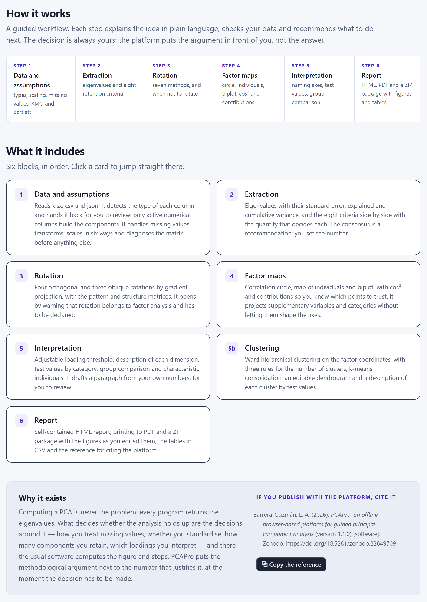
12345
Figure 2.1. The lower part of the home screen.
1How it works: the six steps of the route.
2What it includes: a card takes you to its block, or to Block 1 if it is not unlocked yet.
3Clustering, which is optional, has a card of its own, labelled 5b.
4The reference for the program, already formatted.
5⧉ Copy the reference puts it on the clipboard.
iNote · the route has six steps, the bar has eight buttons
The How it works section sums the route up in six steps because clustering (5b) is optional and the home screen is not an analysis step. The bar, by contrast, shows the eight possible destinations. One analysis may well go from Block 5 straight to the report.
2.2The theory inside each block
Every block opens with a theory card: expandable topics that explain what is being computed and how to decide, written for someone who needs to understand without a statistics textbook at hand. There are 40 topics in all, each one written in Spanish and in English; it is not a machine translation.
The longest is the theoretical framework of Block 1, with thirteen topics worth having clear before you touch the data. Some carry a label: essential marks what you should not skip, and ▸ Block 2 or ▸ Block 3 indicates that the topic applies later on. The header of that card also holds the How to cite button.
!Important · the theory is about PCA
The theory cards develop principal component analysis and clustering. What belongs to correspondence analysis, MCA, FAMD and MFA —inertia, the Benzécri and Greenacre corrections, the balance between groups— appears in the notes of each results card when you use those methods, and is developed in the chapters of this manual (sections 4.5, 6.5 and 7.6).
θHow to make the most of the theory
There is no need to read the forty topics before starting. Read the Block 1 framework through once —topic 3, Postulates and assumptions, above all— and leave the rest for the moment of the decision: open the Block 2 theory when the retention criteria disagree, the Block 4 theory before publishing a figure. That way the theory arrives when it has a concrete question to answer.
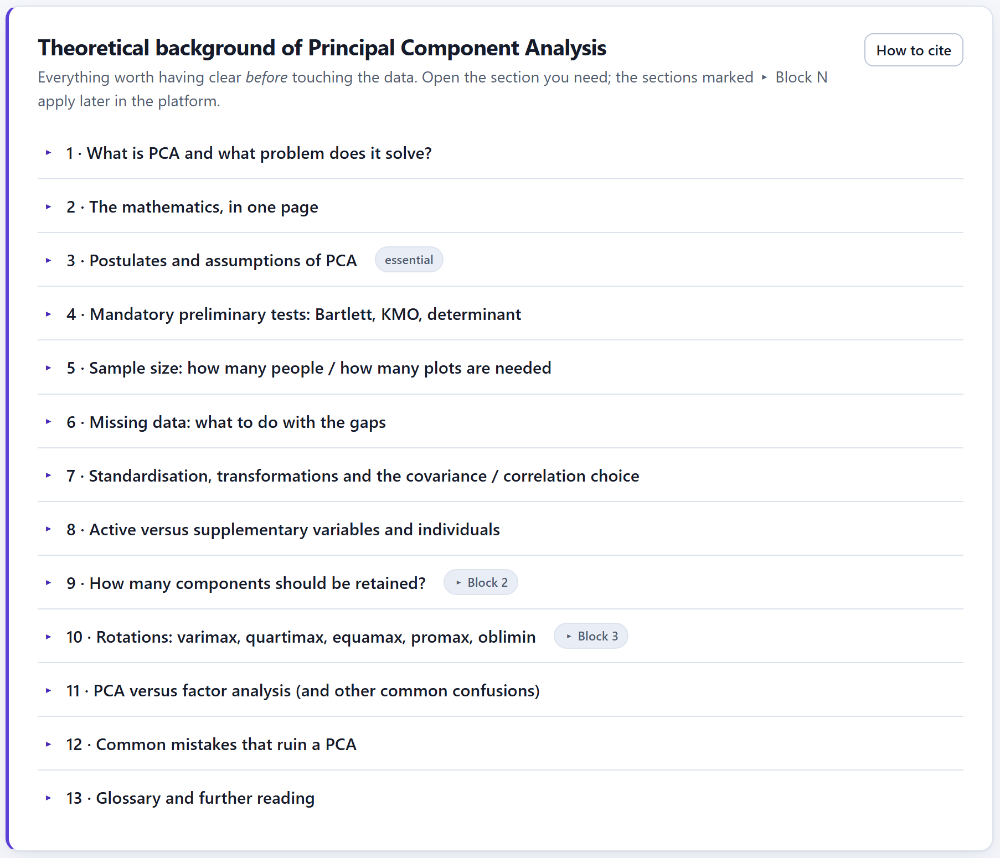
12345
Figure 2.2. The theoretical framework of Block 1, with its thirteen topics collapsed.
1How to cite opens the dialog of figure 2.4.
2Each topic opens and closes with a click.
3essential: postulates and assumptions of PCA.
4▸ Block 2: it applies when deciding how many components to retain.
5The last topic gathers a glossary and recommended reading.
Table 2.4. The thirteen topics of the theoretical framework and where this manual develops them.
11 · PCA versus Factor Analysis (and other common confusions)
Blocks 2 and 3
5.1
12 · Common mistakes that ruin a PCA
The whole analysis
Appendix B
13 · Glossary and further reading
Reference
Appendices C and F
The remaining blocks have their own theory card, shorter and focused on what that block decides.
Table 2.5. The theory of the other blocks.
Block
Title of the card
Topics
2
Component extraction: theory
What extraction produces · The retention criteria, one by one · Common mistakes at this step
3
Rotation: theory
The problem rotation solves · Simple structure: Thurstone's goal · Orthogonal rotations: the orthomax family · Oblique rotations: when the axes may correlate · Is it legitimate to rotate principal components? · How to choose the loading threshold
4
Factor maps: theory
The two clouds: individuals and variables · cos² and contributions: the two measures that keep you from misreading · The biplot and its scale · Ellipses: which to draw and what each one means · Supplementary elements · Conventions for publishing a PCA figure
5
Interpretation: theory
What it means to “interpret” a component · The test value (v.test): how an axis is characterised with categories · Do the groups differ on the components? — and the circularity trap · Goodness of fit: reproduced matrix and RMSR · How the results are written up
5b
Clustering on the components: theory
Why cluster on the axes and not on the variables · Ward's criterion · How many clusters · Consolidation by k-means · How a cluster is described · What a clustering does not prove
6
Report and export
What this block produces
2.3Language and preferences
PCAPro works in full in Spanish and in English: the interface, the forty theory topics, the interpretation text it writes with your own figures and the final report. The language is chosen with the switch in the header. The first time, the app uses your browser's language —English if it is in English, Spanish in any other case— and from then on it remembers your choice.
12
Figure 2.3. The same home screen with the interface in English. 1 The language switch. 2 The blocks change name: block 5b, Agrupamiento in Spanish, appears as Clustering.
What changes at once and what does not
Switching the language is immediate in the text of the interface, but not in what has already been computed. We checked this with the iris example: after extracting the components in Spanish and switching the app to English, the card titles changed, but the scree plot and the indicators stayed in Spanish until Extract components → was pressed again.
Table 2.6. The effect of switching the language halfway through an analysis.
Element
Changes at once
How to update it
Buttons, menus, card titles and theory
●
—
Results already computed: indicators, tables and checklists
—
Press the main button of the block again.
Figures already drawn: default titles, axes and legends
—
Press the main button of the block again.
Titles you wrote yourself in the figure editor
—
Switching the language does not touch them, but they are lost if you run the block again: the figure is redrawn from its default values.
Report and ZIP package
◐
They come out in the language that is active when you generate them.
✓Decision rule · which language do I work in?
If you are going to…
then…
Publish in Spanish or teach a class
Choose Spanish before loading the data and leave it there.
Publish in English
Choose English before loading the data: the figures will come out with their titles and axes already in English, and so will the report.
Switch halfway through the analysis
Run the blocks again from the first one you want in the other language, in order, and edit the figures afterwards: running a block again erases the changes made to its figures.
File names change with the language too: the report downloads as …_informe_ACP.html or …_PCA_report.html, and the tables in the ZIP go in tablas/ or in tables/.
What the app remembers
PCAPro has no user accounts and no settings panel, and it saves the bare minimum.
What
Remembered
Detail
Language
●
Saved in your browser, on that computer.
Data, settings and results of the analysis
—
They live while the tab is open; reloading the page starts from scratch.
Figure styling
—
It is kept as long as you do not run the block again or reload the page; download each figure as soon as you have it the way you want.
Light or dark mode
◐
The interface follows your operating system's mode; the figures keep their own theme, Light by default, so that they download the same way.
2.4How to cite PCAPro
Citing the software an analysis was done with is part of reporting it: it lets others know exactly which tool, and which version, produced the results. It is also what makes the work behind a free program visible. The reference appears in five places in the app, always identical.
Table 2.7. Where to find the reference.
Place
What it offers
The How to cite button, in the Block 1 theory
A dialog with the reference and two buttons for copying it as plain text or as BibTeX (figure 2.4).
Home screen, Why it exists section
The reference and ⧉ Copy the reference (figure 2.1).
The 6.4 · How to cite PCAPro card of Block 6
The reference with its two copy buttons, at the end of the analysis.
The generated report
The methods paragraph already includes “(Barrera-Guzmán, 2026)”, and a final section repeats the reference with its BibTeX.
ZIP package
The CITATION.bib file, ready to import into Zotero, Mendeley or LaTeX.
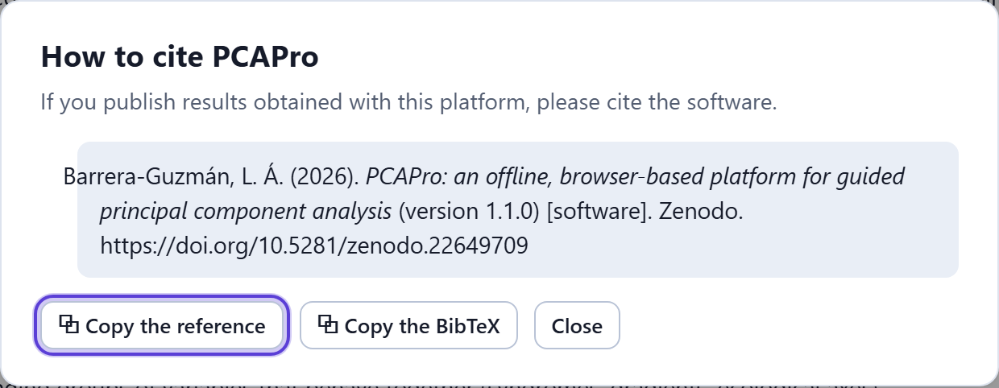
1234
Figure 2.4. The How to cite PCAPro dialog. 1 The reference. 2 Copy as text. 3 Copy as BibTeX. 4 Closes the dialog.
The reference
Barrera-Guzmán, L. Á. (2026). PCAPro: an offline, browser-based platform for guided principal component analysis (version 1.1.0) [software]. Zenodo. https://doi.org/10.5281/zenodo.22649709
In BibTeX, exactly as the ⧉ Copy the BibTeX button copies it and as it goes in CITATION.bib:
@software{pcapro,
author = {Barrera-Guzmán, Luis Ángel},
title = {{PCAPro}: an offline, browser-based platform for guided principal component analysis},
year = {2026},
version = {1.1.0},
publisher = {Zenodo},
doi = {10.5281/zenodo.22649709},
url = {https://github.com/luisangelbg/PCAPro}
}
θThe concept DOI and the version DOIs
Every published version of PCAPro is archived in Zenodo with its own digital identifier (DOI), and all of them hang from a concept DOI that always leads to the most recent version. The reference uses the concept one, 10.5281/zenodo.22649709: that way every citation of the program accumulates in a single record, and the exact version you used is stated in the text, “(version 1.1.0)”. If a journal or a reviewer asks you for the identifier of the specific version, 1.1.0 is 10.5281/zenodo.22694679.
What to write in the methods section
The Block 6 report writes the methods paragraph with the settings and the figures of your analysis, and already includes the citation. With the iris example, with the components just extracted and unrotated, it says:
▸Paragraph generated by the report · iris
A total of 150 observations and 4 quantitative variables (Sepal.Length, Sepal.Width, Petal.Length, Petal.Width) were analysed by principal component analysis. Missing data were handled by deleting incomplete rows. No prior transformation and z standardisation (correlation matrix) were applied. Sampling adequacy was verified with the Kaiser–Meyer–Olkin index (KMO = 0.54) and Bartlett's test of sphericity (χ²(6) = 707, p < 0.0001). The number of components was decided by combining Horn's parallel analysis (500 matrices generated by permutation of the observed data, 95th percentile), the Kaiser criterion, the broken stick, Velicer's MAP criterion and the scree plot. No rotation was applied. All computations were carried out in PCAPro (Barrera-Guzmán, 2026), which implements the spectral decomposition by Jacobi rotations and the factor rotations by the gradient projection algorithm.
!Important · it is a draft, not a final text
The paragraph works as a starting point, but review it before pasting it. Three things almost always need adjusting: the wording, which can read awkwardly because it is assembled from pieces —in the example, “no prior transformation and z standardisation were applied”—; the retention criterion you actually used to decide, which the paragraph lists in general terms; and the number of components retained, which you must state together with its percentage of variance.
✓Decision rule · what to cite besides the program
If your analysis used…
cite also
Any PCA
Pearson (1901) and Hotelling (1933), or a reference text such as Jolliffe (2002).
Parallel analysis to retain components
Horn (1965).
The MAP criterion
Velicer (1976).
Varimax or promax rotation
Kaiser (1958); Hendrickson and White (1964).
A test of sphericity
Bartlett (1950).
Clustering on the axes
Ward (1963); Husson, Josse and Pagès (2010).
There is no need to look the full details up: the Methodological references section of the report carries them, and appendix F gathers them together.
iNote · cite this manual too if you use it in class
If you prepare a course, a thesis or teaching material based on this manual, cite it separately from the program: Barrera-Guzmán, L. Á. (2026). PCAPro. User's Manual (1st ed.).
With the home screen, the theory, the language and the citation settled, the next chapter enters the first block of the analysis: how to prepare the data sheet, load it and check whether it supports a factor analysis.
3
Chapter three · Block 1
Data and assumptions
How to prepare the sheet, load it, say what role each column plays, deal with missing data and scales, and check whether the data support a factor analysis before anything is computed. It ends with the choice of method and four practice files, one for each typical situation.
3.1Preparing the data sheet
3.2Loading a file and the preview
3.3The role of each variable
3.4Missing data, transformations and scaling
3.5The diagnostics: Bartlett, KMO and MSA
3.6Graphical exploration and recommendations
3.7Which method applies
3.8Step by step: four practice files
3.1Preparing the data sheet
Most of the problems of a factor analysis arise before the program is opened, in the shape of the sheet. Ten minutes tidying it up save hours of odd results.
PCAPro expects a rectangular table: the first row with the names of the variables and each following row with one individual —a plant, a plot, a soil sample—. It is the “wide” format you already use for recording field data.
Like this
ID
Site
OM_pct
Total_N_pct
1
S001
Upper slope
2.15
0.080
2
S002
Upper slope
1.04
0.079
3
S031
Mid slope
3.09
4
S061
Floodplain
3.54
0.182
Not like this
ID
Site
OM
Total N
1
S001
1
2.15 %
0.080
2
— Mid slope —
3
S031
2
3.09
no data
4
S061
3
≈ 3.5
0,182
On the left, four rows of practice1_soils.csv, with one missing value left blank as an example. On the right, five common mistakes: a site coded with numbers, a title row in the middle of the data, a missing value written as unrecognised text, an approximate number and a decimal comma in a file that uses the point. A % sign at the end of a number, by contrast, is ignored without trouble.
Table 3.1. Rules for a sheet PCAPro reads without trouble.
Rule
Why
One table per sheet, starting at cell A1
The app takes the first non-empty row as the header and everything below as data.
No merged cells and no title rows in between
A row such as “— Mid slope —” would be read as one more individual, almost empty.
One column per variable, with a short, unique name
The name appears in tables and figures. Avoid spaces and accents if the file will pass through other programs.
Only the number in each cell
“12 cm” or “≈ 3.5” are not read as numbers. A % sign at the end is ignored.
Groups as text, not as codes: “Valley”, “T1”, “Control”
A column of 1, 2, 3 looks numeric; the app suspects it is a code, but a text label leaves no doubt.
One identifier column with distinct values
It labels the points on the maps; without it, the individuals are called “Ind 1”, “Ind 2”…
Missing values left empty or with a recognised code (table 3.2)
Any other text in a numeric column counts as a non-numeric value.
Prefixes for thematic groups: soil_pH, plant_height
That way the recommender detects the groups and proposes multiple factor analysis (section 3.7).
Table 3.2. Text the app recognises as missing data, regardless of case.
The app reads SD and sd as “no data”. If some column holds standard deviations, or a category is named that way, rename it before loading the file; otherwise those cells will be left empty.
3.2Loading a file and the preview
The 1.1 · Load your data set card accepts .xlsx, .xls, .csv, .tsv and .txt files. Drag the file onto the dotted area or click it to browse. When the reading is done, a green message appears with the rows and columns read, and cards 1.2, 1.3 and 1.4 open.
12345
Figure 3.1. The 1.1 · Load your data set card.
1Upload area: drag the file in or click.
2Decimal separator (table 3.3).
3Column separator, for text files only.
4The iris example; it needs the local server or the online version.
5The simulated example; it always works.
Table 3.3. The decimal separator.
Option
How it reads “1,234” and “12,5”
When to choose it
Detect automatically
Each value on its own: if it ends in a comma and one to three digits, and has no point followed by digits, the comma is the decimal mark: “12,5” = 12.5, but also “1,234” = 1.234. Otherwise, the commas are removed as thousands separators.
Most files.
Point (12.34)
The commas are removed: “1,234” = 1234.
If your file uses the comma for thousands.
Comma (12,34)
The points are removed and the comma is the decimal mark: “1.234,5” = 1234.5.
Files exported with a Spanish regional setting.
iNote · spreadsheets
If the Excel workbook has several sheets, the Workbook sheet picker appears so you can choose which one to analyse. The separators do not apply to .xlsx, which already stores numbers as numbers. Remember that reading .xlsx needs a connection the first time you open the app; .csv files are always read offline (section 1.5).
The 1.4 · File preview card shows the first twelve rows exactly as they were read. A symbol in front of each name recalls its role: ⌗ active · ⊕ supplementary quantitative · ⌸ qualitative · ◇ identifier · ∅ excluded. If you see numbers where you expected text, or dashes where there were data, check the decimal separator before going on.
3.3The role of each variable
When the file is loaded, the app examines each column, works out its type and proposes a role for it. The proposal is usually right, but reviewing it is the most important step of the block: only the variables marked as active build the components.
Table 3.4. How the app decides the type and the initial role of a column.
If the column…
Type detected
Role proposed
has at least 85 % numeric values (and three or more)
Continuous or integer numeric
Active
is numeric but does not vary
Constant
Exclude
is integer numeric with very few distinct values (8 or fewer, and no more than 5 % of the rows)
Numeric (integers), with the “group code?” warning
Qualitative / group
is text and all its values are distinct
Identifier
Row identifier
is text with more than 30 categories
Text
Exclude
is text with 30 categories or fewer
Categorical
Qualitative / group
Table 3.5. The five roles.
Role in the app
What it does in the analysis
Use it for
Active (enters the PCA)
Builds the components.
The measurements you want to summarise, all bearing on the same question.
Supplementary quantitative
Takes no part in the computation; it is projected afterwards onto the correlation circle.
A response variable, such as yield, that you want to see on the map without it defining the map.
Qualitative / group
Colours the individuals, draws ellipses and allows groups to be compared; in MCA, CA and FAMD it can enter the axes.
Design factors and characteristics with categories: site, treatment, species.
Row identifier
Gives each individual a name in tables and maps.
The sample key.
Exclude
The column is left out of everything.
Dates, field notes, auxiliary columns.
123456
Figure 3.2. The 1.2 · Set the role of each variable card with practice1_soils.csv.
1Role indicators; the n:p ratio colours itself.
2How many active variables will go in.
3Quick selection: unticking turns a variable into supplementary.
4Tick all, untick all or return to what was detected.
5A thumbnail histogram of each column.
6Site, detected as categorical with 3 levels.
The table of variables continues to the right with the spread, the shape of the distribution, the warnings and the role picker, which figure 3.3 shows with the seeds file. The quick selection and the Role in the PCA picker are synchronised: changing one changes the other.
Figure 3.3. The right-hand part of the table of variables with practice2_seeds.csv. The Warnings column marks in orange the variables with a value more than three standard deviations from the mean; the Role in the PCA column offers only the roles each type admits: a text column cannot be active. Below, the How to decide box sums table 3.5 up.
Table 3.6. The warnings in the table of variables.
Warning
Colour
What it means and what to do
zero variance
red
Every value is the same; it adds nothing and is left out.
N % missing
orange > 5 % · red > 20 %
Consider whether to impute or exclude the variable (section 3.4).
skewed · very skewed
orange |g₁| > 1 · red |g₁| > 2
Consider a logarithmic or square-root transformation.
N out. |z|>3
orange
There are N values more than three standard deviations from the mean: check that they are not recording errors.
group code?
orange
Integers with few distinct values: probably a treatment or a block.
no warnings
green
—
✓Decision rule · active, supplementary or out?
If the variable…
then
Describes the individuals from the same question as the others
Active.
Is the response you want to explain with the structure (yield, mortality)
Supplementary quantitative: that way you do not manufacture the relationship you want to find.
Is a design factor (treatment, block, site)
Qualitative / group, and outside the axes (section 1.4).
Is a sum, ratio or percentage of other active variables (area = length × width)
Keep either the original variables or the derived one, not both.
Measures another theme (climate among plant variables)
Supplementary, or else a multiple factor analysis with groups.
The preparation button is enabled with two active variables, but a PCA with fewer than three rarely has anything to summarise. The n:p ratio indicator turns green from 10 individuals per variable, amber between 5 and 10, and red below 5.
3.4Missing data, transformations and scaling
The 1.3 · Preparing the matrix card gathers the three decisions that turn the raw table into the matrix that is analysed. They are applied in this order: first the missing data, then the transformation and finally the scaling. Figure 3.4 shows the whole card.
Missing data
Table 3.7. Options for the missing data of the active variables.
Option
What it does
Use it when
Delete incomplete rows (listwise)
Discards every row with any missing value among the active variables. It is the default option.
Few data are missing and they are scattered: you lose less than 10 % of the rows.
Impute with the variable mean
Fills each gap with the mean of its column.
Few data are missing, the variable is symmetric and you do not want to lose rows.
Impute with the variable median
Fills each gap with the median.
As above, with skewed variables or with outliers.
With either imputation, a row that is empty on every active variable is discarded all the same. If fewer than three rows remain after the treatment, the app does not prepare the matrix and says so.
1234567
Figure 3.4. The 1.3 · Preparing the matrix card.
1Treatment of the missing data.
2Prior transformation.
3The scaling, marked as a key decision.
4z standardisation, chosen by default.
5The other six ways of scaling.
6The chosen scaling, exactly as it will go into the report.
7Prepares the matrix and launches the diagnostics.
θThe price of imputing
Filling gaps with the mean invents no information, but it flattens it: every gap receives the same value, so the variance of the variable falls and its correlations with the others are attenuated. With 2 % of gaps the effect is negligible; with 20 % it can change the components. If you impute, state it in the methods, and if a lot of data are missing consider iterative methods such as those of missMDA in R.
Prior transformation
Table 3.8. Available transformations. They are applied to each active variable before scaling.
It adds 1 − minimum, so that the smallest value is 1.
Base 10 logarithm
The same as ln, in orders of magnitude.
It adds 1 − minimum.
Square root
Moderate skew and small counts.
It adds −minimum if there are negatives.
Inverse, 1/x
Heavily skewed rates and times.
It adds 1 − minimum.
iNote · one transformation for all
The chosen transformation is applied to every active variable, not only to the skewed ones. If only one or two need it, transform them in your spreadsheet before loading the file and leave None here.
Scaling: the key decision
PCA looks for the directions of greatest variance, and variance depends on the units. The scaling decides how much each variable weighs. Start with the decision rule; table 3.9 sets out the seven options of the app.
✓Decision rule · how do I scale?
If your active variables…
then
Are in different units (%, ppm, cm, g)
z standardisation. That is the case in almost every agronomic and ecological study.
Share unit and scale and you want to keep them
Unscaled. The app considers this defensible, in amber, if the largest standard deviation is no more than 4 times the smallest; above that it marks it in red.
Have real outliers you do not want to remove
Robust, and compare with z.
Are intensities or spectra with dominant peaks
Pareto.
If in doubt, standardise. A PCA on correlations is rarely a mistake; one on covariances with mixed units almost always is. Section 3.8 shows the case with figures.
Table 3.9. The seven ways of scaling.
Option
Computation
Effect and use
z standardisation(default)
(x − mean) / SD
Every variable weighs the same. PCA on the correlation matrix. The correct option if the units differ.
Unscaled
x
PCA on covariances. Only if every variable shares a unit and a scale, for example measurements of one organ in millimetres.
Centre only
x − mean
Amounts to unscaled: PCA centres in any case.
Pareto
(x − mean) / √SD
It attenuates the dominant variables without equalising them. Typical in metabolomics and spectra.
VAST
(x − mean) / SD × mean / SD
It rewards stable variables, those with a low coefficient of variation.
Range [0, 1]
(x − min) / (max − min)
Convenient for indices, but a single extreme value compresses the rest.
Robust
(x − median) / MAD
It uses the median and the median absolute deviation: it withstands the outliers you do not want to remove.
3.5The diagnostics: Bartlett, KMO and MSA
When you press Prepare matrix and run diagnostics → the app builds the matrix, computes its correlations and opens the 1.5 · Data set diagnostics card: a grade from A to D, eight indicators and the sampling adequacy of each variable.
θWhat a PCA assumes
Topic 3 of the theoretical framework, Postulates and assumptions, develops them; in short they are five conditions. The variables must be correlated, because that is what the analysis lives on; the relationships must be approximately linear, because that is how Pearson measures them; the sample must be sufficient for the correlations to be stable; there must be no outliers that create an axis on their own; and the scales must be comparable or standardised. Descriptive PCA does not require normality, although heavily skewed distributions distort the correlations.
θBartlett, KMO and MSA in one sentence each
Bartlett asks whether the variables are correlated at all; with large samples it almost always says yes, so it is not enough. KMO asks whether those correlations are of common structure: it compares the correlations with the partial correlations, which become small when several variables share a factor. The MSA is the same computation for each variable: it says which ones contribute to the structure and which only add noise. Kaiser's scale for interpreting them is in section 1.9.
The grade from A to D
The grade adds up points from six criteria to a maximum of 100. It sums the diagnostics up in a letter, but it does not replace them.
A Excellent: 82 or more · B Good: 66 to 81 · C Acceptable with reservations: 48 to 65 · D Problematic: below 48
!Important · the letter does not see everything
The grade does not consider the scales, the outliers, the skew or the redundancy. That is why a file with mismatched units left unstandardised can earn an A, and one with four unacceptable variables a B. Always read the colours of the indicators, the MSA table and the list of recommendations of section 3.6: that is where the problems the letter does not weigh are.
123456
Figure 3.5. The diagnostics of practice2_seeds.csv, a file with problems planted in it.
1The grade: B, “Good”, with 79 points out of 100.
2A KMO of 0.556, in red: low.
3Mean absolute correlation of 0.219, in amber.
4Four multivariate outliers.
5Four variables with an unacceptable MSA.
6Weight_mg, the only meritorious one.
Table 3.10. The eight indicators of the diagnostics.
Indicator
What it measures
Colour
Observations (n)
Individuals left after the treatment of missing data.
—
Active variables (p)
Columns that build the components.
—
Overall KMO
What share of the correlations is common to several variables and not just to pairs.
green ≥ 0.80 · amber ≥ 0.60 · red
Bartlett
Whether the correlation matrix differs from the identity.
green if p < 0.05 · red
Determinant of R
Close to 0: linearly dependent variables; close to 1: almost no correlation.
green > 10⁻⁵ · amber
Mean |r|
Mean absolute correlation between pairs, and how many pairs exceed 0.3.
green ≥ 0.30 · amber
Components with λ > 1
How many axes Kaiser would retain and how much they would explain. It is a preview; Block 2 decides.
—
Outliers (Mahalanobis)
Individuals whose distance D² exceeds the 99.9th percentile of χ² with p degrees of freedom.
amber if there is any · green
Sampling adequacy per variable
The MSA table orders the variables from lowest to highest. Those that fall below 0.50 are candidates for leaving the analysis, but one at a time: when a variable is removed the partial correlations of all the others change, and another one that looked unacceptable may turn out fine. Section 3.8 shows this with the seeds.
Identify the variable with the lowest MSA.
Ask yourself whether it makes sense to remove it from the standpoint of your discipline. If it is central to your question, leave it in and accept a more modest KMO.
Untick it in the quick selection of card 1.2: it becomes supplementary and will still be visible on the maps.
Press Prepare matrix and run diagnostics → again and read the table once more.
Repeat while any remains below 0.50 and the removal can be justified.
3.6Graphical exploration and recommendations
Below the diagnostics, the 1.6 · Graphical exploration card gathers five editable figures. They serve to see what the numbers summarise: table 3.12 describes them, and figure 3.6 shows the one that changes the most decisions.
1234
Figure 3.6. Scale profile of practice3_scales.csv. 1 The ratio between the largest and the smallest standard deviation: more than a million times. 2 Volume_mm3, with a deviation of 49,500. 3 The pH, with 0.321. 4 The axis is logarithmic: each tick multiplies by ten.
Table 3.12. The exploration figures.
Figure
What it shows
What to look for
Map of missing data
Each row of the file against each variable, with the gaps in red and their count.
Missing values concentrated in one variable or in a group of individuals.
Scale profile
The original standard deviation of each variable, on a logarithmic scale.
Differences of several orders of magnitude: standardising is needed.
Distribution of each variable
Histograms with the reference normal curve and the skew g₁.
Long tails, bimodality, impossible values.
Correlation matrix
The Pearson correlations between active variables, in colour.
Blocks of correlated variables and nearly redundant pairs.
Comparison after preprocessing
Box plots of the variables once transformed and scaled.
That the scales have become comparable.
The recommendations
The 1.7 · Recommendations on your data set card translates the diagnostics into ten points, always in the same order, each with its colour, the figure behind it and the suggested action. Figure 3.7 shows it with the file without structure, and table 3.13 sums up when each colour is taken.
12345
Figure 3.7. The recommendations for practice4_no_structure.csv. 1 A bare sample: n = 80. 2 Bartlett not significant. 3 Unacceptable KMO. 4 Correlations too weak. 5 Even so, Kaiser would retain 3 components: a warning about that criterion.
Table 3.13. The ten points of the list of recommendations.
#
Point
✔ green
⚠ amber
✖ red
1
Sample size
n:p ≥ 10 and n ≥ 100
n:p ≥ 5
n:p < 5
2
Bartlett
p < 0.05
—
p ≥ 0.05, or a singular matrix
3
KMO
≥ 0.80 with no MSA < 0.50
≥ 0.60, or some MSA < 0.50
< 0.60
4
Correlation structure
some pair with |r| ≥ 0.30
—
mean |r| < 0.30 and no pair ≥ 0.30
5
Multicollinearity
no pair with |r| ≥ 0.90
some pair ≥ 0.90
—
6
Scales
z standardisation
unscaled or centre only, deviation ratio ≤ 4
unscaled or centre only, ratio > 4
7
Missing data
≤ 5 % of the cells
≤ 15 %
> 15 %
8
Multivariate outliers
none
some
—
9
Skewness
no |g₁| > 1
some
—
10
Expected dimensionality
Informative (ℹ): components with λ > 1 and the variance of the 1–2 plane.
Two points can also come out as informative (ℹ): the one about scales, when you choose Pareto, VAST, range or robust, which the app does not grade and asks you to document; and the one about outliers, when there are so few observations (n ≤ p + 2) that the Mahalanobis distance cannot be computed.
iNote · a rounding that misleads
In figure 3.7, the KMO point lists “Variables with MSA < 0.5” and includes “Temperature_C (0.5)”. Its real MSA is 0.497; the list shows it with two decimal places. For the exact values consult the MSA table of the diagnostics, which uses three.
The prepared matrix and the downloads
The 1.8 · Prepared matrix and downloads card, at the end of the block, shows the first ten rows of the matrix that will be analysed and offers four downloads.
Button
Contents
⬇ Prepared matrix (CSV)
The matrix after missing data, transformation and scaling: what actually goes into the analysis.
⬇ Correlation matrix (CSV)
The correlations between active variables.
⬇ Variable summary (CSV)
The table of card 1.2 with descriptive statistics and roles.
⬇ Block 1 report (TXT)
The diagnostics and the recommendations in plain text.
3.7Which method applies
Between the recommendations and the downloads is the 1.9 · Which method fits card, which figure 1.4 introduced. It has three parts: one card per method with its verdict, a list of warnings and, below, the configuration the chosen method asks for. A click on a card chooses the method; those marked not applicable cannot be chosen.
Table 3.14. When the app recommends each method.
Method
Recommended if…
Possible if…
PCA
There are at least two active quantitative variables and no qualitative one, or up to two qualitative ones with three or more quantitative: the signature of measurements plus a design factor.
There are more qualitative ones; they would be left as supplementary.
CA
There are exactly two qualitative variables and no quantitative one.
There are two or more qualitative ones: one pair is crossed.
MCA
There are three or more qualitative variables and no quantitative one.
There are two or more qualitative ones.
FAMD
There are quantitative and qualitative variables, without the design-factor signature.
With the design-factor signature: if the qualitative variable is a characteristic.
MFA
The names of six or more quantitative variables form two or more groups by prefix (with _ or -), covering at least 75 % and with one group holding three variables.
There are four or more variables in all; the groups are declared by hand.
A sixth card, Clustering on components (HCPC), always appears as “possible”: it does not compete with the other five, it is run after any of them (chapter 8). If more than one method is recommended, the app preselects the most specific one in this order: MFA, FAMD, MCA, CA and PCA. If none is recommended, it takes the first that is possible.
For the recommender, a qualitative variable is any column with the Qualitative / group role and at least two levels; a quantitative one, any active numeric column. If you change a role on card 1.2 and prepare the matrix again, the verdicts are recomputed.
Table 3.15. The warnings of card 1.9, each with the figure behind it.
Warning
It is issued when
Small sample
There are fewer than 50 observations.
Few observations per variable
There are fewer than 5 observations per variable.
There is no correlation to summarise (red)
Bartlett does not reject independence (p ≥ 0.05), or the mean |r| is below 0.20 and at most one pair exceeds 0.30.
Nearly redundant variables
Some pair of quantitative variables has |r| ≥ 0.90.
This looks like an abundance table
Three or more active variables, all non-negative integers, with at least 20 % zeros. On such data PCA produces the “Gauch arch”: CA or a transformation is advisable.
Categories with very few cases
Some category has fewer than 5 cases or less than 2 % of the rows.
The qualitative variables are not associated (red)
The highest Cramér's V between pairs of qualitative variables is below 0.10.
!Important · the verdict looks at the types; the warnings, at the content
The verdict of each card is based on what type of variables you have; the warnings say whether the method has anything to find. They can contradict each other. With practice4_no_structure.csv, the PCA card says “recommended” —six quantitative variables and one qualitative— and immediately below, in red, appears “There is no correlation to summarise”. The warning prevails: with those data there is no analysis to be done.
The configuration of each method
Table 3.16. What card 1.9 asks for according to the chosen method.
Method
Configuration
PCA
None: it uses the active variables with the chosen scaling, and the qualitative ones are left as supplementary.
CA
Two pickers, Rows and Columns, to choose which qualitative variables are crossed. They must be different.
MCA
One checkbox per qualitative variable; the unticked ones are left as supplementary. At least two are needed.
FAMD
One checkbox per qualitative variable: tick those that are characteristics of the individual and untick the design factors. At least one is needed.
MFA
A table with each active variable and a field for the name of its group. Those bearing the same name go together; each group needs at least two variables.
The button at the end of the block changes with the choice —Go to Block 2: PCA →, Go to Block 2: MCA →— so that you always know which method you are about to run. With CA, MCA and FAMD, the rows that have one of the qualitative variables used left empty are discarded when the method is run, and Block 2 indicates this with the Rows with no data indicator.
3.8Step by step: four practice files
The four files in the datos/ folder recreate the situations that come up most often in practice. Load each one with the upload area of card 1.1, leave the detected roles and the z scaling unless the case says otherwise, and press Prepare matrix and run diagnostics →. The figures are the ones the app gives.
Case 1 · Soils: everything in order
▸practice1_soils.csv · 90 soil samples from three sites: upper slope, mid slope and floodplain
On loading, the app detects ID as the identifier, Site as a qualitative variable with 3 levels and the six soil variables as active. The n:p ratio is 15.0 : 1, in green.
After preparing, the grade is A, Excellent (91/100): KMO = 0.752, Bartlett χ² = 443.9 with 15 df (p < 0.0001), determinant 5.79 × 10⁻³ and mean |r| 0.455, with 9 of 15 pairs above 0.3.
Every MSA exceeds 0.69; the lowest is Clay_pct (0.695). There are no outliers, no missing data and no skewness.
The strongest pair is organic matter and total nitrogen (r = 0.891), as expected in soils. Two components exceed λ = 1 and the 1–2 plane retains 87.2 %.
The only amber remark is “Sample size sufficient but bare”: the ratio is above 10, but n = 90 does not reach 100. Card 1.9 recommends PCA, with Site as supplementary.
Reading. A file like this can be extracted with confidence. The size warning suggests caution with the smaller loadings: with n < 100 it is advisable to interpret only those above 0.55.
Case 2 · Scales: why standardise
▸practice3_scales.csv · 100 observations from four plots, with variables in widely differing units
Load the file and, on card 1.3, choose Unscaled on purpose. Prepare the matrix.
The grade is A (94/100): KMO = 0.757, Bartlett significant. Nothing in the letter suggests a problem.
But the list of recommendations marks in red “Widely differing scales left unstandardised”, and the scale profile (figure 3.6) shows why: the deviation of Volume_mm3 is 49,500 and that of the pH is 0.321.
If the components were extracted like that, PC1 would take up 100.00 % of the variance and would be, literally, Volume_mm3: its coefficient on PC1 is 1.000 and that of every other variable is 0.000.
Go back to card 1.3, choose z standardisation — recommended and prepare again. The grade stays at A, the red warning turns green, and the first three components now take up 41.95 %, 35.02 % and 13.07 %, with Height, Weight and Volume sharing the weight on PC1.
10⁶×
A letter that gives no warning
The ratio between the deviations of this file is 1,013,367 times, and the grade is still A: KMO and Bartlett use correlations, which do not depend on the units. The warning is only in the list of recommendations.
Case 3 · No structure: when not to run a PCA
▸practice4_no_structure.csv · 80 sampling points in two batches, with six independent environmental variables
Load and prepare with z standardisation. The grade is D, Problematic (47/100).
Bartlett is not significant: χ² = 9.3 with 15 df, p = 0.8605. The KMO is 0.465, unacceptable, and no variable reaches an MSA of 0.54.
The mean |r| is 0.076 and no pair reaches 0.30; the highest, rainfall with altitude, is r = 0.169. The determinant is 0.885: the correlation matrix is almost the identity.
Even so, the informative point says that Kaiser would retain 3 components and that the 1–2 plane would explain 40.8 %.
On card 1.9, PCA appears as “recommended” because of the types of variables, and below it the red warning “There is no correlation to summarise”.
Reading. There is no analysis to be done: each variable is its own axis. The case teaches two things worth remembering. First, that the Kaiser criterion retains components even in data without structure, and that is why Block 2 does not trust it alone. Second, that the verdict on the method does not replace the warnings. If you expected those variables to be related, the finding is precisely that they are not.
Case 4 · Seeds: removing variables one at a time
▸practice2_seeds.csv · 120 seeds, 60 wild and 60 cultivated, with problems planted in them
Load and prepare. The grade is B (79/100), but the indicators tell another story: KMO = 0.556, low; four variables with an unacceptable MSA; two redundant pairs, Width_mm with Area_mm2 (r = 0.934) and Length_mm with Area_mm2 (r = 0.921); and four multivariate outliers, the largest G017 with D² = 75.5 (figure 3.5).
Remove the variable with the lowest MSA, Moisture_pct (0.388), by unticking it in the quick selection, and prepare again.
Repeat with the new lowest one until none remains below 0.50. Table 3.17 shows the sequence.
Table 3.17. Successive removal of variables in the seeds file.
All ≥ 0.50: Thickness_mm rose to 0.503 without being removed.
4
Area_mm2 (redundant)
5
0.726
A
The redundant pairs disappear, but Thickness_mm drops to 0.333.
5
Thickness_mm (0.333)
4
0.741
A
All ≥ 0.54; two outliers remain: G017 (D² = 58.0) and G101 (D² = 40.9).
Reading. Three lessons in one table. The first: removing one at a time matters. At step 3, Thickness_mm ended up fine without being touched; if the four unacceptable ones had been taken out at the start all at once, it would have been lost for no reason. The second: redundancy weighs. Area_mm2 is almost length times width, and removing it raised the KMO from 0.591 to 0.726. The third: removals chain together, because each set of variables has its own partial correlations, and Thickness_mm, which had been saved, fell when Area_mm2 was taken out.
!Important · every variable you remove changes the question
The case ends with 4 of 9 variables and a grade of A. That is a good statistical result, but it no longer describes the chemical composition of the seeds, only their size, weight and protein. Before removing a variable ask yourself whether your question still stands without it, and in the methods state which ones you took out and why. The two outliers that remain are not removed for being outliers: check whether G017 and G101 are recording errors and, if they are real seeds, compare the analysis with and without them.
With the matrix prepared, diagnosed and the method chosen, the next chapter enters Block 2: extracting the components and deciding how many to keep.
4
Chapter four · Block 2
Extraction
What extraction computes, how to read eigenvalues, variance and loadings, and how to decide how many components to keep with eight criteria that hardly ever agree. It ends with what Block 2 shows when the method is CA, MCA, FAMD or MFA, and with two complete analyses.
4.1Eigenvalues, variance and loadings
4.2The eight retention criteria
4.3The consensus and the decision
4.4Tables, figures and downloads
4.5Inertia and axes in CA, MCA, FAMD and MFA
4.6Step by step: iris and seeds
4.1Eigenvalues, variance and loadings
Block 2 does the central computation of PCA: it decomposes the prepared matrix into axes ordered from greatest to least variance. Everything you will see afterwards —rotation, maps, interpretation— is built from what comes out here.
The block opens from the step bar once you have prepared the matrix in Block 1. It has a theory card with three topics and, below it, the 2.1 · Extract the components card, which recalls how many individuals and variables go in and on which matrix the computation will be made: the correlation matrix if you standardised, the covariance matrix with any other scaling.
θThe four products of extraction
The spectral decomposition is computed on the correlation or covariance matrix. Four objects come out:
Eigenvalues λ₁ ≥ λ₂ ≥ … ≥ λp: the variance each axis takes up. With correlations they add up to p, because each standardised variable contributes 1.
Eigenvectors: the coefficients of the linear combination that defines each component.
Scores: the position of each individual along each axis, the new reduced table.
Loadings: the correlation between each variable and each component. That is what is interpreted.
Permutation of your data (recommended) shuffles each column separately; Random normal data (classic Horn) simulates normal data.
Permutation assumes no normality and also works with covariances.
Repetitions
200 (fast), 500 (recommended) or 1000.
500 is a good balance; with 1000 the 95th percentile varies less from run to run.
The indicators of card 2.2
Table 4.2. The six indicators of the extraction.
Indicator
What it says
Colour
Possible components
As many as there are active variables.
—
Total variance
Equal to p with correlations; in squared units with covariances.
—
PC1
Percentage of variance of the first axis and its λ₁.
—
PC1 + PC2
The variance of the factor plane that Block 4 will draw.
green ≥ 60 % · amber ≥ 45 % · red
Recommendation
The number of components given by the consensus of the eight criteria (section 4.3).
—
Retained now
Those you are keeping and how much variance they add up to. It starts equal to the recommendation.
green ≥ 70 % · amber ≥ 50 % · red
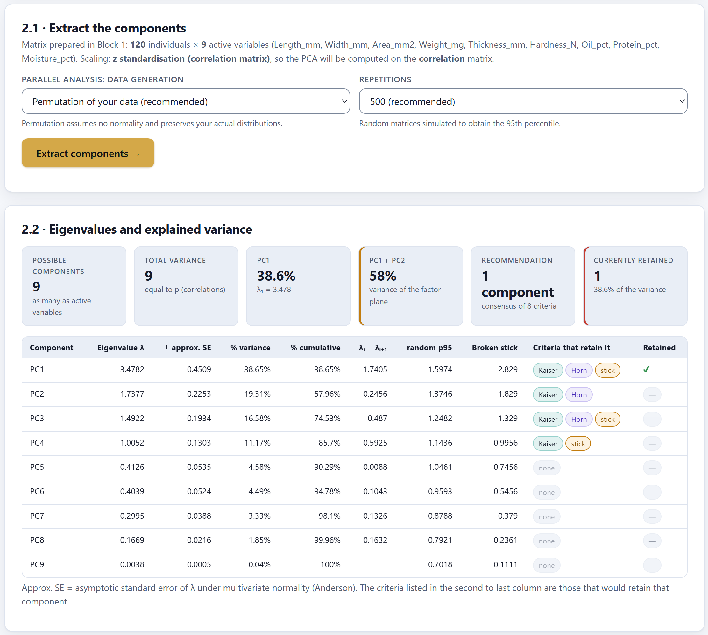
123456789
Figure 4.1. Cards 2.1 and 2.2 with practice2_seeds.csv, its nine active variables and z standardisation.
1How the matrices of the parallel analysis are generated.
2How many random matrices are simulated.
3Launches the extraction.
4Variance of the 1–2 plane, in amber: 58 %.
5The number the consensus suggests.
6The components you are keeping now, in red: 38.6 %.
795th percentile of the random eigenvalues.
8Which references each component exceeds.
9PC4 exceeds the broken stick, but the criterion already stopped at PC2.
The table of eigenvalues
Table 4.3. Columns of the table of eigenvalues.
Column
Contents
Eigenvalue λ
The variance of the component.
± approx. SE
Anderson's asymptotic standard error, λ·√(2/(n−1)), valid under multivariate normality.
% variance · % cumulative
λ divided by the total variance, and its sum up to that component.
λᵢ − λᵢ₊₁
The distance to the next eigenvalue.
random p95
The value that chance produces 5 % of the time (parallel analysis).
Broken stick
The variance expected if it were shared out at random.
Criteria that retain it
The labels Kaiser (λ > 1, with correlations only), Horn (λ > p95) and stick (λ > broken stick), evaluated separately on each row.
Retained
✔ on the components you are keeping.
!Important · the labels are not the criteria
The labels in the table compare each row with its reference; the criteria, by contrast, count components consecutively from the first and stop at the first one that fails. In figure 4.1, PC4 carries the “stick” label (1.0052 > 0.9956), but PC2 no longer had it (1.7377 < 1.829): the broken-stick criterion retains a single component. An isolated label after a gap does not count.
θWhen two axes cannot be told apart
If two consecutive eigenvalues differ by less than their standard error, the two axes are interchangeable: another sample could rotate them within their plane. With the seeds, λ₂ − λ₃ = 0.2456 and the SE of λ₂ is 0.2253: PC2 and PC3 are almost tied. The 2–3 plane is stable, but the orientation of each axis is not, and reading them separately is risky. It is a good reason to rotate in Block 3.
4.2The eight retention criteria
The 2.3 · How many components should be retained? card computes eight published rules and shows, for each one, how many components it would retain and how much variance they would add up to. None is the right one on its own; each has a known bias.
Table 4.4. The eight criteria, in the order of the app, with their weight in the consensus.
Criterion
The rule the app applies
Known bias
Weight
Parallel analysis (Horn)
Consecutive components whose λ exceeds the 95th percentile of the λ of 200, 500 or 1000 matrices without structure.
The best rated in simulations.
3
Kaiser–Guttman (λ > 1)
λ > 1. With covariances it becomes Mean of the λ: λ greater than the average.
It overestimates; it retains axes even in data without structure.
The number of components that minimises the mean squared partial correlation. It is always computed on correlations.
It tends to fall short with little data.
2
Scree elbow (Cattell)
The component where the fall of λ changes slope the most (largest second difference), counting that component.
Visual by nature; it is worth looking at.
1
Cumulative variance ≥ 70 %
The first k whose cumulative variance reaches 70 %.
It is always reached by adding axes.
1
Cumulative variance ≥ 80 %
The same with 80 %.
A demanding threshold.
1
Jolliffe (λ > 0.7)
λ > 0.7. With covariances it repeats the mean rule and the note says “does not apply without standardising”.
A relaxed version of Kaiser; it retains even more.
1
With the seeds the eight criteria spread out between 1 and 4 components. It is not an error of the app: it is what usually happens when there is one dominant axis —size, which brings four variables together— and other, weaker axes. The MAP table, below the list, shows why Velicer settles for one: the mean squared partial correlation falls from 0.136 to 0.0855 when the first is extracted and rises again with the second (0.115).
✓Decision rule · which criterion do I follow?
If…
then
Horn, broken stick and MAP agree
That is the number. The other criteria only confirm it.
Horn gives more than the broken stick and the MAP
Stay within the range between the two and choose by interpretability (section 4.3).
Only Kaiser or Jolliffe ask for one more axis
Do not add it because of them: they are the ones that overestimate most.
The PCA is on covariances
Ignore Kaiser and Jolliffe; the mean rule is their equivalent, but Horn by permutation is still valid.
An axis meets the numbers but cannot be named
Do not retain it: the interpretability criterion prevails.
The parallel analysis uses random numbers: on repeating the extraction the 95th percentile changes by a few hundredths (1.569, 1.578 and 1.555 for PC1 of the seeds in three runs). If a λ falls within 0.02 of its percentile, Horn's vote may change from run to run; raise it to 1000 repetitions before deciding.
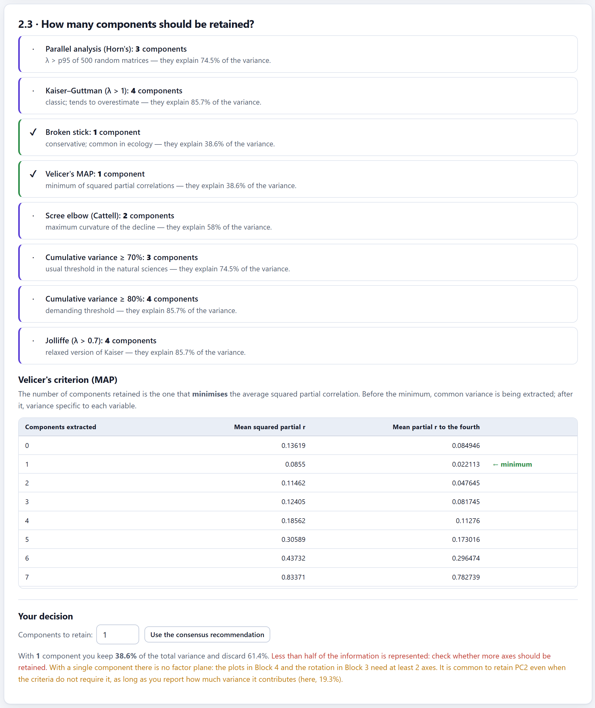
123456
Figure 4.2. The 2.3 · How many components should be retained? card with the seeds, right after extracting.
1Horn: 3 components, 74.5 % of the variance.
2✔ on the criteria that agree with the retained number.
3Elbow: 2 components.
4The minimum of the MAP, with one component.
5Your decision: the number and the consensus button.
6Warnings about the variance kept.
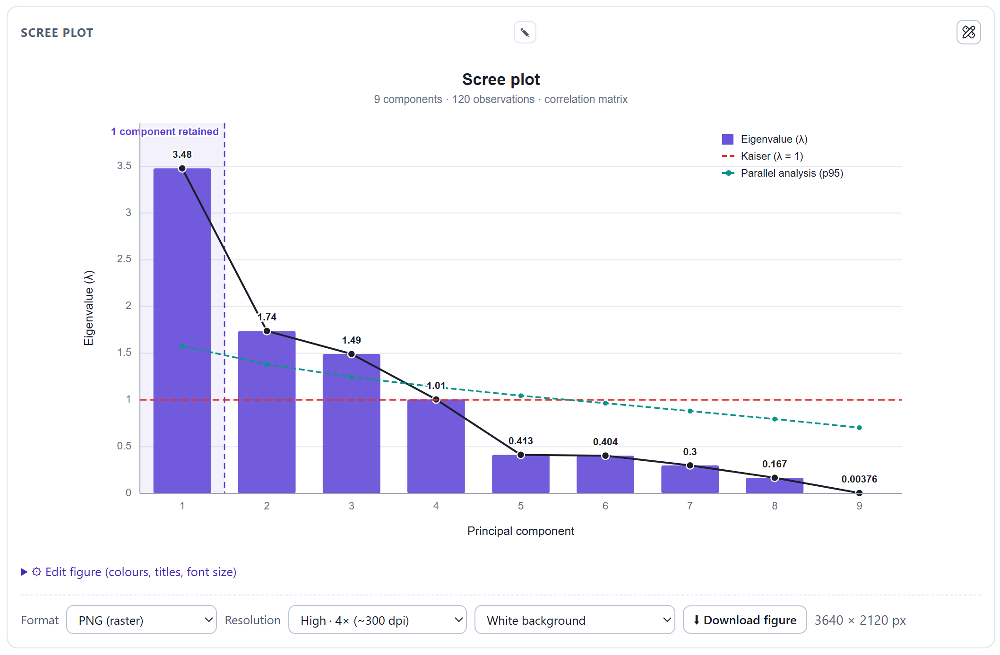
12345
Figure 4.3. The scree plot of the seeds. 1 The band of the retained components. 2 Kaiser's line at λ = 1. 3 The 95th percentile of the parallel analysis: PC3 falls above it and PC4 below. 4 The editing panel. 5 Format, resolution, background and download.
4.3The consensus and the decision
The recommendation is a weighted mode: each criterion votes for its number of components with the weight in table 4.4 —Horn 3; broken stick and MAP 2; the rest 1— and the number with the most votes wins. If there is a tie, the smaller one wins.
Table 4.5. The count of votes with the nine variables of the seeds.
A tie between 1 and 3 with 4 votes: the app recommends 1, the smaller one.
Your decision
The Components to retain: field accepts any number between 1 and p. Changing it updates the indicators, the table of loadings, the four figures and the text below; the Use the consensus recommendation button returns to the suggested number. Three warnings can appear in that text:
Table 4.6. Warnings about the decision.
Situation
Warning
The variance kept is below 50 %
In red: less than half the information is represented.
More than 95 % with more than two components
In amber: you are probably not reducing dimensions.
A single component
In amber: without a factor plane there is no rotation and there are no maps; it is usual to retain PC2 while stating how much it adds.
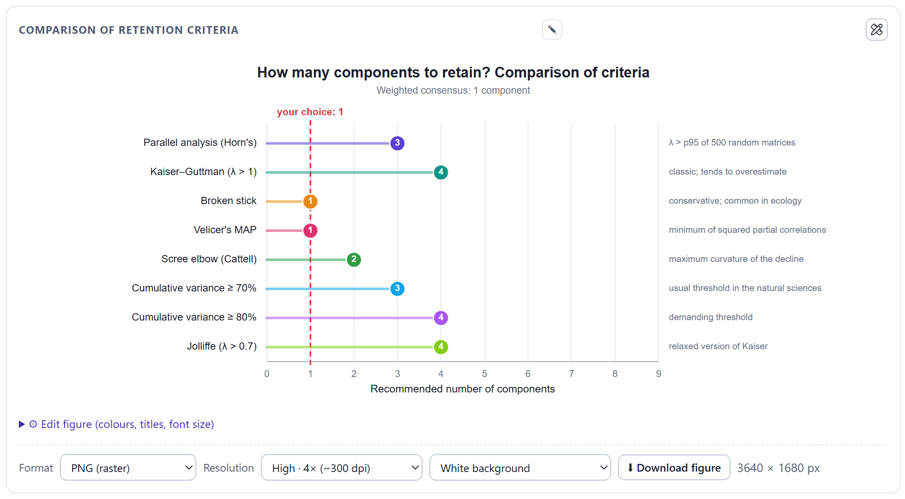
Figure 4.4. The Comparison of retention criteria figure sums table 4.4 up in a single image: one point per criterion at the number it proposes and the red line of “your choice”. It updates when you change the number of components, and it is the one worth including as supplementary material of a paper.
!Important · what changing the number erases
Changing the retained components erases the rotation and the maps computed afterwards: Blocks 3 and 4 have to be computed again with the new number. Pressing Extract components → again keeps the number you chose by hand; preparing the matrix again in Block 1 does not: the extraction starts from scratch with the recommendation.
iNote · the ✔ marks of the list
The list of criteria marks with ✔ those that agree with the number retained at the moment of extracting. If you later change the number by hand, the list is not redrawn: the marks stay on the criteria of the previous number. Figure 4.4 and the indicators do update.
▸How to report the decision
“Three components were retained, explaining 74.5 % of the variance, on the basis of Horn's parallel analysis (500 permutations, 95th percentile) and the interpretability of the solution; the broken stick and Velicer's MAP suggested one, and the Kaiser criterion, four.” Naming the criteria that disagree is more honest than citing only the one that suits you.
4.4Tables, figures and downloads
The 2.4 · Extraction figures card gathers four editable figures, and 2.5 · Component matrix (unrotated loadings) holds the table of loadings and the downloads of the block.
The table has one column per retained component. The loadings that exceed the threshold are highlighted in colour —violet if positive, red if negative— and the rest are dimmed. Dominant loading indicates the component with the largest absolute loading. The threshold only changes the highlighting, not the computations.
✓Decision rule · which loading threshold do I use?
If your sample has…
highlight from
n ≥ 300
0.30 to 0.40
100 ≤ n < 300
0.40 (the default value)
n < 100
0.55, as the size recommendation of Block 1 asks
You want only what is very clear, for a summary
0.70: the variable shares half its variance with the axis
A loading of 0.40 amounts to 16 % of variance shared with the component; one of 0.70, to 49 %.
Table 4.8. The downloads of Block 2, in CSV.
Button
Columns
⬇ Eigenvalues (CSV)
Component, eigenvalue, SE, % of variance, % cumulative, difference, random p95, broken stick and whether it was retained.
⬇ Loadings (CSV)
The loadings of every component, not only the retained ones, and the communality with the retained ones.
⬇ Individual scores (CSV)
The identifier, the qualitative variables and the scores on every component.
iNote · the scale of the scores
The downloaded scores are the projections of the prepared matrix onto the eigenvectors: their variance on each component is λk, not 1. If you are going to use them in another analysis that needs them in standard units, divide each column by its standard deviation.
The Go to rotation → button leads to Block 3, which was unlocked when you extracted.
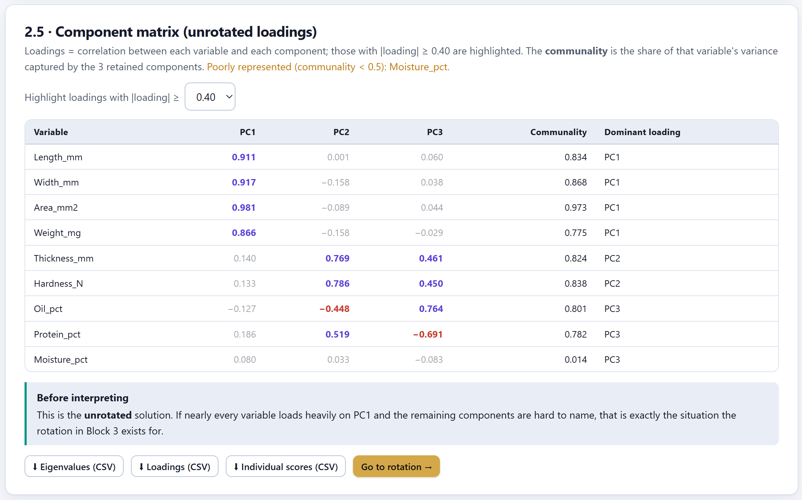
123456
Figure 4.5. Card 2.5 with the seeds and three components retained.
5Moisture_pct: 0.014, almost none of its variance.
6Downloads and the step to Block 3.
Table 4.7. The figures of Block 2.
Figure
What it shows
Options of its own
Scree plot
The λ as bars and a line, the band of the retained ones, Kaiser and Horn's 95th percentile.
Y axis in λ or in % of variance; show the broken stick; multicoloured bars.
Horn's parallel analysis
The observed λ against the random mean and 95th percentile.
Mean–p95 band and the line of the mean.
Cumulative variance
The cumulative curve with a threshold and your choice marked.
Threshold in % (80 by default), area under the curve.
Comparison of criteria
One point per criterion at the number it proposes (figure 4.4).
Notes, a single colour, a mark for your choice.
4.5Inertia and axes in CA, MCA, FAMD and MFA
If on card 1.9 you chose another method, card 2.1 does not change in appearance, but its button says Run MFA → (or whichever abbreviation applies) and the results are different. In these methods one does not speak of variance but of inertia: the spread of the cloud measured with the metric belonging to each method.
Table 4.9. What is decomposed and how much the total inertia is worth.
Method
What goes in
Total inertia
CA
The contingency table of the two chosen qualitative variables.
φ² = χ²/n: how far the table departs from independence.
MCA
The disjunctive table of the ticked qualitative variables.
J/Q − 1 (J categories, Q variables), an artificial value.
FAMD
Standardised quantitative variables and categories divided by √pk.
Quantitative + (categories − qualitative).
MFA
The groups of standardised quantitative variables, each divided by its first eigenvalue.
The sum of the weighted inertias; no group contributes more than 1 to the first axis.
!Important · FAMD and MFA ignore the scaling of Block 1
These two methods take the quantitative variables after the treatment of missing data but before the transformation and the scaling, and standardise them on their own, because their balance between types or groups requires it. Choosing Pareto or a logarithmic transformation on card 1.3 does not change their results. If you need a transformed variable, transform it in the sheet before loading it.
What the block shows
Table 4.10. The cards of Block 2 with a method other than PCA.
Card
Contents
2.2 · Inertia and axes
Individuals or rows, columns, possible axes, total inertia, retained axes; in CA, the χ² of independence as well. A table of λ with % of inertia and cumulative, and a note on how to read the inertia of that method.
The card belonging to the method
CA: the twelve cells that contribute most to the χ², with observed, expected and residual. MCA: Cramér's V between each pair of variables. FAMD: r² of each quantitative variable and η² of each qualitative one with each axis. MFA: the inertia of each group on each axis and the RV coefficient between groups.
2.3 · How many axes to retain?
Four criteria (table 4.11), the consensus and the number of axes.
2.4 · Extraction figures
The scree plot.
2.5 · Coordinates
Coordinates of the columns, categories or variables on the first four axes, their cos² on the 1–2 plane and their contribution to axis 1.
Table 4.11. Retention criteria outside PCA. Horn and the MAP do not apply: they are designed for correlations.
Criterion
Rule
Weight
Axes above the mean inertia (CA, FAMD, MFA)
λ greater than the total inertia divided by the number of axes.
2
Axes above 1/Q (Benzécri) (MCA)
λ > 1/Q: only those axes have content.
3
Cumulative inertia ≥ 70 % and ≥ 80 %
In MCA, with Greenacre's adjusted inertia.
1 and 1
Scree elbow
As in PCA; only with three axes or more.
1
Table 4.12. What to watch out for in each method, with examples from the app.
Method
What to watch out for
Example
CA
The χ² of independence before the percentages: with an independent table the first axis can take up almost the whole of a minute inertia.
Treatment × Block of the integrated project: χ² = 0.78, df 6, p = 0.99, total inertia 0.0054, and even so Dim1 = 93.4 %. There is no map to read: it is a balanced design.
MCA
The raw percentages underestimate; read the % adjusted (Greenacre) column, which only exists for the axes with λ > 1/Q.
The same two variables: Dim1 = 21.4 % raw and 93.45 % adjusted, the same as CA. Cramér's V of 0.052 warns that there is no association.
FAMD
That the total inertia matches quantitative + (categories − qualitative); r² and η² are compared on the same scale.
Iris with Species active: inertia 6 (4 + 3 − 1); Species has η² = 0.964 on axis 1 and 0.746 on axis 2. Two axes, 86.9 %, and the four criteria agree.
MFA
The RV between groups and that each group has at least two variables.
Figure 4.6.
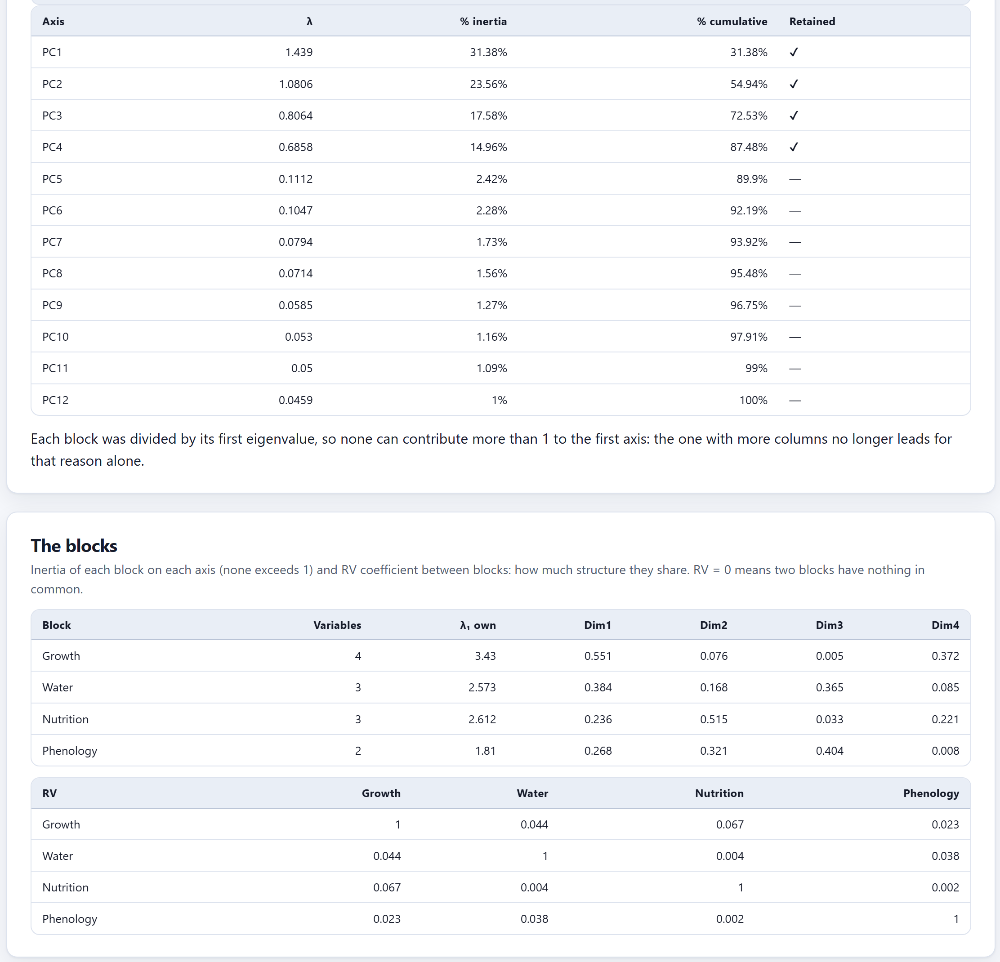
1234
Figure 4.6. An MFA with integrated_project_agronomy.csv: 144 complete plots and four groups declared by hand —growth (4 variables), water (3), nutrition (3) and phenology (2)—, with yield as supplementary. 1 The note on the weighting. 2 The first eigenvalue of each group analysed on its own. 3 The inertia of growth on axis 1: 0.551, never more than 1. 4 The RV between groups: all below 0.07.
The reading of figure 4.6 is instructive: the RV close to 0 say that the four groups share almost no structure, and that is why no axis dominates —the first takes up only 31.4 % of the inertia— and four axes are needed to reach 87.5 %. The criteria disagree (mean 4, cumulative 70 % 3, cumulative 80 % 4, elbow 5) and the consensus settles on four.
iNote · interface details in these methods
With a method other than PCA, Block 2 offers no downloads, and the Go to rotation → button does not appear: you move to Block 4 with the 4 button of the step bar, which is unlocked when the method is run (number 3 goes dark, because rotation belongs to PCA). Three details of version 1.1: the indicators of card 2.2 stack in a column instead of forming a row; card 2.4 shows only the scree plot, which does not move the band of retained axes if you change their number; and the table of λ calls the axes PC1, PC2… in FAMD and MFA, while the table of coordinates calls them Dim1, Dim2…
4.6Step by step: iris and seeds
Two complete analyses of Block 2. In the first the criteria almost agree and the decision is about the plane; in the second they spread out and the decision has to be made with the interpretation. The figures are the ones from the app; Horn's percentiles vary slightly from run to run.
Case 1 · Iris: a strong axis and a useful plane
▸iris.csv · 150 flowers, four measurements, z standardisation
Load the iris example, prepare the matrix in Block 1 and open Block 2. Leave permutation and 500 repetitions and press Extract components →.
The eigenvalues are 2.9185, 0.9140, 0.1468 and 0.0207. PC1 takes up 72.96 %; PC1 + PC2, 95.81 %.
Horn, Kaiser, broken stick, MAP and variance ≥ 70 % propose 1; elbow, variance ≥ 80 % and Jolliffe propose 2. The count is 9 votes to 3: the recommendation is 1 component.
With one component, the table of loadings warns that Sepal.Width is poorly represented: loading −0.460 and communality 0.212. The decision text recalls that without PC2 there will be no maps.
Write 2 in Components to retain:. The communality of Sepal.Width rises to 0.991: PC2 is, almost exclusively, sepal width (loading 0.883).
Reading. Iris has one dominant dimension —the size of the flower, with loadings from 0.89 to 0.99 on three measurements— and a second that is a single variable. Retaining two is the usual practice: one states that PC2 adds 22.85 % and that it is defined by Sepal.Width. PC3 and PC4 together do not reach 4.2 %.
Case 2 · Seeds: criteria spread out
▸practice2_seeds.csv · 120 seeds, nine variables, z standardisation
Load the file, leave the nine variables active, prepare and extract. PC1 takes up 38.65 % and the 1–2 plane, 57.96 %.
The criteria run from 1 to 4 (figure 4.2): broken stick and MAP, 1; elbow, 2; Horn and variance ≥ 70 %, 3; Kaiser, variance ≥ 80 % and Jolliffe, 4. The consensus ties 1 and 3 and recommends 1 (table 4.5).
With one component the warning is red: 38.6 % is kept and five variables are left poorly represented.
Retain 3, which is what Horn asks for. 74.5 % is kept, and the table of loadings (figure 4.5) falls into three themes: PC1, size (length, width, area and weight, from 0.87 to 0.98); PC2, firmness (thickness 0.769 and hardness 0.786); PC3, composition (oil 0.764 against protein −0.691).
Moisture_pct is left with a communality of 0.014: it belongs to none of the three themes, just as its MSA of 0.388 said in Block 1.
Review the table of eigenvalues: λ₂ − λ₃ = 0.2456 barely exceeds the SE of λ₂ (0.2253). PC2 and PC3 share loading on thickness, hardness, oil and protein; the rotation of Block 3 will separate them better.
Reading. Here the consensus does not help: it ties and resolves towards the smaller number, which leaves out two thirds of the information. The decision is taken by Horn —the most reliable criterion— and by the interpretation: three components with a clear name. Kaiser asked for a fourth axis with λ = 1.0052, which does not exceed the 95th percentile (1.14) and cannot be named. Compare with chapter 3: removing variables by MSA led to another solution, of a single size component, with six or four variables. Both are valid, but they answer different questions.
3 of 8
A majority that does not exist
With the seeds no number gathers more than three criteria. When that happens, the recommendation is a tie-break and not an agreement: card 2.3 is read in full before accepting the number on the indicator.
With the number of components decided, the next chapter enters Block 3: rotating the solution so that each axis is easier to name.
5
Chapter five · Block 3
Rotation
How to turn the retained components so that each one is defined by its own group of variables, which rotation to choose, how to read the pattern, structure and Φ matrices, and how to tell whether the rotation improved the solution. It applies to PCA only.
5.1Why rotate and when not to
5.2Orthogonal and oblique rotations
5.3Quality of the simple structure
5.4The loading threshold
5.5Step by step: leaf morphometry
5.1Why rotate and when not to
The components of Block 2 maximise variance, not clarity. What usually happens is that almost every variable loads strongly on PC1 and that the following axes are contrasts that are hard to name. Rotating looks for another orientation of those same axes in which each one has its own group of variables.
θWhat is kept and what changes
The k retained components define a subspace, and that subspace holds the same information whatever the orientation of the axes inside it. That is why rotating keeps the total variance of the k components and the communality of each variable, and changes how the variance is shared between axes, the individual loadings and the order: the rotated axes no longer run from largest to smallest λ and the app calls them RPC1, RPC2…
✓Decision rule · do I rotate or not?
If your aim is to…
then
Interpret and name the dimensions
Rotate. That is what rotation exists for.
Use the scores in another analysis (regression, clustering)
Probably not: the unrotated components are orthogonal and ordered, exactly what that analysis needs.
You have a single component retained
It cannot be done: the app asks for at least two and says so.
The unrotated solution is already simple
Rotate anyway to check; if it does not improve, report it unrotated (section 5.3).
Rotating principal components is accepted practice —SPSS, SAS and psych::principal offer it— as long as it is stated. The theory card of the block includes the usual wording for the methods section.
Block 3 opens with the theory card, of six topics, and the 3.1 · Choose the rotation card. Pressing Apply rotation → shows the results and unlocks Block 4. With CA, MCA, FAMD and MFA the block stays dark: rotation belongs to PCA.
Table 5.1. The options of card 3.1.
Option
Values
Note
Method
Varimax (recommended), quartimax, equamax, parsimax, promax, direct oblimin, quartimin and Unrotated (for comparison).
When you change method a short description appears below.
Interpretable loading threshold
0.30, 0.40 (usual), 0.50, 0.55 and 0.70.
Changing it recomputes the rotation at once (section 5.4).
δ (oblimin)
From −5 to 0.8; 0 by default. Only with direct oblimin.
Negative, more orthogonal axes; positive, more oblique.
κ (promax)
From 2 to 10; 4 by default. Only with promax.
Higher, more oblique.
Kaiser normalisation
A checkbox, ticked. It is hidden with Unrotated.
The same as SPSS and R's stats::varimax.
The Unrotated (for comparison) option turns nothing: it shows the solution of Block 2 with the same indicators, for comparison, and it also unlocks Block 4. On the maps of Block 4 you decide afterwards which solution to draw; by default it is the unrotated one.
123456789
Figure 5.1. Cards 3.1 and 3.2 with the simulated leaf-morphometry example, two components and varimax rotation.
1The rotation method.
2The interpretable loading threshold.
3Kaiser normalisation, on by default.
4Applies the rotation.
5Variables that load on a single component.
6Mean Hofmann complexity.
7Variables with no loading above the threshold.
8The comparison with the unrotated solution.
9How the variance is shared after rotating.
5.2Orthogonal and oblique rotations
The orthogonal ones keep the axes perpendicular: the components remain uncorrelated. The oblique ones allow them to correlate, which is usually more realistic in biology, where the dimensions —size, shape, physiology— are rarely independent.
Orthomax family: Q(γ) = Σ a⁴ij − (γ/p) · Σj (Σi a²ij)² Hofmann complexity of a variable: c = (Σ a²)² / Σ a⁴
Table 5.2. The seven rotations of the app.
Rotation
Type
Parameter
What it does and when to use it
Varimax
orthogonal
γ = 1
It simplifies columns: it pushes each loading towards 0 or ±1 within each component. The default option and the most widely reported.
Quartimax
orthogonal
γ = 0
It simplifies rows: each variable on the fewest axes. It tends to leave a first general factor.
Equamax
orthogonal
γ = k/2
A compromise between the two above; unstable with few variables.
Parsimax
orthogonal
γ = p(k−1)/(p+k−2)
It seeks maximum overall parsimony; rarely used.
Promax
oblique
κ = 4
It starts from varimax and raises the loadings to the power κ to exaggerate the contrast. Fast; the preferred one with large samples.
Direct oblimin
oblique
δ = 0
A general family; δ controls how much correlation is allowed.
Quartimin
oblique
δ = 0 fixed
The simplest oblique one: oblimin with δ = 0.
Table 5.3. Details of the computation worth knowing.
Aspect
What the app does
Algorithm
Jennrich's gradient projection (2001, 2002), the one in R's GPArotation, with up to 1500 iterations. If it does not converge, an amber warning suggests another rotation or reviewing nearly redundant variables.
Kaiser normalisation
It divides each row of loadings by the square root of its communality before rotating and restores it afterwards, so that poorly represented variables do not weigh less.
Sign
Each rotated component is oriented so that positive loadings predominate. The sign is arbitrary: an RPC may come out inverted with respect to the unrotated PC.
Order
The rotated components are ordered by their sum of squared loadings, from largest to smallest.
The three matrices of an oblique rotation
With an oblique rotation an extra box appears on the 3.3 · Rotated loading matrix card, with the structure matrix and the correlation between components.
Table 5.4. Pattern, structure and Φ.
Matrix
What it is
Use
Pattern
The unique coefficient of each variable on each component, controlling for the others. They are regression weights: they can exceed |1|.
The one that is interpreted and reported. It is the main table of card 3.3.
Structure
The simple variable–component correlation: pattern × Φ. It includes the effect of the other components.
Higher and less clean values; useful as a complement.
Φ
The correlation between the rotated components.
It says whether the obliquity was needed.
1234567
Figure 5.2. Card 3.3 with promax rotation and three components. 1 Pattern coefficients greater than 1: that is not an error. 2 RPC2 came out with Stomatal_density positive; in varimax it came out negative. 3 The structure matrix. 4 Blade_thickness_um: 0.098 in the pattern of RPC1, but 0.396 in the structure, because of its relation with RPC2. 5 The Φ matrix. 6 The largest correlation, −0.309. 7 The automatic reading of Φ.
✓Decision rule · orthogonal or oblique?
Apply an oblique rotation first (promax) and look at the largest |Φ| off the diagonal. If it is…
then
below 0.15
The axes came out almost orthogonal on their own: go back to varimax, which is more parsimonious.
between 0.15 and 0.32
The oblique one is justified, but the orthogonal one will give almost the same: compare and choose the clearer.
0.32 or more
The components share more than 10 % of variance: use the oblique one and interpret the pattern.
These are the same cut-offs used by the automatic note under the Φ table. With the leaf morphometry the largest |Φ| is 0.244 with two components and 0.309 with three: the two rotations tell the same story.
!Important · with oblique rotations, the percentages do not add up
In an oblique rotation the sums of squares of each component overlap, so they do not share out the variance. The Rotated components · they explain … together indicator and the last column of the Variance per component table add up those squares, and with oblique rotations that is not the joint variance: with promax and three components they show 98.5 %, more than the real 98.2 %, and with oblimin δ = 0.5 they reach an impossible 162.5 %. The joint variance of the components is always that of Block 2, because rotating does not change it. Report that one, and for each oblique component report its loadings, not a percentage.
iNote · positive values of δ
The δ field accepts up to 0.8, but positive values force heavily correlated components. With the leaf morphometry, δ = 0.5 raised the largest |Φ| from 0.18 (with δ = −1) to 0.67 and a cross-loading appeared. Leave δ = 0 unless you have a theoretical reason to change it.
5.3Quality of the simple structure
The aim of rotating is Thurstone's simple structure: that each variable loads strongly on one component and hardly at all on the others, and that each component has its own group of variables. The 3.2 · Quality of the simple structure card measures how close you are.
Table 5.5. The indicators of card 3.2.
Indicator
What it counts
Colour
Rotation
The method and whether it is orthogonal or oblique.
—
Rotated components
How many were rotated and the sum of their squared loadings (see the warning in section 5.2).
—
Clean variables
They exceed the threshold on a single component.
green ≥ 75 % · amber ≥ 50 % · red
Cross-loadings
They exceed the threshold on two or more components.
green 0 · amber 1 or 2 · red
Mean complexity
The mean of the Hofmann complexity: 1 if each variable loads on a single axis, up to k if it is shared out equally.
green < 1.3 · amber < 1.8 · red
Not represented
No loading reaches the threshold.
green 0 · amber
Below, the Did the simple structure improve? box compares the clean variables, the cross-loadings and the mean complexity before and after rotating, with the same threshold. It passes the rotation, in green, if the clean variables increase or the mean complexity falls; if not, in amber, it suggests another method or reporting the unrotated solution.
86.2 %
What rotation does not touch
Unrotated, PC1 and PC2 add up to 67.09 % + 19.13 %; with varimax, RPC1 and RPC2 add up to 64.03 % + 22.19 %. The total is the same, and so is the communality of each variable.
Table 5.6. Columns of the rotated loading matrix.
Column
Contents
RPC1, RPC2…
Rotated loadings (pattern, if the rotation is oblique); highlighted if they exceed the threshold.
Communality
The same as before rotating. With oblique rotations it is computed with Φ.
Complexity
Hofmann complexity of the variable.
Structure
clean · RPCj, cross-loading or no loading.
The reading of each component
Card 3.4 writes out, for each rotated component, its percentage and the variables that exceed the threshold, separated into positive and negative. It adds two remarks: if there are loadings of both signs, it calls it a contrast axis; if only one variable exceeds the threshold, it marks it in amber as fragile, because a component usually needs at least three marker variables. The name of the axis is for you to give.
123456
Figure 5.3. Cards 3.3 · Rotated loading matrix and 3.4 · Reading each component with varimax and two components.
1It orders the variables by the component they load on.
2Hofmann complexity of each variable.
3Dry_weight_g: 0.352 on RPC2, below the threshold.
4A negative loading highlighted in red.
5Chlorophyll_SPAD, with no loading on any axis.
6The automatic reading of RPC2: a contrast axis.
Table 5.7. The figures of card 3.5.
Figure
What it shows
Options of its own
Heat map of the loading matrix
Variables × components on a colour scale, with the values.
Continuous palette, group by component, hide below the threshold.
Loading plane
The variables as vectors on two rotated components, with their unrotated position in dashed grey.
Axes, colour by variable or by cos², inner circle, join with a line.
Loadings per component
Bars per component with the threshold line.
Columns, sort by magnitude, positive and negative colours.
Variance before and after rotating
The sum of squared loadings of each component, unrotated and rotated.
Colours, values, outline.
123456
Figure 5.4. The loading plane with varimax. 1 The legend of the unrotated position. 2 Blade_thickness_um rotated, almost on RPC2. 3 Its unrotated position: it appears on the opposite side because the app inverted the sign of RPC2 (table 5.3), not because the rotation turned 180°. 4 Chlorophyll_SPAD, a short vector: it is poorly represented on this plane. 5 The unit circle, which is drawn only with a correlation matrix. 6 Each axis with its rotated percentage.
Table 5.8. The downloads of Block 3, in CSV.
Button
Contents
⬇ Rotated loadings (CSV)
Loadings (or pattern), communality, complexity and type of structure of each variable.
⬇ Structure matrix (CSV)
Variable–component correlations; equal to the loadings if the rotation is orthogonal.
⬇ Correlation between components (CSV)
The Φ matrix; the identity if the rotation is orthogonal.
⬇ Rotated scores (CSV)
Scores of each individual on the rotated components, by Thurstone's regression method on the standardised variables, together with the qualitative variables.
The Go to the factor maps → button leads to Block 4.
5.4The loading threshold
A loading is only interpreted if it exceeds the threshold. The threshold does not change the rotation —the loadings are the same—, but it decides which variables count as clean, cross-loading or without loading, what is highlighted in the tables and figures and what the automatic reading writes.
Table 5.9. The thresholds of the app.
Threshold
Label in the app
Shared variance
When
0.30
minimum
9 %
Large samples (n ≥ 300) or exploratory analysis.
0.40
usual
16 %
The default value; samples of 100 to 300.
0.50
practically significant
25 %
When you want only substantive relationships.
0.55
small samples
30 %
n < 100, as the size recommendation of Block 1 asks.
0.70
very demanding
49 %
Very clean summaries; it can leave components with no markers.
Changing the threshold on card 3.1 recomputes at once, and it also changes the “before” column of the comparison with the unrotated solution, which is evaluated with the same threshold. Table 5.10 shows this with the leaf morphometry, three components and varimax.
Table 5.10. The same varimax with three thresholds.
Threshold
Clean unrotated → rotated
Cross-loading unrotated → rotated
What happens
0.30
7 → 8
2 → 1
Dry_weight_g is left cross-loading: 0.922 on RPC1 and 0.369 on RPC2.
0.40
8 → 9
1 → 0
All clean after rotating.
0.55
9 → 9
0 → 0
The comparison no longer tells them apart; only the complexity falls (1.21 → 1.10).
!Important · set the threshold before looking
The threshold is decided by the sample size and stated in the methods. Raising or lowering it until the table “looks right” is a form of overfitting: with the data of table 5.10, going from 0.30 to 0.40 makes a real cross-loading of 0.369 disappear. If a variable ends up close to the threshold, report it with its value.
5.5Step by step: leaf morphometry
The simulated example of the app —Simulated example: leaf morphometry (120 × 9) on card 1.1— has nine leaf and plant measurements and one qualitative variable, the site. It is a typical case for rotating: one enormous size axis and other, finer ones. The figures are the ones from the app.
▸Leaf morphometry · 117 observations, nine variables, z scaling
Load the simulated example, prepare the matrix and extract in Block 2. KMO = 0.821. PC1 takes up 67.09 % and PC2 19.13 %. The consensus recommends 2 components (86.2 %); Kaiser, MAP and Jolliffe proposed 3.
Unrotated, PC1 mixes six size measurements with Blade_thickness_um (0.511), which also loads −0.846 on PC2: a cross-loading. Chlorophyll_SPAD has a communality of 0.088.
Open Block 3, leave Varimax (orthogonal) — recommended, threshold 0.40 and normalisation, and press Apply rotation →.
Card 3.2 (figure 5.1) shows 8 of 9 variables clean, none cross-loading and a complexity of 1.06; the comparison says 7 → 8 clean and 1.15 → 1.06: the rotation improved things.
The matrix (figure 5.3) falls into two groups. RPC1, size (64.03 %): length, petiole, area, width, height and dry weight, from 0.93 to 0.99. RPC2, blade structure (22.19 %): thickness 0.947 against stomatal density −0.921, a contrast between thick leaves with few stomata and thin leaves with many.
Chlorophyll_SPAD is still left without loading: with two components it belongs to neither.
To check the obliquity, choose Promax (oblique). The largest |Φ| is 0.244: the note says that the oblique rotation is justified but the orthogonal one gives similar results. The groups do not change.
Out of curiosity, go back to Block 2 and retain 3. After varimax, RPC3 is only Chlorophyll_SPAD (0.996), and the automatic reading marks it as fragile: a single marker variable.
Reading. The two-component solution with varimax is the one to report: two axes with a name and no cross-loadings. The third component that Kaiser and the MAP asked for is not a dimension but the variance of the chlorophyll itself, which is unrelated to the shape of the leaf; it is declared as a variable with no common structure. The rotation did not create the groups: it made them visible. The unrotated PC2 already held the thickness–stomata contrast, but mixed with size.
▸How to report it
“A PCA was carried out on the correlation matrix of nine variables (n = 117). Two components were retained, explaining 86.2 % of the variance, on the basis of the parallel analysis and the scree plot. A varimax rotation with Kaiser normalisation was applied and the loadings were interpreted at |a| ≥ 0.40. The first rotated component (64.0 %) gathered the size measurements and the second (22.2 %) contrasted blade thickness with stomatal density. Chlorophyll content loaded on neither (communality 0.09). A promax rotation gave the same structure, with a correlation between components of 0.24.”
With the rotated solution in hand, the next chapter enters Block 4: the factor maps of variables and individuals.
6
Chapter six · Block 4
Factor maps
How to build and read the maps: the correlation circle, the map of individuals and the biplot, with the two measures that keep you from misreading them —cos² and contributions—, the group ellipses and the supplementary elements. It includes the maps belonging to CA, MCA, FAMD and MFA, and the editor that every figure of the app shares.
6.1The two clouds: individuals and variables
6.2cos² and contributions
6.3Circle, map of individuals and biplot
6.4Ellipses and supplementary elements
6.5The maps of CA, MCA, FAMD and MFA
6.6The figure editor
6.7Step by step
6.1The two clouds: individuals and variables
A PCA produces two representations of the same analysis, and each one is read with different rules. Confusing them —reading distances between arrows or angles between points— is the most common mistake when interpreting a factor map.
Table 6.1. The two clouds.
Cloud of individuals
Cloud of variables
What is drawn
One point per observation.
One vector per variable.
Coordinate
The score on the axis.
The loading: the correlation with the axis.
What is read
Distances: two nearby individuals have similar profiles.
Angles from the origin, and the length of the vector.
Scale
That of the scores; it changes from one axis to another.
Always between −1 and 1 with a correlation matrix.
Figure in the app
Map of individuals.
Correlation circle.
Block 4 is unlocked on the step bar when a rotation is applied in Block 3 —Unrotated (for comparison) counts too— and it needs at least two retained components. It has a theory card with six topics and the 4.1 · Build the maps card, with two options. Pressing Build factor maps → brings up seven result cards and unlocks Block 5 and the clustering (5b).
Table 6.2. The options of card 4.1.
Option
Values
Note
Solution to display
Unrotated (original components), by default, or Rotated (the one from Block 3).
If there is no rotation, or it was “Unrotated”, the original one is used. Changing it requires building the maps again.
Grouping variable
No grouping or any qualitative column from Block 1, with its number of levels.
It colours individuals and draws ellipses. Changing it redraws the figures at once.
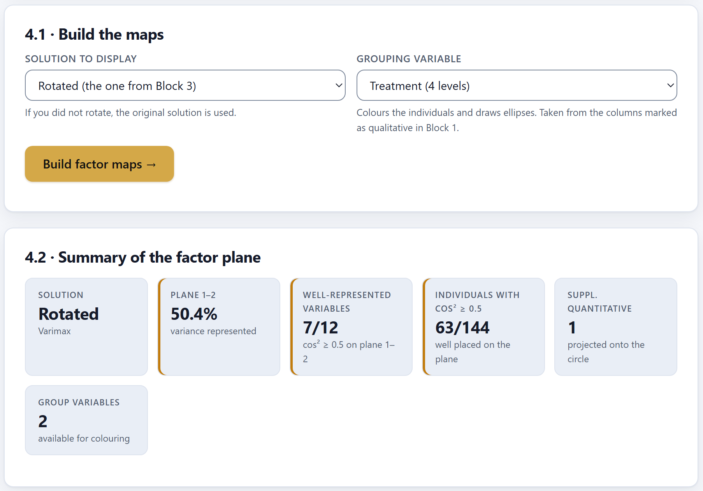
1234567
Figure 6.1. Cards 4.1 and 4.2 · Summary of the factor plane with integrated_project_agronomy.csv, varimax rotation and grouping by treatment.
1The solution: unrotated or rotated.
2The qualitative variable that colours the maps.
3Builds the maps.
4Variance of the 1–2 plane, in amber.
5Variables with cos² ≥ 0.5 on the plane.
6Individuals well placed on the plane.
7Supplementary variables projected.
Table 6.3. The indicators of card 4.2.
Indicator
What it counts
Colour
Solution
Unrotated or rotated, with the method.
—
Plane 1–2
Variance of the first two axes of the chosen solution.
green ≥ 60 % · amber ≥ 45 % · red
Well-represented variables
Active variables with cos² ≥ 0.5 on the 1–2 plane.
green ≥ 70 % · amber
Individuals with cos² ≥ 0.5
Individuals well placed on the 1–2 plane.
green ≥ 60 % · amber
Supp. quantitative
How many are projected onto the circle.
—
Group variables
Qualitative variables available for colouring.
—
6.2cos² and contributions
A flat map shows what fits on two axes and hides the rest. Two measures say what can be read on it: the cos², how well an element is represented, and the contribution, how much it weighed in building the axis.
The squared coordinate. With correlations, cos² = loading²; its sum over all the axes is 1.
cos² divided by the variance of the axis, in %. It adds up to 100 per axis.
100/p
Individuals
Squared coordinate divided by the squared distance to the centre in the full space, with all the components, not only the retained ones.
Squared coordinate divided by the sum of squared coordinates of the axis, in %.
100/n
✓Decision rule · can I read this element on the plane?
cos² on the 1–2 plane
Label in the app
Reading
≥ 0.70
very good
Its position is reliable.
0.50 to 0.70
acceptable
Read it, with care over the details.
0.30 to 0.50
poor
Only the general direction.
< 0.30
not interpretable
It is badly projected: its information is on other axes. Look for another plane.
A short vector is not an unimportant variable: it is a variable this plane does not show. An individual with a high contribution and a low cos² is suspicious: it is usually an outlier dragging the axis.
Where they appear
Table 6.5. cos² and contributions in Block 4.
Place
Contents
Table under the circle (4.3)
Coordinates of each variable on every retained axis, cos² of the 1–2 plane, contribution to the plane and the quality label, ordered by cos².
Most influential individuals (4.4)
The 12 individuals that contribute most to the 1–2 plane, with coordinates, cos² and contribution. The note gives the expected value, 200/n %.
Contributions figure (4.6)
Bars of variables or individuals, per axis or per plane, with the red line of the expected value.
Quality of representation (cos²) figure (4.6)
Heat map of variables × axes.
Colour of the vectors and points
The circle colours by cos² by default; the map of individuals can do so from the editor.
iNote · two ways of adding up the plane
In the tables, Plane contrib. (%) is the sum of the contributions to the two axes, so the column adds up to 200 and its reference is 200/p or 200/n. In the contributions figure, the Plane 1–2 option weights each axis by its variance, adds up to 100 and its reference is 100/p. With iris, Sepal.Width shows 92.5 in the table (7.3 on PC1 + 85.3 on PC2). The two order things the same way when the axes weigh alike; if they do not, compare only within each one.
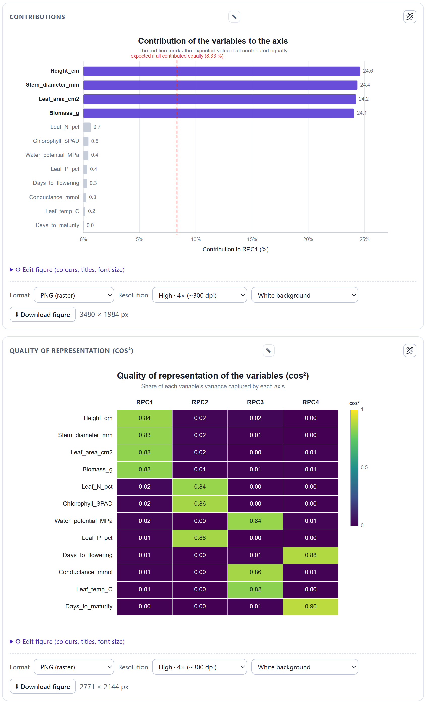
12345
Figure 6.2. The 4.6 · Contributions and quality card with the integrated project and varimax. 1 The line of the expected value, 100/12 = 8.33 %. 2 The four growth variables define RPC1, with 24 % each. 3 The rest, in grey, hardly contribute. 4 On the cos² map, each variable shines on a single axis: the signature of a clean rotation. 5 The colour scale runs from 0 to 1.
6.3Circle, map of individuals and biplot
The correlation circle
θHow it is read
Vectors in the same direction: positively correlated variables.
Opposite vectors: negative correlation.
Perpendicular vectors: no correlation on this plane.
Long vectors, close to the unit circle: well represented. The inner dotted circle marks 0.71, that is, cos² = 0.5.
The rules only hold for long vectors. The angle between two short vectors says nothing.
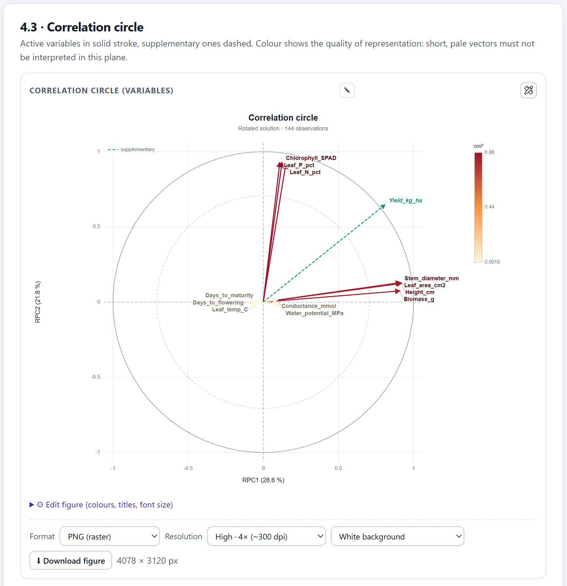
123456
Figure 6.3. The 4.3 · Correlation circle card with the integrated project and varimax.
1Legend: the supplementary variables are drawn with a dashed line.
2Yield_kg_ha, supplementary.
3cos² scale: pale vectors are not to be read.
4Growth: four vectors together on RPC1.
5Water and phenology, almost at the origin.
6The inner circle, cos² = 0.5.
The map of individuals
The 4.4 · Map of individuals card draws one point per observation. With no grouping variable the points go in one colour; with one, each group has its colour, its ellipse and its centroid, a diamond with the name of the group. The axes do not have the same scale by default: the axis with less variance is stretched. To read distances rigorously, tick Same scale on both axes in the editor.
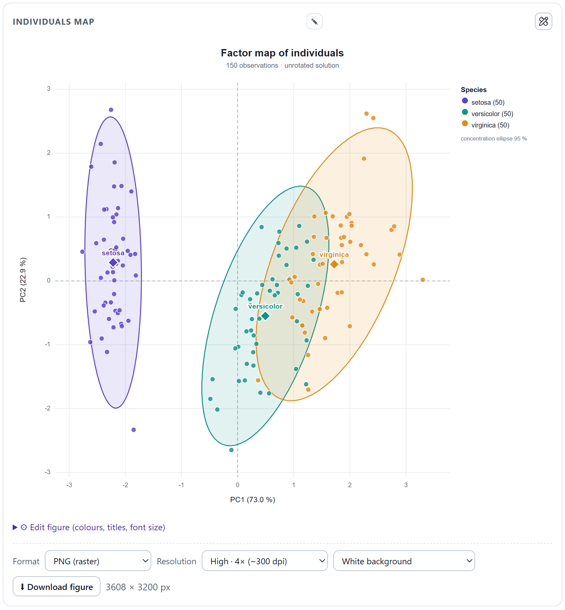
123456
Figure 6.4. The map of individuals of iris, unrotated and grouped by species. 1 Setosa, separated from the other two along PC1. 2 The centroid of virginica. 3 The type and level of the ellipse appear under the legend. 4 Versicolor and virginica overlap. 5 One individual outside the 95 % ellipse. 6 Each axis with its percentage.
The biplot
The 4.5 · Biplot card superimposes individuals and variables. Individuals and variables live on different scales, so the arrows are multiplied by a factor set in Arrow scale (0.2 to 1.6; 0.8 by default). That factor has no statistical meaning.
✓Decision rule · what is read on a biplot?
Yes
No
The projection of an individual onto the direction of an arrow: far along its direction, high values on that variable.
The absolute length of an arrow compared with the distance between points.
Groups of individuals in the direction of a group of variables: they are characterised by them.
The distance between a point and the tip of an arrow.
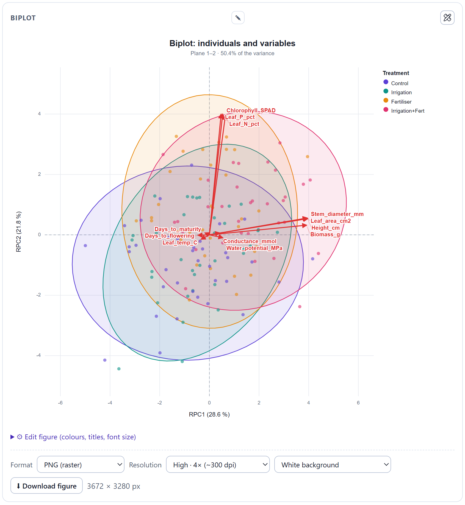
12345
Figure 6.5. The biplot of the integrated project with varimax, grouped by treatment. 1 The nutrition arrows. 2 The ellipse of irrigation + fertilisation, shifted towards high growth and nutrition. 3 That of the control, towards low values of both. 4 The short arrows of water and phenology: they are not to be read on this plane. 5 The group legend.
Table 6.6. Options belonging to each figure of Block 4, besides the shared ones (section 6.6).
Figure
Options
Circle
Colour by cos², contribution or variable; hide cos² below a value; only the best N; show supplementary variables and their colour; unit circle and 0.71 circle.
Individuals
Colour by group, cos² or contribution; hull by group and level; fill and border of the ellipse; centroids and their label; size according to cos²; labels: none, all that fit or the N that contribute most; same scale on both axes.
Biplot
Scale, colour and thickness of the arrows; variable names; hull by group.
Contributions
Variables or individuals; axis or 1–2 plane; only the largest N; reference line; colours above and below the threshold.
cos²
Continuous palette; sort by the first N axes; scale from 0 to 1 or fitted to the maximum.
Every map lets you choose the Horizontal axis and the Vertical axis among the retained components. The 1–2 plane is not compulsory: if a variable comes out short on it, the 1–3 or the 3–4 plane may show it.
6.4Ellipses and supplementary elements
The group hulls are chosen in the editor of the map of individuals and of the biplot. They answer different questions.
Table 6.7. The three hulls.
Hull
What it encloses and how it is computed
Use it to
Concentration ellipse (default)
Roughly 90, 95 or 99 % of the individuals of the group: the covariance of the group on the plane with the radius of χ² with 2 df. Its size does not depend on n.
Describe the spread and the real overlap.
Confidence ellipse of the mean
The region where the centroid lies: the same ellipse with the radius divided by √n.
Suggest that the centroids differ. With a large n it becomes tiny.
Convex hull
The smallest polygon that contains every point. It assumes no distribution.
Non-elliptical groups or groups with few individuals.
A group needs at least three individuals for its ellipse. The level (90, 95 or 99 %) applies to both ellipses and is written under the legend.
!Important · an ellipse is not a test
Two mean ellipses that do not touch suggest that the centroids differ, but that is not a statistical test: for that you need a MANOVA, a PERMANOVA or a discriminant analysis. And PCA does not try to separate groups, because it ignores the grouping variable; if your aim is to discriminate, the tool is another one. State in the figure caption the type of ellipse and its level.
Supplementary elements
The columns you marked in Block 1 as supplementary quantitative or qualitative took no part in the axes, but they are projected onto them. They appear on the 4.7 · Supplementary elements card, which is only shown if there is any.
Table 6.8. How they are projected.
Type
Coordinate
Where they are seen
Quantitative
Its Pearson correlation with the coordinates of the individuals on each axis, using the non-empty values (at least 3). The table gives the valid n and the cos² of the plane.
A dashed vector on the circle (its own colour, editable).
Category
The centroid: the mean of the coordinates of the individuals in that category.
Diamonds on the map of individuals, when grouping by that variable.
!Important · supplementary elements with the rotated solution
With the rotated solution, the app turns the scores of the individuals with the same matrix as the loadings. Since the original components have different variances, the rotated scores can end up correlated even though the rotation is orthogonal: in the integrated project, RPC1 and RPC2 correlate 0.258. That is why, in that solution, the plane cos² of a supplementary variable can exceed 1 —yield shows 1.073— and its vector comes out of the circle. Read each correlation separately and, if you are going to report the cos² of a supplementary variable, use the unrotated solution.
Table 6.9. The downloads of card 4.8, in CSV.
Button
Contents
⬇ Individuals: coordinates, cos² and contributions (CSV)
Per individual, with their qualitative variables, on every retained axis.
⬇ Variables: coordinates, cos² and contributions (CSV)
Per active variable, on every retained axis.
⬇ Supplementary elements (CSV)
Correlations of the quantitative variables and centroids of the categories.
The Go to interpretation → button leads to Block 5. If you extract again or change the number of components, the maps are erased and have to be built once more; if you repeat the rotation, press Build factor maps → again so that the maps use the new one.
6.5The maps of CA, MCA, FAMD and MFA
With a method other than PCA, Block 4 is unlocked when the method is run in Block 2 and card 4.1 keeps its button, but its two options are not used: there is no rotation, and the group variable is chosen in the editor of the map of individuals (Group variable). The results are different.
Table 6.10. The cards of Block 4 according to the method.
Method
Cards, besides 4.1 · Summary of the plane
CA
4.2 · Symmetric map: rows and columns, in principal coordinates. The Asymmetric view (columns in standard coordinates) option lets the row–column relation be read rigorously. There is no map of individuals: CA analyses a table.
MCA
4.2 · Map of categories, each one at the barycentre of its individuals and coloured by its variable; 4.3 · Map of individuals.
FAMD
4.2 · Correlation circle (quantitative); 4.3 · Map of variables: quantitative and qualitative together, with r² and η²; 4.4 · Map of categories; 4.5 · Map of individuals.
MFA
4.2 · Map of the groups, by their inertia on each axis; 4.3 · Correlation circle by group, with every variable; 4.4 · Map of individuals; 4.5 · Partial points.
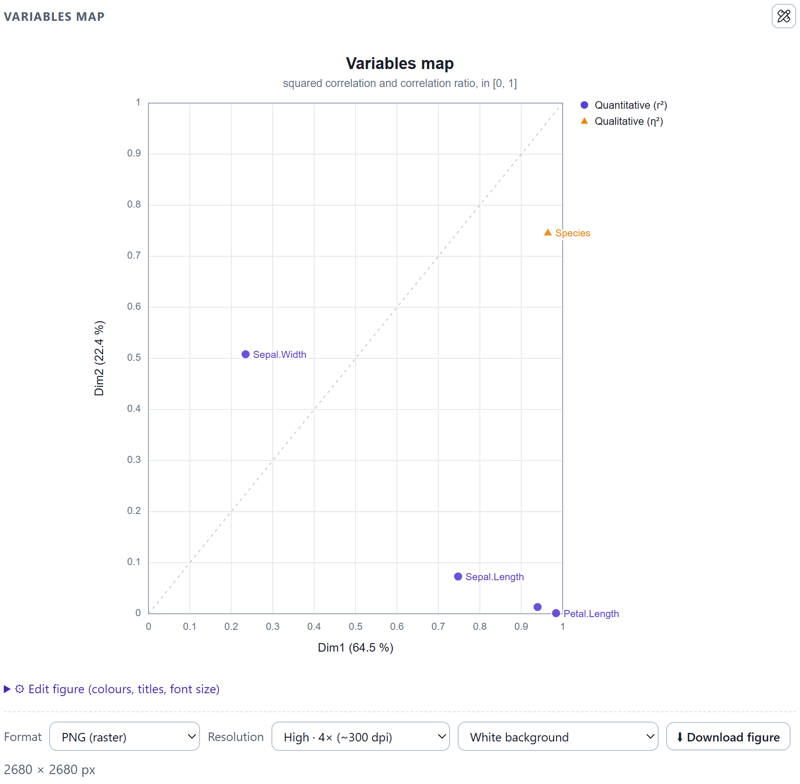
1234
Figure 6.6. The map of variables of a FAMD of iris with the species active. 1 Species: η² = 0.964 on Dim1 and 0.746 on Dim2, the only variable that is strong on both axes. 2 Petal.Width (r² = 0.939 and 0.013) with no name: its label did not fit next to that of Petal.Length. 3 The reference diagonal. 4 Sepal.Width, the one that defines Dim2 among the quantitative variables.
Table 6.11. How to read the maps belonging to each method.
Map
Reading
Symmetric, CA
Distances between rows, or between columns, are read directly; the distance from a row to a column only gives an orientation.
Categories (MCA, FAMD)
Two nearby categories appear together on the same individuals. Rare categories end up far from the centre: look at their cos² before reading them.
Variables (FAMD)
Quantitative by r² and qualitative by η², in [0, 1]. The variables at the top right weigh on both axes.
Groups (MFA)
A group close to (1, 0) is described almost entirely by axis 1; two nearby groups tell the same story.
Partial points (MFA)
Each individual as seen from each group; the diamond is the overall position. Open lines: the groups disagree about that individual. By default it shows the 8 that contribute most.
iNote · details of these maps
With these methods Block 4 offers no downloads: the coordinates are on card 2.5 of Block 2. The axes are called Dim1, Dim2… In MFA, the circle colours the vectors by contribution, not by group: to tell groups apart use the map of the groups or the partial points. The button at the end is Go to interpretation →.
6.6The figure editor
Every figure of the app —those of this block and those of all the others— shares the same editor. It opens with ⚙ Edit figure (colours, titles, font size) below each figure, and every change redraws the figure at once.
Table 6.12. The controls that recur across the figures.
Group
Controls
Text
Title, subtitle and axis titles. An empty axis title uses the automatic one, with the percentage.
Four sliders, present in every figure: Font: everything (0.6 to 2.6) and, separately, titles, axes and ticks, and labels and legend (0.6 to 3). If an enlarged text runs out of the frame, the canvas grows on its own.
Appearance
Theme (Light, Paper, Dark, Minimal), typeface (Helvetica / Arial, Serif, Segoe UI, Monospaced), size in pixels, frame, legend and axes at zero.
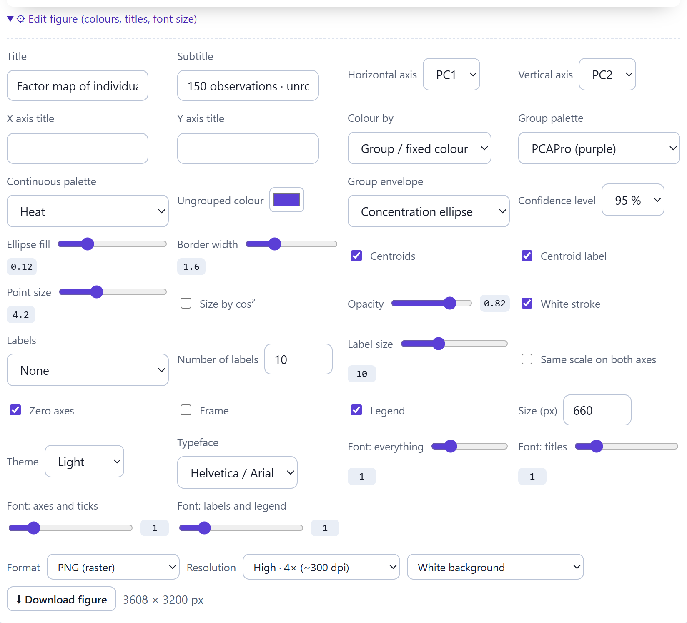
12345678
Figure 6.7. The editor of the map of individuals, open.
1Opens and closes the editor.
2The axes of the map.
3The type of hull.
4Its confidence level.
5Which individuals carry a name.
6Same scale on both axes.
7The four font sizes.
8The final size of the image.
Table 6.13. The export bar, under each figure.
Control
Options
Format
PNG (bitmap), SVG (vector, editable), JPG and WEBP.
Resolution
Screen 2× (~150 dpi), High 4× (~300 dpi, by default), Very high 6×, Publication 8× (~600 dpi) and Maximum 12× (~900 dpi). It does not apply to SVG.
Background
White or transparent; transparent works with PNG only.
⬇ Download figure
Downloads with the name of the data file and of the figure. Next to it you can read the final size in pixels.
✓Decision rule · how do I export for publication?
If the journal…
then
Accepts vectors (PDF, EPS, SVG)
SVG: it scales without losing sharpness and it can be edited in Inkscape or Illustrator.
Asks for a bitmap
PNG at 8× (~600 dpi); 4× as a minimum.
Prints in black and white, or you want accessibility
The Okabe–Ito or Greyscale palette, and Cividis for continuous scales.
The figure goes in a presentation with a coloured background
PNG with a transparent background, or the Dark theme.
Always put the percentage on the axes, state whether the solution is rotated and say in the caption which ellipse you used. The sign of an axis is arbitrary: if you invert it to read it better, say so.
!Important · the changes are not kept when you recompute
The Block 6 report includes the figures exactly as you left them. But if you build the maps again, change the language and regenerate, or recompute an earlier block, the figures are created afresh with the default values and the edited titles and colours are lost. Edit the figures at the end, when the analysis is no longer going to change.
6.7Step by step
A complete analysis with the file integrated_project_agronomy.csv: 150 plots of a trial with four treatments —control, irrigation, fertilisation and irrigation with fertilisation— in three blocks, and thirteen plant variables. The question is which dimensions summarise the response of the plants and how the treatments are laid out on them. The figures are the ones from the app.
▸Integrated project · 144 complete plots, twelve variables, z scaling
In Block 1 leave Plot as the identifier and Treatment and Block as qualitative variables, and untick Yield_kg_ha: it becomes supplementary, because it is the response we want to explain. On preparing, 144 of the 150 rows remain and KMO = 0.783.
In Block 2, six of the eight criteria —Horn, Kaiser, broken stick, MAP, 80 % and Jolliffe— agree on 4 components, explaining 87.2 %.
In Block 3, varimax leaves 12 of 12 variables clean and a complexity of 1.05: RPC1 growth (height, diameter, leaf area and biomass, from 0.91 to 0.92), RPC2 nutrition (chlorophyll, leaf P and leaf N, from 0.92 to 0.93), RPC3 water (conductance 0.929, water potential 0.917, leaf temperature −0.907) and RPC4 phenology (days to maturity 0.947 and to flowering 0.938).
In Block 4 choose Rotated (the one from Block 3) and group by Treatment. The RPC1–RPC2 plane takes up 50.4 % (28.6 + 21.8), in amber; 7 of 12 variables and 63 of 144 plots are well represented on it.
The circle (figure 6.3) shows two perpendicular bundles: growth and nutrition are independent. Water and phenology are left at the origin: they are not to be read here. In the editor choose Horizontal axis RPC3 and Vertical axis RPC4 to see them.
Yield, supplementary, correlates 0.809 with RPC1 and 0.647 with RPC2: it rises with growth and with nutrition.
The centroids of table 4.7 order the treatments: control (−0.87, −0.94), irrigation (−0.49, −0.59), fertilisation (0.01, 0.77) and irrigation + fertilisation (1.36, 0.80). Fertilisation moves nutrition; only the combination moves growth as well. On RPC3, irrigation is at 0.48 and fertilisation at −0.97.
The centroids of Block all stay within 0.31 of the origin: the block does not order the plots.
The concentration ellipses of the biplot (figure 6.5) overlap a great deal: the differences between centroids are real on average, but a single plot is not assigned to its treatment by its position.
In Most influential individuals, PAR005 and PAR058 contribute 8.21 % and 7.97 % to the plane, when 1.39 % is what is expected. They have cos² of 0.86 and 0.96: they are well represented, so they are extreme plots, not projection errors. Their recording is worth checking.
Reading. The trial is summed up in four independent dimensions, and the 1–2 plane shows the two that matter most for yield. Fertilisation acts on nutrition and irrigation on water status, but only their combination shifts the plots towards high growth, which is where yield points. To state that the treatments differ a test is needed —a MANOVA or a PERMANOVA on the scores—; the maps show where and in which dimension.
▸How to describe the figure
“Figure 3. Biplot of the plane formed by the first two rotated components (varimax), explaining 50.4 % of the variance (28.6 % and 21.8 %). The points are plots coloured by treatment, with 95 % concentration ellipses; the arrows, the active variables. Yield, projected as a supplementary variable, correlated 0.81 with the first component and 0.65 with the second.”
With the maps built, the next chapter enters Block 5: the reading of each axis and the draft of the results section.
7
Chapter seven · Block 5
Interpretation
From the numbers to the sentences: how to name each component, which variables and categories describe it, how to compare groups without falling into circularity, how much of the structure the solution reproduces and how to turn it all into a draft of the results section.
7.1Naming an axis
7.2Dimension description and test values
7.3Comparing groups without falling into circularity
7.4Goodness of fit
7.5The results draft
7.6Interpreting CA, MCA, FAMD and MFA
7.7Step by step
7.1Naming an axis
A component is a linear combination and, on its own, it means nothing. Interpreting it is finding the concept of your discipline that explains why those variables vary together, and giving it a short name that a reader understands without looking at the table of loadings.
θThe procedure
Look at the variables with |loading| above the threshold you set.
Separate them by sign. If there are both, the axis is a contrast: it opposes two sets of characteristics.
Look for what they have in common: size, vigour, an environmental gradient, a resource-use strategy.
Give it a short, substantive name. If you cannot name it, you probably should not have retained it.
Confirm it with the supplementary variables, the categories and the extreme individuals.
Block 5 is unlocked when the maps of Block 4 are built and it works on the solution you chose there: unrotated or rotated. It has a theory card with five topics and the 5.1 · Settings card, with two options. Pressing Interpret components → brings up seven result cards and unlocks Block 6.
Table 7.1. The options of card 5.1.
Option
Values
Note
Interpretable loading threshold
0.30, 0.40 (by default), 0.50, 0.55 and 0.70.
It is independent of the Block 3 threshold: it is advisable to use the same one.
Compare groups on the components
Do not compare groups or a qualitative variable from Block 1.
It adds card 5.5 with an ANOVA and a Kruskal–Wallis per component.
Changing either of the two options interprets again at once. The names you wrote are kept as long as the number of components does not change.
1234567
Figure 7.1. Cards 5.1 and 5.2 · Summary with the integrated project, varimax rotation and the four components already named.
1The loading threshold.
2The qualitative variable being compared.
3Launches the interpretation.
4RMSR in green: good fit.
5Poorly reproduced pairs, in amber.
6Component and its percentage.
7The app's suggestion, which is kept.
Table 7.2. The indicators of card 5.2.
Indicator
What it counts
Colour
Components interpreted
How many, and whether the solution is rotated or unrotated.
—
RMSR
Root mean square residual (section 7.4).
green < 0.05 · amber < 0.08 · red
Residuals > 0.05
Pairs of variables whose residual exceeds 0.05 in absolute value.
green < 10 % · amber < 25 % · red
Categories characterised
Categories with |v.test| ≥ 1.96 on some axis (section 7.2).
—
Variance retained
That of every interpreted axis.
—
The names
Below the indicators, Name each component offers one field per component, filled in with a suggestion built from the loadings that exceed the threshold. Write the term of your discipline over it: the name passes to the reading of the components, to the results draft and to the Block 6 report. The original suggestion always stays visible below the field.
Table 7.3. How the app builds the suggestion.
If the loadings above the threshold are…
the suggestion is
All positive
The three largest: “Height_cm, Stem_diameter_mm, Leaf_area_cm2”.
Of both signs
The two largest on each side: “Conductance_mmol + Water_potential_MPa against Leaf_temp_C”.
All negative
The three largest preceded by “Lower”.
None
“(no clear loading)”: the axis is not interpreted with that threshold.
✓Decision rule · is it a good name?
Question
If the answer is no…
Does it sum up all the marker variables, not just the first?
Look for a more general term, or check whether two themes are mixed.
If it is a contrast, does it say what lies at each end?
Use the form “A against B”, or a gradient name: “blade thickness”.
Do the supplementary variables and the extreme individuals confirm it?
The name describes the loadings, but not the system: think again.
Would a reader understand it without seeing the table?
Avoid column names: “Growth”, not “Height_cm, Biomass_g”.
The sign of an axis is arbitrary. Name the axis by its positive end and, if you invert the sign in one figure to read it better, do so in all of them and say so.
7.2Dimension description and test values
Two cards describe each axis from outside the loadings: 5.3 · Description of each dimension, with the quantitative variables, and 5.4 · Characterisation by category (test values), with the qualitative ones. Together they amount to FactoMineR's dimdesc() function.
Variables that describe the axis
The Axis to describe: picker chooses the component for the table. The table orders every variable —active and supplementary quantitative— by the absolute value of its correlation with the scores of that axis. For the active ones, that correlation is the loading; for the supplementary ones, the same coordinate as on the Block 4 circle.
1234
Figure 7.2. Card 5.3 with RPC1 of the integrated project. 1 The axis being described. 2 Yield, supplementary, in teal and with †. 3 The reference lines at ±0.30. 4 The non-significant variables, marked n.s.
Table 7.4. Columns of the description table.
Column
Contents
Type
active or supplementary.
Correlation with the axis · r²
The correlation and its square: the proportion of the variance of the variable that the axis takes up.
p and stars
A t test on the coefficient with n − 2 df (with the valid n, for supplementary variables): * p < 0.05, ** p < 0.01, *** p < 0.001, n.s.
The Dimension description figure draws the same correlations as bars. Its editor has its own axis picker, ordering by magnitude or by sign, only the significant ones, only the largest N and the lines at ±0.30, which do not change with the threshold of card 5.1.
Test values of the categories
Each category of the qualitative variables of Block 1 is placed at the centroid of its individuals. The test value measures how far that centroid departs from the centre of the axis compared with what would be expected if the category were a random sample of the individuals.
Figure 7.3. Card 5.4 with the integrated project. 1 Irrigation + fertilisation, with v = 5.1 on RPC1: the category that characterises growth most. 2 The blocks, with no significant value. 3 The key to the stars. 4 Fertilisation also characterises phenology (v = 2.22).
✓Decision rule · how do I read a test value?
|v|
Reading
< 1.96
The category is not distinguishable from the centre on that axis (in grey).
≥ 1.96 (*)
It characterises the axis with p < 0.05; the sign says on which side.
≥ 2.58 (**)
p < 0.01.
Order by |v|: the categories with the highest value are the ones that best characterise the axis. With a large n almost any small difference goes above 1.96: look also at the distance of the centroid on the map.
!Important · the p values of the active variables are circular
The axes were built with the active variables, so their correlation with the axis will be significant almost always: with n = 144, |r| ≥ 0.17 is enough. Those p values are a reading aid, not evidence. The p values of the supplementary variables do say something, because those variables took no part in the axes, although they carry no correction for multiple comparisons either.
Characteristic individuals
The 5.6 · Individuals that characterise each axis card lists, for each component, the five individuals with the most negative coordinate and the five with the most positive. They serve to check the name: if you called RPC1 “Growth”, the plots at the positive end should be the most vigorous ones you know.
Figure 7.4. Card 5.6 with the integrated project. PAR005 and PAR058 appear at the negative end of RPC1 and of RPC2 at the same time: little growth and poor nutrition. PAR024 heads the positive side of RPC2 and of RPC3.
7.3Comparing groups without falling into circularity
If you chose a qualitative variable in Compare groups on the components, the 5.5 · Group comparison on the components card appears. For each component it compares the scores of the groups with a one-way ANOVA and with the Kruskal–Wallis test. Only groups with at least two individuals go in.
Table 7.5. Columns of the comparison table.
Column
Contents
Reference
F, df, p (ANOVA)
The F test of a one-way ANOVA on the scores.
—
η²
Proportion of the variance of the component explained by the factor.
0.01 small · 0.06 medium · 0.14 large
ω²
A less biased version of η²; report it with small samples.
The same
H, p (Kruskal)
The alternative that assumes no normality.
—
Reading
“separates the groups” with the effect size if p < 0.05; if not, “does not distinguish groups”.
By the ANOVA p
Below are the Scores by group figure —box plots or means with 95 % CI, one panel per component with its F test— and the Means by group table, with n, mean, SD and the 95 % confidence interval of each mean.
!Important · what can be claimed
These contrasts are legitimate because the qualitative variable took no part in the axes. But they have two limits that must be stated: they are k tests with no correction for multiple comparisons, and the axes were chosen a posteriori for maximising variance, so the p values are optimistic. Use them to describe on which dimension the groups differ. If your question is “do the groups differ?”, the answer is a MANOVA, a PERMANOVA or a discriminant analysis on the original variables.
iNote · a free negative control
If your design has a factor that should not matter, compare it too. In the integrated project, with Block no component distinguishes the groups: F between 0.05 and 1.06, η² ≤ 0.015. It is the check that the differences between treatments are not an artefact of the terrain.
12345
Figure 7.5. Card 5.5 with the treatment. 1 RPC4, phenology, does not distinguish the treatments. 2 The F test of each panel, with η². 3 Irrigation + fertilisation, the only treatment with the median of RPC1 clearly above zero. 4 On RPC4 the boxes overlap almost completely. 5 Outlying scores, in red.
7.4Goodness of fit
The k retained components allow the correlation matrix to be reconstructed. The difference between the observed and the reproduced one are the residuals; if they are small, the components take up all the structure that matters.
R̂ = A · Aᵀ (unrotated or orthogonal) · R̂ = P · Φ · Pᵀ (oblique) RMSR = √( Σi<j residual²ij / [p(p − 1)/2] )
✓Decision rule · did I retain enough components?
RMSR
Reading
< 0.05
Good fit: the solution reproduces the structure.
0.05 to 0.08
Acceptable.
> 0.08
Structure is being lost: consider retaining one more component in Block 2.
A complement: that fewer than 10 % of the pairs have a residual above 0.05. One particular pair with a large residual points to a relationship that no axis takes up. With the integrated project, 4 components give RMSR = 0.029 and 8 of 66 pairs; with 3, RMSR = 0.105 and 19 of 66: the fourth component is needed.
12345
Figure 7.6. The 5.7 · Goodness of fit card with four components. 1 The scale is fitted to the largest residual. 2 Leaf temperature with conductance and water potential (0.08 and 0.09): the water axis does not quite take up that relation. 3 The negative residuals of the nutrition block. 4 Flowering and maturity (−0.09). 5 The summary: RMSR and pairs above 0.05.
The figure, Residuals of the reproduced matrix, shows the lower triangle by default —its editor allows the upper one or the full matrix— and marks in bold the residuals above 0.05. The ⬇ Residual matrix (CSV) download gives the full matrix.
7.5The results draft
The last card, 5.8 · Reading the components, gathers everything into two pieces of text that update when the names change.
Table 7.6. What the reading of each component holds.
Sentence
Where it comes from
Heading
Component, name in quotation marks and percentage.
“High values on this axis correspond to…”
Variables with |r| above the threshold, active and supplementary (supp.), separated by sign.
“Categories that characterise it”
Up to six categories with |v| ≥ 1.96, from largest to smallest.
“Comparison between groups”
F, p and η² of the ANOVA, if you chose a qualitative variable.
Colour of the box
Green if at least two variables exceed the threshold; amber if not.
12345
Figure 7.7. Card 5.8 with the names written in. 1 The name, taken from the field on card 5.2. 2 The supplementary variables are marked (supp.). 3 Phenology does not separate the treatments. 4 The draft for the results section. 5 The step to the clustering; below it, to the report.
The draft is a paragraph with your own numbers: matrix, number of variables and observations, KMO and Bartlett, components and cumulative variance, rotation and normalisation, threshold, the name and percentage of each component, and the RMSR. ⧉ Copy paragraph puts it on the clipboard.
!Important · check these three things before pasting the draft
The retention criterion. The paragraph always says “on the basis of Horn's parallel analysis and the scree plot”, even if you chose the number by another criterion. Correct it with the criteria you actually used (section 4.3).
The names. If you did not change them, the paragraph uses the suggestions, with column names.
What is missing. It does not mention the treatment of missing data, the transformation or the scaling, which are in the Block 6 report, nor the group comparison.
Table 7.7. The buttons of card 5.8.
Button
What it does
⬇ Dimension description (CSV)
For each axis, the variables with type, correlation, r² and p.
⬇ Test values (CSV)
Categories with n, v.test and p on each axis.
⬇ Residual matrix (CSV)
The full residual matrix.
Cluster the individuals (HCPC) →
Opens the clustering (chapter 8).
Go to the report →
Opens Block 6 (chapter 9).
7.6Interpreting CA, MCA, FAMD and MFA
With a method other than PCA, the same Interpret components → button opens different cards, because the correlation of each variable with each axis does not always exist. What describes an axis is the contribution of each element, with its sign.
Table 7.8. What describes each axis according to the method.
Method
Elements of card 5.2 · Reading each axis
CA
Rows and columns of the table, with their coordinate and contribution.
MCA
The categories, with the variable they belong to.
FAMD
The quantitative variables by their correlation with the axis and the categories by their coordinate.
MFA
The variables, with the group they belong to.
Table 7.9. The cards with these methods.
Card
Contents
5.2 · Reading each axis
For each axis, its inertia, a field for naming it and the elements above the threshold, on the positive and the negative side, with their contribution.
5.3 · Test values of the categories
The test values of the categories over the individuals, with the same formula as PCA. It does not appear in CA, which has no individuals.
5.4 · Draft for the results section
Data of the analysis, retained axes and whether the criteria agreed, what each axis opposes, significant categories and, in MFA, the range of RV between groups.
1234
Figure 7.8. The interpretation of a FAMD of iris with the species active. 1 The suggested name for Dim1, editable. 2 Setosa, with v = −11.43 on Dim1. 3 The draft: its first line falls outside the grey box because of a style of the app. 4 The step to the report.
!Important · the threshold changes meaning
With these methods the Interpretable loading threshold becomes a contribution threshold: threshold × 100 / number of columns. In the FAMD of iris there are 7 columns (4 quantitative and 3 categories), so 0.40 amounts to 5.7 %, a good deal less than the mean contribution, 100/7 = 14.3 %. That is why elements with a modest contribution appear, such as Sepal.Width with 6.1 % on Dim1. To keep only what is above the mean, raise the threshold to 0.70 or read the contributions on card 2.5.
iNote · what there is not with these methods
There is no group comparison —the picker on card 5.1 is ignored—, no dimension description by correlation, no extreme individuals, no goodness of fit and no downloads in this block. If you reach Block 5 through the step bar, the group picker may keep the qualitative variables of an earlier file; arriving with the Go to interpretation → button of Block 4 updates it.
7.7Step by step
The interpretation of the integrated project, carrying on from the case of chapter 6: 144 plots, twelve variables, four components with varimax and the rotated solution on the maps. The figures are the ones from the app.
▸Integrated project · interpretation of four rotated components
On card 5.1 leave the threshold at 0.40, choose Treatment and press Interpret components →. RMSR = 0.0291, in green; 8 of 66 residuals go above 0.05; 4 of 7 categories characterise some axis.
Replace the suggestions with Growth, Nutrition, Water status and Phenology. The third suggestion, “Conductance_mmol + Water_potential_MPa against Leaf_temp_C”, confirms that RPC3 is a contrast: well-hydrated, cool leaves against hot leaves.
On card 5.3, supplementary yield correlates 0.809 with Growth (p < 0.0001) and 0.647 with Nutrition. It is the only correlation in the table that is not circular.
The test values (figure 7.3) order the treatments: irrigation + fertilisation characterises the positive side of Growth (5.11), Nutrition (3.41) and Water status (4.39); the control, the negative side of all three; fertilisation raises Nutrition (3.25) but lowers Water status (−4.11); irrigation does the opposite (−2.52 and 2.08).
The ANOVA separates the treatments on Growth (η² = 0.211), Nutrition (0.237) and Water status (0.242), all large effects, and not on Phenology (F = 1.86, p = 0.14). With Block, no component separates the groups.
In the goodness of fit, the largest residuals are temperature–water potential (0.09), temperature–conductance (0.08) and flowering–maturity (−0.09): relations a little stronger than the axes reproduce, but with no pattern that calls for another component. Try retaining 3 in Block 2 and repeating the chain: RMSR = 0.105, in red.
The extremes confirm the names: PAR005 and PAR058 are on the negative side of Growth and of Nutrition, the same plots that pulled on the plane in chapter 6.
Copy the draft and correct the retention criterion: here it was six of the eight criteria, not just Horn and the elbow.
Reading. The treatments do not act on a single dimension. Fertilisation improves nutrition at the cost of water status; irrigation, the opposite; only the combination improves all three axes and shifts the plots towards growth, which is what is most associated with yield. No treatment changes phenology. That reading, dimension by dimension, is what PCA adds to an ANOVA variable by variable.
▸The draft, corrected
“A principal component analysis was carried out on the correlation matrix of 12 variables measured on 144 plots (KMO = 0.78; Bartlett's test of sphericity: χ²(66) = 1353.7, p < 0.001). Four components were retained, on which the parallel analysis, the broken stick and Velicer's MAP agreed, together explaining 87.2 % of the variance. A varimax rotation with Kaiser normalisation was applied to them and the loadings were interpreted at |r| ≥ 0.40. The rotated components were interpreted as growth (28.6 %), nutrition (21.8 %), water status (21.6 %) and phenology (15.2 %). The solution reproduces the correlation matrix with an RMSR of 0.029. Yield, projected as a supplementary variable, correlated with growth (r = 0.81) and nutrition (r = 0.65). The treatments differed on the first three components (η² from 0.21 to 0.24), but not on phenology (F(3, 140) = 1.86, p = 0.14).”
With the components interpreted, the next chapter presents the optional clustering of the individuals on the components (Block 5b).
8
Chapter eight · Block 5b
Clustering
The optional step that turns the cloud of individuals into a few named clusters: Ward's hierarchical clustering on the axes, three rules for deciding how many clusters, consolidation by k-means and the description of each cluster. It works with all five methods. It ends with what a clustering cannot prove.
8.1Clustering on the axes
8.2Ward's criterion and the dendrogram
8.3How many clusters? Three rules
8.4Consolidation and description of the clusters
8.5What a clustering does not prove
8.6Step by step
8.1Clustering on the axes
Factor analysis orders the individuals in a continuous space. Clustering them is another operation, and it is optional: it answers the question “what types of individual are there?”, not “what dimensions order them?”.
θHCPC: why on the axes and not on the variables
HCPC —hierarchical clustering on principal components, from Husson, Josse and Pagès— clusters on the factor coordinates, not on the original table. It has two advantages:
It removes the noise. The axes you did not retain are, for the most part, variation without structure: clustering on the first ones is clustering on a clean version of the table.
It unifies the data types. On the coordinates of an MCA or a FAMD the Euclidean distance is used even though the original variables are qualitative, with no need to choose a similarity coefficient.
The block appears on the bar as 5b · Clustering and is unlocked when the maps of Block 4 are built, together with Block 5. It has a theory card with six topics and the 5b.1 · Clustering settings card. Pressing Cluster the individuals → brings up seven result cards and unlocks Block 6.
!Important · come in through the Block 5 button
The settings card is filled in when the block is opened with the Cluster the individuals (HCPC) → button, which is at the end of Block 5, both in PCA and in the other methods. In version 1.1, if you arrive with the 5b button of the step bar, the card is left empty and pressing Cluster the individuals → gives an error. Press Interpret components → in Block 5 and use that button.
1234567
Figure 8.1. Cards 5b.1 and 5b.2 · Summary of the partition with iris and two components.
1How many axes go in.
2Number of clusters: automatic or fixed.
3The consolidation by k-means.
4Launches the clustering.
5Clusters, in green if the criteria agree.
6The mean silhouette and its reading.
7What the consolidation did.
Table 8.1. The options of card 5b.1.
Option
Values
Advice
Axes used
From 1 to the number of axes of the method. By default, those retained in Block 2 (at least 2 and at most 5). Below it you can read how much inertia they add up to.
Use the retained ones: few axes manufacture clean clusters that are not in the data; many bring the noise back.
Number of clusters
automatic (consensus of the three criteria) or a number from 2 to 10.
Start on automatic and change it only with a reason from your discipline (section 8.3).
Consolidate by k-means
A checkbox, ticked.
Leave it ticked; untick it if you need the partition to match the tree exactly.
Table 8.2. The indicators of card 5b.2.
Indicator
What it says
Colour
Clusters
The number of clusters and whether the three criteria agree.
green if they agree · amber
Axes used
How many and how much inertia they add up to.
—
Between-cluster inertia
The proportion of the inertia of the cloud the partition explains.
green ≥ 50 % · amber
Mean silhouette
Cohesion against separation (section 8.3).
green ≥ 0.50 “clear structure” · amber ≥ 0.25 “weak” · red “no appreciable structure”
Size of the clusters
Individuals in each cluster.
—
In version 1.1 the indicators of this card stack in a column instead of forming a row, as in Block 2 with methods other than PCA.
Table 8.3. What is clustered with each method.
Method
Individuals
What the clusters are described with
PCA
The unrotated scores of the observations. An orthogonal rotation would not change the distances; with an oblique one the unrotated solution is clustered all the same.
Active variables in their original units, supplementary quantitative and qualitative ones.
CA
The rows of the contingency table, with their mass.
The profile of each row: how it is shared out as percentages among the columns.
MCA, FAMD, MFA
The individuals, without the rows discarded for being empty.
Quantitative and qualitative variables of the data, active and supplementary.
8.2Ward's criterion and the dendrogram
The tree is built from the bottom up: each individual starts as a cluster and, at every step, the two clusters whose fusion adds the least within-cluster inertia are joined.
Δ(A, B) = [wA · wB / (wA + wB)] · d²(gA, gB)
g are the centres and w the masses of the clusters. Δ is the height at which the fusion appears on the dendrogram: a tall branch means that joining those two clusters came at a high price, that is, that they were different. Ward is the natural criterion here because, like factor analysis, it divides the total inertia into a between-cluster part and a within-cluster part.
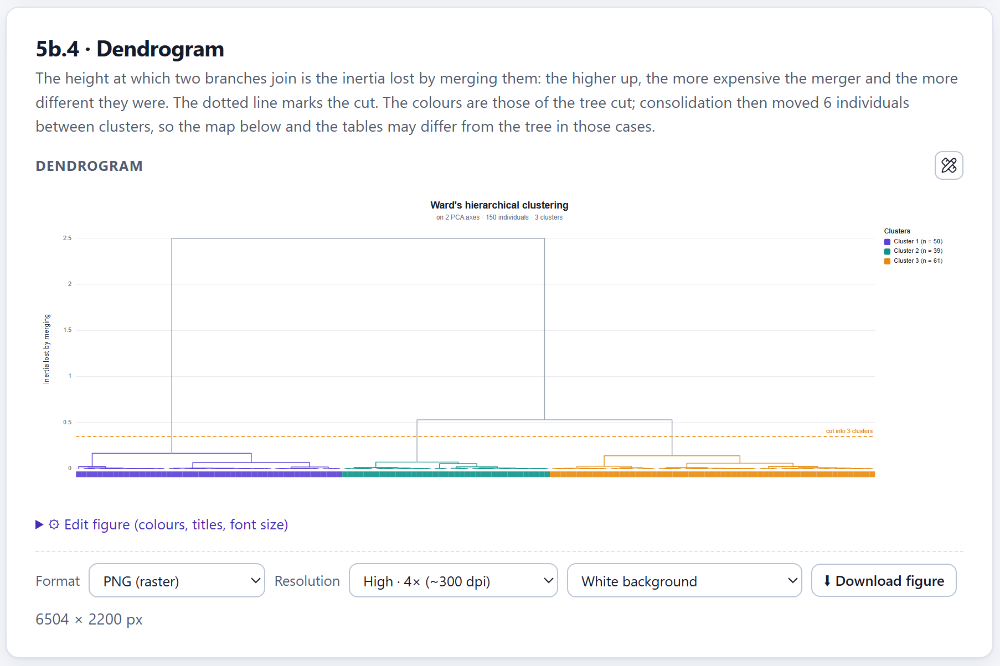
Figure 8.2. The 5b.4 · Dendrogram card with iris cut into three clusters. The tallest fusion (2.5) separates setosa from the rest; the next (0.53) divides the large cluster in two. The orange line marks the cut and the band at the bottom colours the leaves according to the cluster of the cut. The note warns that the consolidation afterwards moved 6 individuals.
Table 8.4. Options belonging to the dendrogram.
Control
What it does
Orientation
Leaves at the bottom or leaves on the left.
Colour the branches by cluster · Trunk colour
The branches of each cluster in its colour; what is above the cut, in grey.
Cut line · Cluster band
The height of the cut and a colour band under the leaves.
Square-root scale
It compresses the tall fusions so that the low ones can be seen better.
Leaf labels · Maximum labelled leaves
Names of the individuals (80 at most by default; with more they are hidden).
Width · Height of the heights
The size of the drawing in pixels.
8.3How many clusters? Three rules
As with the number of components, there is no single answer. The 5b.3 · How many clusters card computes three rules on the same tree, between 2 and 10 clusters, and shows whether they agree.
Table 8.5. The three rules.
Rule
What it looks for
Character
Largest height jump
The number of clusters whose next fusion would be the most costly in absolute terms.
It usually chooses few clusters: the first great division.
Largest relative loss of inertia
The same jump, divided by the previous height.
Husson and Josse's rule; it decides when the three disagree.
Maximum mean silhouette
The number with the best silhouette: for each individual, (b − a) / max(a, b), with a its mean distance to those of its own cluster and b the mean distance to the nearest neighbouring cluster.
It rewards compact, well-separated clusters.
The consensus is the number proposed by most rules; if the three disagree, the relative loss prevails. With automatic, that is the number of clusters.
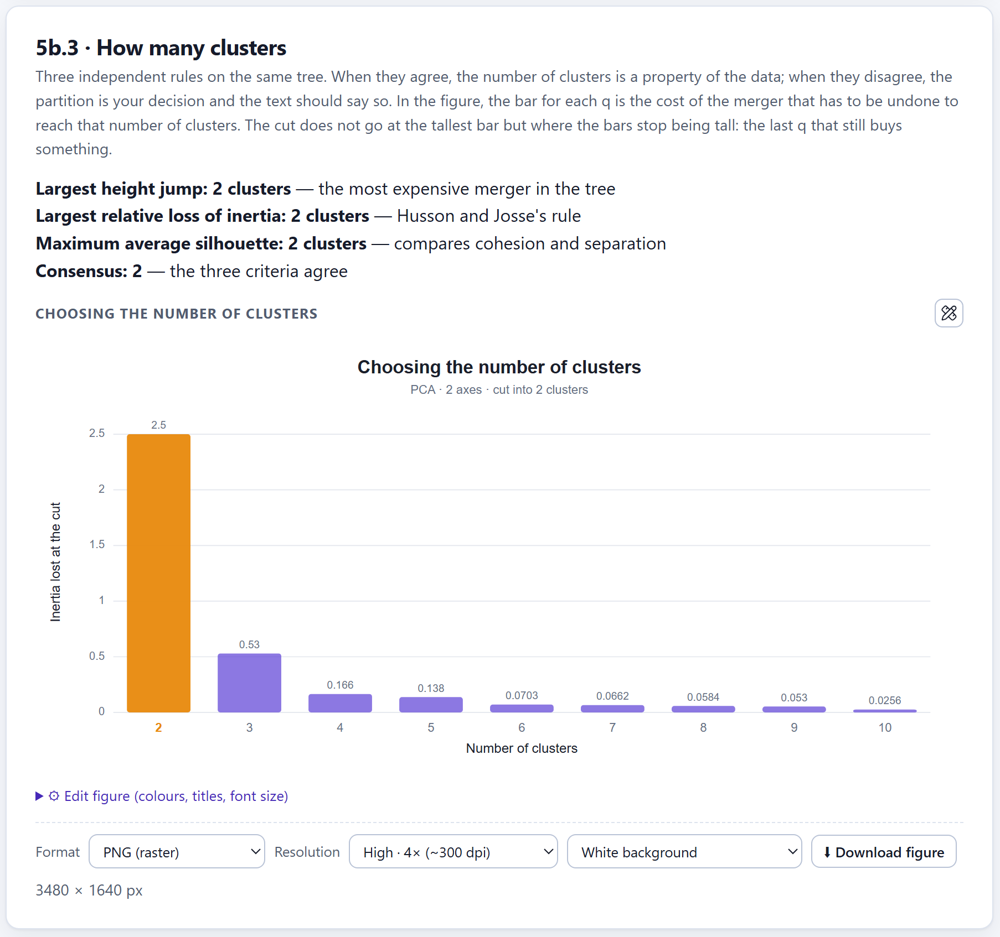
Figure 8.3. Card 5b.3 with iris. The three rules propose 2 clusters. In the figure, the bar of each number is what the fusion that would have to be undone to reach it costs: that of 2 clusters (2.5) is almost five times that of 3 (0.53). The editor allows the mean silhouette to be drawn instead of the loss.
✓Decision rule · how many clusters do I report?
If…
then
The three rules agree and the silhouette is ≥ 0.50
That number is a property of the data: report it as such.
They disagree, but one option makes sense in your discipline
Choose it in Number of clusters and say that it was a decision, with the numbers of each rule.
The silhouette of the best option is < 0.25
There are no clusters to report: the cloud is continuous.
The jump chooses 2 and the other rules a high number with a low silhouette
Distrust the high number: it is usually the continuous cloud cut into slices (case 3 of section 8.6).
You do not cut at the tallest bar of the figure, but where the bars stop being tall: the last number that still “buys” inertia.
8.4Consolidation and description of the clusters
The consolidation by k-means
A fusion of the tree, once made, is not undone: an individual left on the wrong side at an early step stays there. The consolidation starts from the centres of the cut, reassigns each individual to the nearest centre and repeats, up to 30 times, until nobody moves. It never worsens the within-cluster inertia.
The text under the indicators says how many iterations it made and how the between-cluster inertia changed. If there was no change, it adds “the cut of the tree was already stable”.
iNote · the tree and the map may not match
The dendrogram is always coloured with the cut of the tree; the map, the tables and the downloads use the consolidated partition. If the consolidation moved individuals, card 5b.4 says how many. With iris and three clusters it moved 6: the tree has clusters of 50, 39 and 61 individuals, and the final partition of 50, 45 and 55. If you need them to match, untick the consolidation.
The clusters on the plane
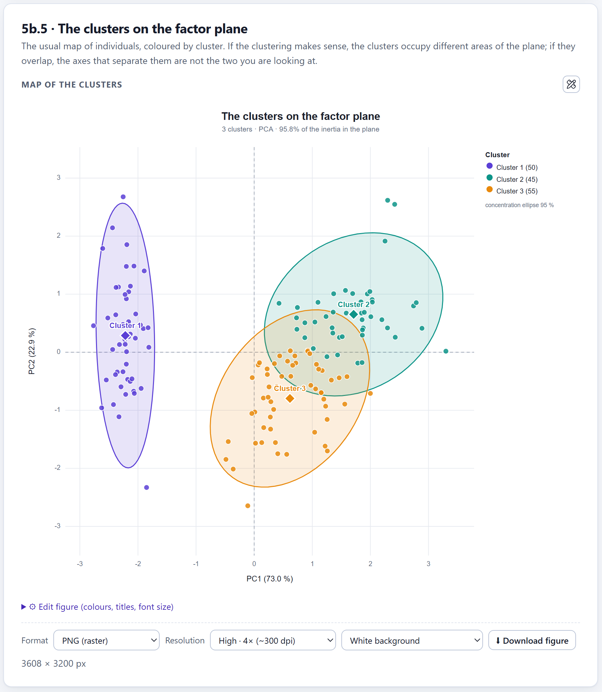
Figure 8.4. The 5b.5 · The clusters on the factor plane card: the same map of individuals as Block 4, coloured by cluster and with the same editor options. Here it does have the same scale on both axes by default. Cluster 1 is isolated; clusters 2 and 3 overlap in the centre.
What characterises each cluster
The 5b.6 · What characterises each cluster card describes each cluster by what sets it apart from the whole, with test values: how many standard deviations the cluster departs from the overall mean, under the model that its individuals had been drawn at random and without replacement from the total.
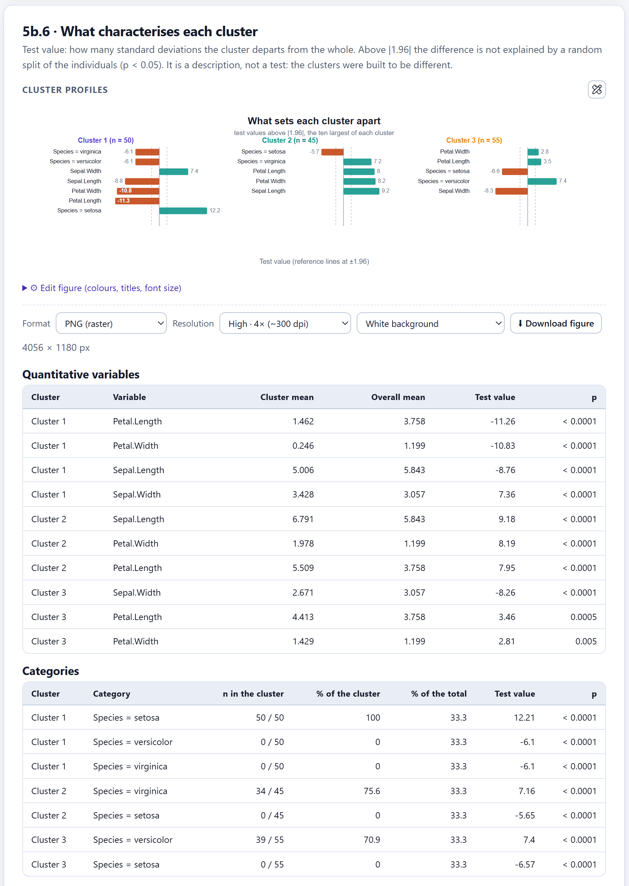
Figure 8.5. Card 5b.6 with iris and three clusters. The figure shows, per cluster, the ten test values greater than |1.96|: in green what is above the mean, in orange what is below. Cluster 1 has small petals (−11.26) and is all setosa (50 of 50); cluster 2 is 75.6 % virginica; cluster 3, 70.9 % versicolor.
Table 8.6. The three description tables. Only values with |v| ≥ 1.96 are listed.
Table
Columns
Reading
Quantitative variables
Cluster, variable, mean of the cluster, overall mean, test value and p. The supplementary ones carry *.
A positive test value: the cluster is above the mean.
Categories
Cluster, category, n in the cluster / size of the cluster, % of the cluster, % of the total, test value and p.
Positive: the category is over-represented; negative: almost absent.
Position of each cluster on the axes
n and the mean of each axis used. Always complete.
Where the centre of the cluster lies on each dimension.
With CA, the first table is called Row profile by cluster and compares the percentage of each column in the cluster with the overall one. Since the rows have very different masses, that test value is read as an order of importance, not as a probability.
Paragons, specifics and the draft
The 5b.7 · Individuals that represent each cluster card gives, per cluster, the five paragons —those closest to its centre: the typical specimens— and the five specifics —those furthest from the other centres: the ones that cannot be confused with any other cluster—, with their distance. The paragons serve to explain what a cluster is; the specifics, to choose cases for a follow-up study.
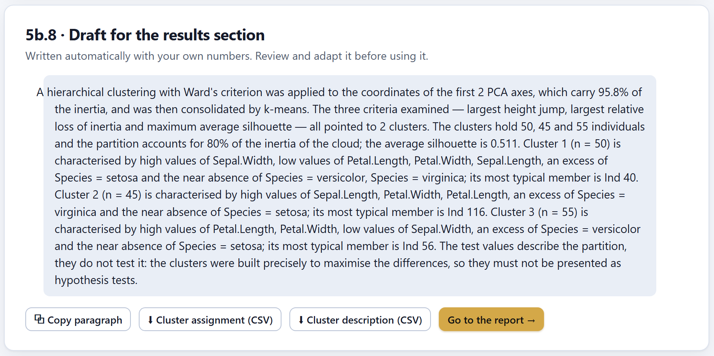
Figure 8.6. The 5b.8 · Draft for the results section card with iris and three clusters chosen by hand. The paragraph describes the axes and the method, the rules, the size of the clusters, the explained inertia and the silhouette, the descriptors of each cluster with its most typical specimen, and closes by warning that the test values describe, they do not prove.
!Important · check the second sentence of the draft
If you choose a number of clusters other than the consensus and the three rules agreed, the draft says “they agreed on 2 clusters” and then goes on to describe 3. Correct that sentence: “The three rules indicated 2 clusters; 3 were retained because…”. The Clusters indicator has the same problem: it still says “the three criteria agree”. The list of rules on card 5b.3 does make it clear: “you chose 3”.
Table 8.7. The downloads of the block, in CSV.
Button
Contents
⬇ Cluster assignment (CSV)
Individual, cluster and its coordinates on the axes used. It serves to take the cluster into another analysis.
⬇ Cluster description (CSV)
Every test value —including the non-significant ones— of quantitative variables, categories and axes, with the value in the cluster, the overall value and p.
The Go to the report → button opens Block 6, which includes the clustering if you ran it.
8.5What a clustering does not prove
The algorithm always returns clusters, including on data without structure. It is worth having three cautions written down before looking at the result.
!Important · three cautions
The test values describe, they do not prove. The clusters were built to maximise those differences; presenting them as hypothesis tests is circular. With iris, every p is < 0.0001, and it means nothing.
High inertia with a low silhouette is a cloud cut into slices. The partition shares the variance out well, but the clusters are not separated.
Finding what you already knew is not a discovery. If the clusters coincide with the treatment, the species or the site, say so: the clustering confirms that that variable orders the data, it does not discover it.
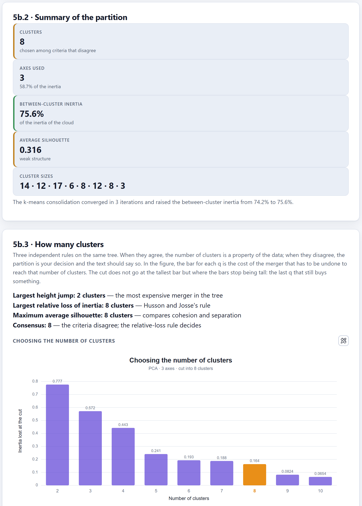
Figure 8.7. The clustering of practice4_no_structure.csv, six independent variables with three components. The app proposes 8 clusters, of 3 to 17 individuals, explaining 75.6 % of the inertia, in green. But the silhouette is 0.316, the rules disagree (2 and 8) and the figure falls continuously, with no clear step after the first.
75.6 %
Of inertia explained, on noise
With data generated with no relation whatsoever between variables, eight clusters explain three quarters of the inertia of the three axes. Between-cluster inertia does not measure whether there are clusters: it always grows when clusters are added. Look at the silhouette and at the agreement of the rules.
8.6Step by step
Three clusterings with very different results. The figures are the ones from the app; in all of them the block was entered with the button of Block 5.
Case 1 · Iris: two clear clusters, three that make sense
▸iris.csv · PCA with two components (95.8 %)
With the default values —2 axes, automatic, consolidation— the three rules choose 2 clusters: silhouette 0.615 (“clear structure”), between-cluster inertia 65.7 %, sizes 50 and 100. The consolidation moved nobody.
Cluster 1 is all setosa (50 of 50, v = 12.21); cluster 2 gathers versicolor and virginica, 50 of each.
Since there are three species, choose 3 in Number of clusters. The silhouette falls to 0.511, still clear; the inertia rises to 80.0 %; the consolidation moved 6 individuals (figure 8.2).
Cluster 2: 34 of 45 are virginica (75.6 %), with long sepals (v = 9.18). Cluster 3: 39 of 55 are versicolor (70.9 %), with narrow sepals (v = −8.26).
Reading. The data have two clear types —setosa and the rest— and a third, blurred one. The partition into three recovers the species with errors at the border between versicolor and virginica, exactly where the map overlaps them. Reporting three clusters is legitimate if it is said that it was a decision, and that the rules indicated two.
Case 2 · Integrated project: seven types of plot
▸integrated_project_agronomy.csv · PCA with four components, yield supplementary
With 4 axes (87.2 %), the jump chooses 2 clusters; the relative loss and the silhouette, 7. The consensus is 7, with sizes from 15 to 27 plots, between-cluster inertia of 60.4 % and a silhouette of 0.227: “no appreciable structure”.
The descriptors are sharp: cluster 7 (27 plots) has tall plants (v = 7.43) and high yield (v = 5.90), and 18 of its 27 plots are irrigation + fertilisation (v = 5.53). Cluster 3 (15) has high leaf nitrogen (v = 6.32) and 11 fertilisation plots (v = 4.66).
The consolidation moved 26 of the 144 plots: the tree had no natural cuts.
Reading. The clusters are described well because the four dimensions are real, but the silhouette says that the plots form a continuum on those dimensions and not separate types. It is a case for reporting the dimensions of chapter 7 and, at most, the clusters as a convenient way of summarising them, stating the silhouette.
Case 3 · Data without structure
▸practice4_no_structure.csv · PCA with three components (58.7 %)
The app proposes 8 clusters; one of them has 3 individuals. Between-cluster inertia: 75.6 %. Silhouette: 0.316.
The silhouettes from 2 to 10 clusters run from 0.226 to 0.304, with no marked maximum; the figure of card 5b.3 decreases with no steps (figure 8.7).
The consolidation moved 6 individuals.
Reading. It is the negative control: chapter 3 already diagnosed these data as having no structure (KMO = 0.465), and even so the algorithm returns eight clusters with a percentage of inertia that looks excellent. Nothing here should be reported as a typology. If your data look like this case, the honest answer is that there are no clusters.
With the analysis complete, the next chapter presents Block 6: the report that gathers every decision, table and figure.
9
Chapter nine · Block 6
Report
The last block gathers everything that has been computed into a self-contained HTML report, which also prints to PDF, and into a ZIP package with the figures, the tables in CSV and the citation of the program. This chapter explains what each piece holds, what to check before using it and how to write the methods section.
9.1The status of the analysis
9.2The report and its sections
9.3The ZIP package
9.4Writing the methods and citing
9.1The status of the analysis
The report recomputes nothing: it collects what you already did in the earlier blocks, with the decisions you took and the figures exactly as you left them. That is why it is worth reaching this block with the analysis finished.
Block 6 is unlocked by interpreting in Block 5 or clustering in Block 5b, and having extracted in Block 2 is enough to generate a report. It has a theory card and four cards: 6.1 · Status of the analysis, 6.2 · Report settings, 6.3 · Preview and 6.4 · How to cite PCAPro.
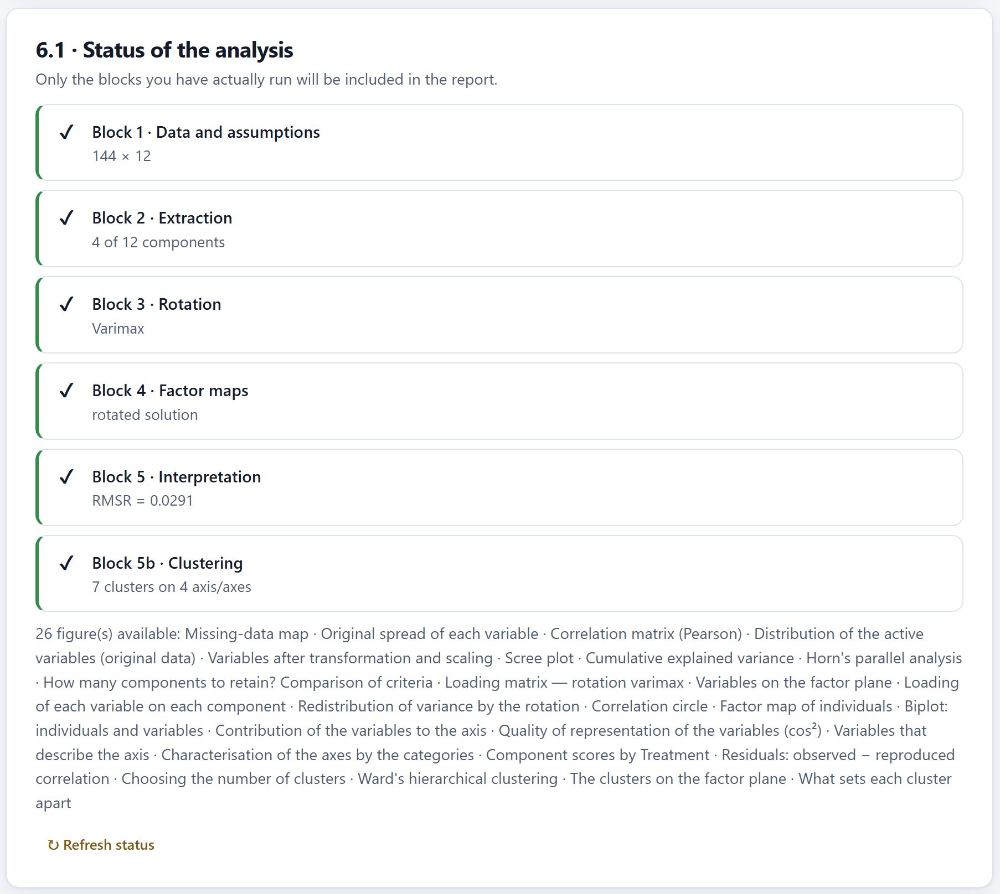
Figure 9.1. The 6.1 · Status of the analysis card with the integrated project: the six blocks that were run, each with its summary, and the list of the 26 figures that will go into the report.
Table 9.1. What each line of the status sums up.
Block
With PCA
With other methods
Block 1 · Data and assumptions
Observations × active variables.
The same.
Block 2
“4 of 12 components”.
With the abbreviation of the method: “2 of 6 axes”.
Block 3 · Rotation
The method, or “not applied”.
“does not apply to this method”, with ✔.
Block 4 · Factor maps
Rotated or unrotated solution.
The inertia of the 1–2 plane.
Block 5 · Interpretation
The RMSR.
How many axes were described.
Block 5b · Clustering
Clusters and axes used, or “optional, not run”.
Below, the available figures are listed: all those mounted on visible cards of the blocks, in the order of the app. Those on hidden cards —for example, the PCA ones after running another method— do not go in. If you change something in another block, press ↻ Refresh status; the status is also refreshed when the block is opened from the step bar or with the Go to the report → button of Block 5 in PCA. If you arrive from the clustering or from another method, press ↻ Refresh status before generating the report.
iNote · sections that switch off
The sections of blocks that were not run are unticked and dimmed on card 6.2: with other methods, the Rotation one; with no clustering, the Clustering one. In version 1.1, if you then run that block and refresh the status, the checkbox becomes available again but stays unticked: tick it by hand before generating the report.
9.2The report and its sections
The 6.2 · Report settings card defines the title, the authors, the sections and the figures.
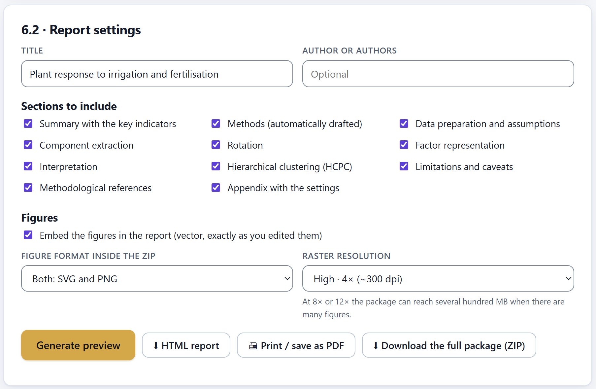
Figure 9.2. Card 6.2 with a title of its own, the eleven sections ticked, the figures embedded and the four output buttons.
Table 9.2. The options of card 6.2.
Option
What it does
Title · Author or authors
They head the cover page. With no title, the name of the method is used; the author is optional.
Sections to include
Eleven checkboxes (table 9.3). The citation of the program is always added at the end.
Embed the figures in the report
It inserts each figure as SVG inside the HTML, with the editing you gave it. Without it, the report carries only text and tables.
Figure format inside the ZIP · Raster resolution
They affect only the ZIP package (section 9.3).
Table 9.3. The sections of the report.
Section
Contents
Summary
Indicators: observations, variables, components, variance, KMO, Bartlett and RMSR; with other methods, individuals, columns, axes, inertia and, in CA, the χ².
Methods
A paragraph written with your parameters (section 9.4).
Data preparation and assumptions
Descriptive statistics with the MSA, a table checking the assumptions with “Yes”, “No”, “Marginal” or “Review”, and the figures of Block 1.
Extraction
Eigenvalues, the number proposed by each criterion, the decision taken and the figures of Block 2.
Rotation
Method, simple structure, rotated loading matrix (or pattern matrix) with the loadings above the threshold in bold, variance before and after, Φ if it is oblique, and the figures.
Factor representation
Coordinates, cos² and contributions, supplementary elements and centroids, and the figures of Block 4.
Interpretation
The reading of each component with its name, the test values, the group comparison, the RMSR, the figures and the results draft of Block 5.
Clustering (HCPC)
The draft of 5b, the criteria, the composition, the descriptors, paragons and specifics, and its figures.
Limitations and warnings
A list generated from the problems detected: n:p ratio < 5, KMO < 0.60, Bartlett not significant, redundant pairs, outliers, skewness, RMSR ≥ 0.08, descriptive contrasts, silhouette < 0.25 and cluster criteria that disagree.
Methodological references
Fourteen fixed references: Pearson, Hotelling, Kaiser, Horn, Cattell, Velicer, Jennrich, Ward, Husson and colleagues, among others.
Appendix with the configuration
The parameters of the analysis: file, rows, variables, missing data, transformation, scaling, components, parallel analysis, rotation and threshold.
The tables and figures are numbered on their own in the order in which they appear. The figure captions use the title each figure has in its editor, so a good title in the editor is a good caption in the report.
The four buttons
Table 9.4. The outputs of the report.
Button
What it does
Generate preview
It shows the report on card 6.3 and says how many sections and figures it included.
⬇ HTML report
It downloads a single …_PCA_report.html file, with no dependencies: it opens in any browser and can be sent by email.
🖨 Print / save as PDF
It opens the report in a new window and launches printing. Choose “Save as PDF”. If the browser blocks pop-up windows, the app says so: download the HTML and print it from there.
⬇ Download the full package (ZIP)
It generates the package of section 9.3.
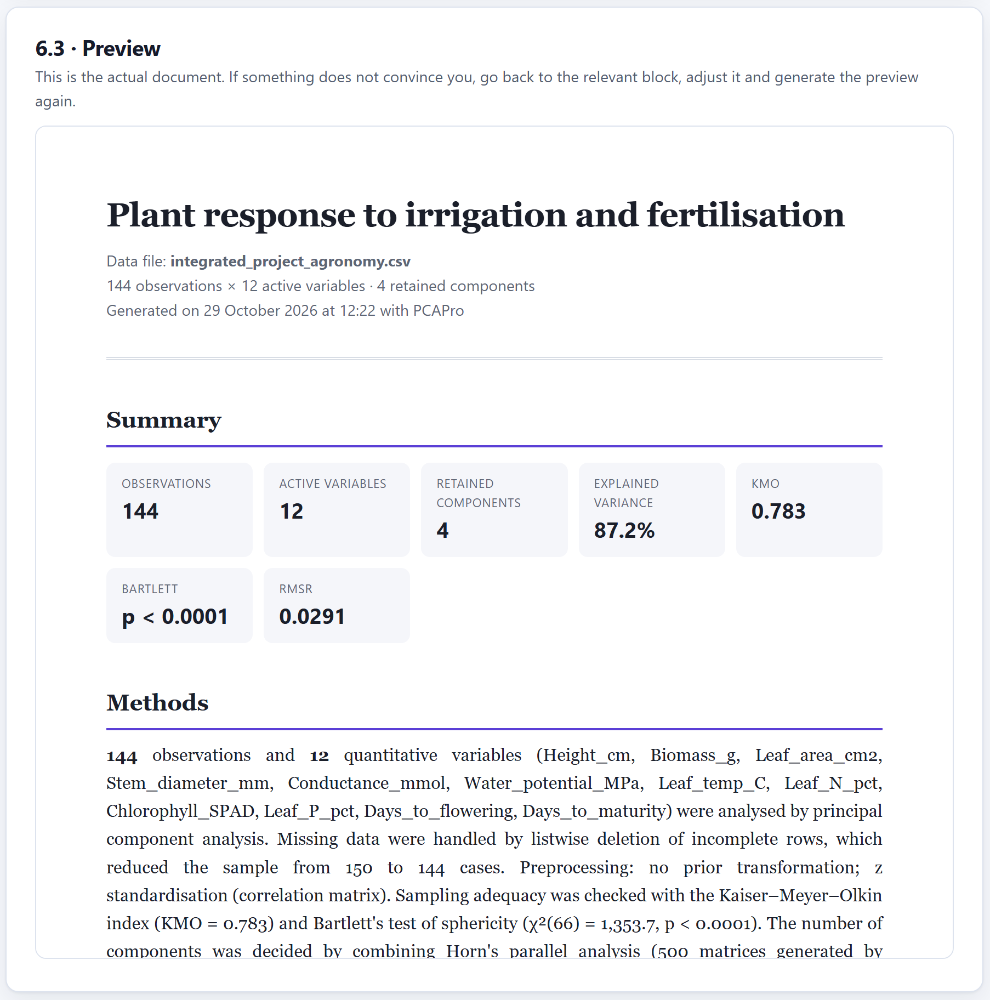
Figure 9.3. The 6.3 · Preview card: it is the real document, with the cover page —title, file, dimensions, date—, the indicators of the summary and the beginning of the methods. It scrolls inside its own frame.
!Important · the report is a snapshot of the moment
The report is built from the state of the app when the button is pressed. If you go back to a block and change something, generate the preview again before downloading. And remember that recomputing a block regenerates its figures with the default values (section 6.6): make the final edits to the figures just before generating the report.
9.3The ZIP package
⬇ Download the full package (ZIP) generates, in the browser itself, a …_PCA_complete.zip file with this structure. The button shows the progress figure by figure and, when it finishes, a message says how many files and megabytes it holds.
integrated_project_agronomy_PCA_complete.zip
├── PCA_report.html the same report as in section 9.2
├── CITATION.bib the citation in BibTeX
├── README.txt contents of the package and summary of the analysis
├── figures/
│ ├── 01_…_missing.svg numbered in the order of the app
│ ├── 01_…_missing.png
│ └── …
└── tables/
├── 01_prepared_matrix.csv
├── 02_correlations.csv
└── …
Table 9.5. The figures of the package.
Format
Result
Both: SVG and PNG (default)
Each figure twice: vector and bitmap.
PNG, JPG or WEBP
Bitmap only, at the chosen resolution (2× to 12×), with a white background.
SVG
Vector only; the resolution does not apply. It is the lightest package.
Table 9.6. The CSV tables of the package, according to what was run.
No.
PCA
CA, MCA, FAMD and MFA
01–03
Prepared matrix (with supplementary and qualitative variables), correlations and variable summary with MSA.
04
Eigenvalues with random p95 and broken stick.
Eigenvalues and inertia (in MCA, with Greenacre's %).
05–06
Unrotated loadings and scores.
Coordinates, cos² and contributions of columns and of rows.
07–09
Rotated loadings; structure and Φ if it is oblique.
Belonging to the method: χ² cells (CA), Cramér's V (MCA), r² and η² (FAMD), group inertia, RV and partial points (MFA).
10–11
Coordinates, cos² and contributions of variables and individuals.
—
12–14
Dimension description, test values and residuals.
Axis description and test values.
20–23
If there was clustering: assignment, criteria by number of clusters, description and paragons.
The CSV files go in UTF-8 with BOM and comma separated, so that Excel recognises the accents. With the integrated project and the six blocks, the package holds 16 tables, 26 figures in SVG and PNG, the report, the citation and the README: 71 files.
✓Decision rule · which resolution do I choose for the package?
If the package is for…
then
Archiving the analysis or sharing it with co-authors
SVG and PNG at 4×, the default options.
Sending the figures to a journal
SVG, or PNG at 8×. Check the weight first: with many figures, 8× and 12× can reach hundreds of MB.
An email or a presentation
PNG at 2×, or just the HTML report.
The ZIP is stored without compression so as not to depend on external libraries: if it weighs too much, compress it afterwards with your operating system.
9.4Writing the methods and citing
The Methods section of the report is a paragraph with your parameters. With PCA it describes the sample and the variables, the treatment of missing data, the transformation and the scaling, KMO and Bartlett, the retention criteria, the rotation, the threshold and, if there was one, the clustering. With the other methods it describes the table, the coding, the inertia and the criteria used.
!Important · what to correct in the methods paragraph
The retention criteria. With PCA, the paragraph always says that the number was decided by “combining” Horn, Kaiser, the broken stick, the MAP and the scree plot, even if those criteria disagreed. Write down which ones support the number you chose.
The preprocessing sentence. “No prior transformation and z standardisation were applied” is awkward: rewrite it as “The variables were standardised (z), with no prior transformation”.
The name of the methods. With other methods the paragraph starts with a capital letter in mid-sentence (“a Factor analysis of mixed data”), says “1 qualitative variables” and writes “scree elbow (cattell)” in lower case.
The appendix. It shows the internal codes: listwise, none, z. Translate them if you publish the appendix.
▸A complete methods paragraph
“A total of 144 plots and 12 quantitative variables were analysed by principal component analysis; the 6 plots with missing data were deleted. The variables were standardised (z), with no prior transformation. The adequacy of the data was verified with the KMO index (0.783) and Bartlett's test of sphericity (χ²(66) = 1353.7, p < 0.0001). Four components were retained, a number on which Horn's parallel analysis (500 permutations, 95th percentile), the broken stick and Velicer's MAP agreed, and they were rotated with varimax and Kaiser normalisation; the loadings were interpreted at |r| ≥ 0.40. Yield was projected as a supplementary variable. A Ward hierarchical clustering consolidated by k-means was applied to the four components (Husson, Josse and Pagès, 2010). The analyses were carried out in PCAPro, version 1.1.0 (Barrera-Guzmán, 2026).”
What the text should not say
Table 9.7. Common mistakes when writing up a factor analysis.
Instead of…
write…
“The factors explain…”, in a PCA
“The components…”: factor analysis is a different model.
“The PCA showed that the treatments differ”
“The treatments were placed in different areas of the plane”, and the test you used (MANOVA, PERMANOVA).
“PC1 explains height”
“Height is associated with PC1 (r = 0.92)”.
Percentages of each component with an oblique rotation
The joint variance and the pattern loadings (section 5.2).
Clusters with p values as proof that they exist
The silhouette, the agreement of the rules and the fact that test values describe (section 8.5).
Nothing about the preprocessing
Missing data, transformation and scaling: they change the result.
Citing PCAPro
The 6.4 · How to cite PCAPro card shows the reference with the ⧉ Copy the reference and ⧉ Copy the BibTeX buttons. It is the same one that appears at the end of every report and in the CITATION.bib file of the package. The reference uses the concept DOI, which always points to the most recent version; if your journal asks for the exact version, use the version DOI (section 2.4).
0
Data sent outside the machine
The report and the package are generated in your browser: no data leaves your computer, and the foot of the report states as much. You can work with confidential data offline.
The report closes the tour of the blocks. The appendices gather the file formats, the decision rules, the glossary, the troubleshooting, the verification of the computations and the references.
A–F
Appendices · reference material
Appendices
The appendices are not read straight through: they are consulted. Here are the exact rules with which the app reads and writes each file, the decision rules of the manual gathered together, a glossary of abbreviations, symbols and terms, the solutions to the most common problems, how the computations were checked against R and the full references of the methods.
AFile formats
BSummary of decision rules
CGlossary
DTroubleshooting
EVerification of the computations
FReferences
AFile formats
Chapter 3 explains how to lay the data out (tables 3.1 to 3.4). This appendix gathers the exact rules: how the app reads a file, how it turns a text into a number and what each file it downloads holds.
A.1 Which files it reads
Table A.1. The two types of file that card 1.1 accepts.
File
How it reads it
What is worth knowing
Delimited text .csv .tsv .txt
By the extension. It is read as UTF-8 text and split into columns with the rules of section A.2.
It is always read offline. It is the safest format for exchanging data between programs.
Excel workbook .xlsx .xls .xlsm
Everything that does not end in .csv, .tsv or .txt goes to the SheetJS spreadsheet reader (version 0.18.5). The first sheet is read; if there are several, Workbook sheet appears.
The reader is downloaded from the internet when the app opens: with no connection, save the sheet as CSV. The numbers in numeric cells arrive as numbers and do not depend on the decimal separator; dates arrive as text.
In both cases the first non-empty row gives the column names (with no leading or trailing spaces) and completely empty rows are discarded. A column with no name is called V plus its position: V3 if it is the third. A row with fewer cells than the header is completed with missing values.
A.2 How a text is split into columns
Separator. With Column separator (CSV) on Detect automatically, the app counts in the first line —the one with the names— how many times the comma, the semicolon, the tab and the vertical bar appear, and uses the most frequent. If they tie, the first in that order wins. A name such as Weight (g; dry) adds a semicolon to the count.
Quotation marks. A field between double quotation marks may contain the separator and line breaks; two quotation marks in a row inside it amount to one. A stray quotation mark in the middle of a cell opens a quoted section that lasts until the next quotation mark, and it can join lines together.
Encoding. UTF-8, with or without the initial mark (BOM), which is removed. Windows carriage returns are ignored.
When the pickers apply. Both separators are read at the moment of loading. If you change the decimal separator afterwards, press Restore automatic detection so that the table of variables is typed again; if you change the column one, drag the file onto the dotted area once more.
A.3 How a text is turned into a number
Each cell is cleaned before being converted: the spaces —including the non-breaking space— and a trailing % are removed, without dividing by 100. What is left must be a number with an optional + or - sign, digits, a decimal point and, if need be, an exponent (3e-4). Table A.2 shows what each option of Decimal separator does with the cases that usually cause doubt; the figures are the ones the app returns.
Table A.2. The same text read with the three options of the decimal separator. In red, readings that change the value with no warning.
Text in the cell
Detect automatically
Point (12.34)
Comma (12,34)
Comment
12.5
12.5
12.5
125
With Comma the points are deleted as thousands separators.
12,5
12.5
125
12.5
With Point the commas are deleted.
0,5
0.5
5
0.5
1,234
1.234
1234
1.234
Ambiguous: the detection reads it as a decimal.
1.234,5
1.2345
1.2345
1234.5
Thousands with a point and decimals with a comma: choose Comma.
1,234.5
1234.5
1234.5
1.2345
Thousands with a comma and decimals with a point.
12,3456
123456
123456
12.3456
The detection accepts only one to three decimals after the comma.
45% · 1 234
45 · 1234
45 · 1234
45 · 1234
The % does not divide; the space does not separate.
12.5 kg · −3
not a number
Units inside the cell, or the typographic minus sign (−) instead of the hyphen (-).
!Important · a decimal error is not always visible
A text that is not a number shows: the column stops being numeric or the warning about non-numeric values appears. By contrast, 0,5 read as 5 is still a valid number and the column enters the analysis on a scale ten times larger. After loading a file with decimal commas, check the minimum and the maximum of each variable on card 1.2; with Excel workbooks there is no need, unless the numbers are stored as text.
The missing-value texts are those of table 3.2, regardless of case: empty cell, NA, N/A, NaN, null, nulo, ., -, --, ?, ND, S/D, SD, missing, faltante and the Excel errors #N/A, #¡DIV/0!, #VALUE! and #VALOR!. A column is numeric if at least 85 % of its present values convert into a number and there are three or more; table 3.4 gives the rest of the typing.
A.4 The example files
Table A.3. The data that come with the app. Those in datos/ are comma-separated CSV files with a decimal point; all except iris.csv carry the initial UTF-8 mark.
File
Size
Contents and where it is used
iris.csv
150 × 5
Fisher's four floral measurements (1936) and the species. The Real example: iris (150 × 4) button; sections 4.6, 6.3 and 8.6.
practice1_soils.csv
90 × 8
Six soil properties, site and identifier. Section 3.8.
practice2_seeds.csv
120 × 11
Nine seed traits, species and identifier. Sections 3.8 and 4.6.
practice3_scales.csv
100 × 9
Seven variables on widely differing scales. Section 3.8.
practice4_no_structure.csv
80 × 8
Six almost independent variables: the negative control. Sections 3.8 and 8.6.
integrated_project_agronomy.csv
150 × 16
Twelve plant variables, treatment, block and yield. Chapters 4, 6, 7, 8 and 9.
Simulated example (not a file)
120 × 11
Leaf morphometry generated by the app from three latent factors, with a fixed seed, two empty cells and one NA. The Simulated example: leaf morphometry (120 × 9) button; chapter 5.
A.5 The files the app downloads
Every table is written the same way: comma-separated CSV, UTF-8 with the initial mark —so that Excel shows the accents properly—, lines ending in CRLF, and double quotation marks around any field containing a comma, a semicolon, quotation marks or line breaks. The numbers go with a decimal point and all their digits, unrounded, except the correlation matrix of Block 1, which carries six decimal places. The name begins with that of the data file without its extension, with no accents and with underscores instead of spaces and signs: integrated_project_agronomy_loadings.csv.
Table A.4. The downloads of each block. The names of the individual tables do not change with the language; those of Block 6 do (section 2.3).
Card 1.8, section 3.6. The matrix already transformed and scaled, with the supplementary and qualitative variables at the end. The report is plain text with the diagnostics and the recommendations.
B2
_eigenvalues.csv · _loadings.csv · _scores.csv
Table 4.8. With PCA only. The Retained column says yes or no.
Table 8.7. These two are written differently: with no UTF-8 mark, with LF line breaks, coordinates with six decimal places and the name of the data with its accents and spaces.
Figures
<figure>.svg · .png · .jpg · .webp
Table 6.13. Editable vector SVG; bitmaps from 2× to 12× the base size, with a white background or, in PNG, transparent.
B6
_PCA_report.html · _PCA_complete.zip
Tables 9.4 to 9.6. The HTML is self-contained: it carries the figures inside.
Structure of the ZIP package · integrated project with PCA, varimax and clustering (section 9.3)
integrated_project_agronomy_PCA_complete.zip
├── PCA_report.html the report; it prints to PDF from the browser
├── CITATION.bib the PCAPro reference in BibTeX
├── README.txt contents of the package and summary of the analysis
├── figures/ numbered in the order of the app
│ ├── 01_<figure>.svg by default, SVG and PNG at 4×
│ └── 01_<figure>.png …
└── tables/
├── 01_prepared_matrix.csv … 14_residuals.csv
│ with other methods, fewer tables and different content
└── 20_clusters_assignment.csv … 23_clusters_paragons.csv
only if clustering was run
With the language in Spanish, the folders and files of the package are called figuras/, tablas/, informe_ACP.html and LEEME.txt, and the ZIP ends in _ACP_completo.zip; the tables keep their number.
BSummary of decision rules
The decision rules of the chapters, gathered in the order in which they appear, each with the section it comes from. They serve as a checklist during an analysis; the full reasoning is in the section cited.
1Introduction to PCAPro
1.8How many individuals are needed?
1.9The KMO index
HHome, theory and how to cite
2.3Which language do I work in?
2.4What to cite besides the program
B1Data and assumptions
3.3Active, supplementary or out?
3.4How do I scale?
B2Extraction
4.2Which criterion do I follow?
4.4Which loading threshold do I use?
B3Rotation
5.1Do I rotate or not?
5.2Orthogonal or oblique?
B4Factor maps
6.2Can I read this element on the plane?
6.3What is read on a biplot?
6.6How do I export for publication?
B5Interpretation
7.1Is it a good name?
7.2How do I read a test value?
7.4Did I retain enough components?
B5bClustering
8.3How many clusters do I report?
B6Report
9.3Which resolution do I choose for the package?
1Introduction to PCAPro
✓Decision rule · how many individuals are needed?Section 1.8
Criterion
Reference
What it says
n:p ratio
Common consensus
Between 5 individuals per variable (minimum) and 20 (ideal); 10:1 is what is usually asked for.
Absolute number
Comrey and Lee
50 very poor, 100 poor, 200 fair, 300 good, 500 very good.
Strength of the structure
MacCallum and colleagues, 1999
With high communalities (> 0.60) and three or four marker variables per component, 60 to 100 individuals may be enough; with low communalities (< 0.40) more than 300 may be needed.
For interpreting
Rule of thumb
At least three variables with a high loading on each component you retain.
The modern rule is the third: how strong the structure is matters more than the raw number of rows. The Block 1 diagnostics compute the n:p ratio of your data and grade it.
✓Decision rule · the KMO indexSection 1.9
KMO
Kaiser's grade
What to do
≥ 0.90
Marvellous
Go ahead.
0.80 – 0.89
Meritorious
Go ahead.
0.70 – 0.79
Middling
Go ahead.
0.60 – 0.69
Mediocre
With reservations: state it when reporting.
0.50 – 0.59
Miserable
Review the variables with a low MSA.
< 0.50
Unacceptable
Do not run the analysis with those variables.
The same computation applied to each variable gives its MSA. Variables with MSA < 0.50 are removed one at a time, recomputing after each removal, because taking one out changes those of the rest.
HHome, theory and how to cite
✓Decision rule · which language do I work in?Section 2.3
If you are going to…
then…
Publish in Spanish or teach a class
Choose Spanish before loading the data and leave it there.
Publish in English
Choose English before loading the data: the figures will come out with their titles and axes already in English, and so will the report.
Switch halfway through the analysis
Run the blocks again from the first one you want in the other language, in order, and edit the figures afterwards: running a block again erases the changes made to its figures.
File names change with the language too: the report downloads as …_informe_ACP.html or …_PCA_report.html, and the tables in the ZIP go in tablas/ or in tables/.
✓Decision rule · what to cite besides the programSection 2.4
If your analysis used…
cite also
Any PCA
Pearson (1901) and Hotelling (1933), or a reference text such as Jolliffe (2002).
Parallel analysis to retain components
Horn (1965).
The MAP criterion
Velicer (1976).
Varimax or promax rotation
Kaiser (1958); Hendrickson and White (1964).
A test of sphericity
Bartlett (1950).
Clustering on the axes
Ward (1963); Husson, Josse and Pagès (2010).
There is no need to look the full details up: the Methodological references section of the report carries them, and appendix F gathers them together.
B1Data and assumptions
✓Decision rule · active, supplementary or out?Section 3.3
If the variable…
then
Describes the individuals from the same question as the others
Active.
Is the response you want to explain with the structure (yield, mortality)
Supplementary quantitative: that way you do not manufacture the relationship you want to find.
Is a design factor (treatment, block, site)
Qualitative / group, and outside the axes (section 1.4).
Is a sum, ratio or percentage of other active variables (area = length × width)
Keep either the original variables or the derived one, not both.
Measures another theme (climate among plant variables)
Supplementary, or else a multiple factor analysis with groups.
The preparation button is enabled with two active variables, but a PCA with fewer than three rarely has anything to summarise. The n:p ratio indicator turns green from 10 individuals per variable, amber between 5 and 10, and red below 5.
✓Decision rule · how do I scale?Section 3.4
If your active variables…
then
Are in different units (%, ppm, cm, g)
z standardisation. That is the case in almost every agronomic and ecological study.
Share unit and scale and you want to keep them
Unscaled. The app considers this defensible, in amber, if the largest standard deviation is no more than 4 times the smallest; above that it marks it in red.
Have real outliers you do not want to remove
Robust, and compare with z.
Are intensities or spectra with dominant peaks
Pareto.
If in doubt, standardise. A PCA on correlations is rarely a mistake; one on covariances with mixed units almost always is. Section 3.8 shows the case with figures.
B2Extraction
✓Decision rule · which criterion do I follow?Section 4.2
If…
then
Horn, broken stick and MAP agree
That is the number. The other criteria only confirm it.
Horn gives more than the broken stick and the MAP
Stay within the range between the two and choose by interpretability (section 4.3).
Only Kaiser or Jolliffe ask for one more axis
Do not add it because of them: they are the ones that overestimate most.
The PCA is on covariances
Ignore Kaiser and Jolliffe; the mean rule is their equivalent, but Horn by permutation is still valid.
An axis meets the numbers but cannot be named
Do not retain it: the interpretability criterion prevails.
The parallel analysis uses random numbers: on repeating the extraction the 95th percentile changes by a few hundredths (1.569, 1.578 and 1.555 for PC1 of the seeds in three runs). If a λ falls within 0.02 of its percentile, Horn's vote may change from run to run; raise it to 1000 repetitions before deciding.
✓Decision rule · which loading threshold do I use?Section 4.4
If your sample has…
highlight from
n ≥ 300
0.30 to 0.40
100 ≤ n < 300
0.40 (the default value)
n < 100
0.55, as the size recommendation of Block 1 asks
You want only what is very clear, for a summary
0.70: the variable shares half its variance with the axis
A loading of 0.40 amounts to 16 % of variance shared with the component; one of 0.70, to 49 %.
B3Rotation
✓Decision rule · do I rotate or not?Section 5.1
If your aim is to…
then
Interpret and name the dimensions
Rotate. That is what rotation exists for.
Use the scores in another analysis (regression, clustering)
Probably not: the unrotated components are orthogonal and ordered, exactly what that analysis needs.
You have a single component retained
It cannot be done: the app asks for at least two and says so.
The unrotated solution is already simple
Rotate anyway to check; if it does not improve, report it unrotated (section 5.3).
Rotating principal components is accepted practice —SPSS, SAS and psych::principal offer it— as long as it is stated. The theory card of the block includes the usual wording for the methods section.
✓Decision rule · orthogonal or oblique?Section 5.2
Apply an oblique rotation first (promax) and look at the largest |Φ| off the diagonal. If it is…
then
below 0.15
The axes came out almost orthogonal on their own: go back to varimax, which is more parsimonious.
between 0.15 and 0.32
The oblique one is justified, but the orthogonal one will give almost the same: compare and choose the clearer.
0.32 or more
The components share more than 10 % of variance: use the oblique one and interpret the pattern.
These are the same cut-offs used by the automatic note under the Φ table. With the leaf morphometry the largest |Φ| is 0.244 with two components and 0.309 with three: the two rotations tell the same story.
B4Factor maps
✓Decision rule · can I read this element on the plane?Section 6.2
cos² on the 1–2 plane
Label in the app
Reading
≥ 0.70
very good
Its position is reliable.
0.50 to 0.70
acceptable
Read it, with care over the details.
0.30 to 0.50
poor
Only the general direction.
< 0.30
not interpretable
It is badly projected: its information is on other axes. Look for another plane.
A short vector is not an unimportant variable: it is a variable this plane does not show. An individual with a high contribution and a low cos² is suspicious: it is usually an outlier dragging the axis.
✓Decision rule · what is read on a biplot?Section 6.3
Yes
No
The projection of an individual onto the direction of an arrow: far along its direction, high values on that variable.
The absolute length of an arrow compared with the distance between points.
Groups of individuals in the direction of a group of variables: they are characterised by them.
The distance between a point and the tip of an arrow.
✓Decision rule · how do I export for publication?Section 6.6
If the journal…
then
Accepts vectors (PDF, EPS, SVG)
SVG: it scales without losing sharpness and it can be edited in Inkscape or Illustrator.
Asks for a bitmap
PNG at 8× (~600 dpi); 4× as a minimum.
Prints in black and white, or you want accessibility
The Okabe–Ito or Greyscale palette, and Cividis for continuous scales.
The figure goes in a presentation with a coloured background
PNG with a transparent background, or the Dark theme.
Always put the percentage on the axes, state whether the solution is rotated and say in the caption which ellipse you used. The sign of an axis is arbitrary: if you invert it to read it better, say so.
B5Interpretation
✓Decision rule · is it a good name?Section 7.1
Question
If the answer is no…
Does it sum up all the marker variables, not just the first?
Look for a more general term, or check whether two themes are mixed.
If it is a contrast, does it say what lies at each end?
Use the form “A against B”, or a gradient name: “blade thickness”.
Do the supplementary variables and the extreme individuals confirm it?
The name describes the loadings, but not the system: think again.
Would a reader understand it without seeing the table?
Avoid column names: “Growth”, not “Height_cm, Biomass_g”.
The sign of an axis is arbitrary. Name the axis by its positive end and, if you invert the sign in one figure to read it better, do so in all of them and say so.
✓Decision rule · how do I read a test value?Section 7.2
|v|
Reading
< 1.96
The category is not distinguishable from the centre on that axis (in grey).
≥ 1.96 (*)
It characterises the axis with p < 0.05; the sign says on which side.
≥ 2.58 (**)
p < 0.01.
Order by |v|: the categories with the highest value are the ones that best characterise the axis. With a large n almost any small difference goes above 1.96: look also at the distance of the centroid on the map.
✓Decision rule · did I retain enough components?Section 7.4
RMSR
Reading
< 0.05
Good fit: the solution reproduces the structure.
0.05 to 0.08
Acceptable.
> 0.08
Structure is being lost: consider retaining one more component in Block 2.
A complement: that fewer than 10 % of the pairs have a residual above 0.05. One particular pair with a large residual points to a relationship that no axis takes up. With the integrated project, 4 components give RMSR = 0.029 and 8 of 66 pairs; with 3, RMSR = 0.105 and 19 of 66: the fourth component is needed.
B5bClustering
✓Decision rule · how many clusters do I report?Section 8.3
If…
then
The three rules agree and the silhouette is ≥ 0.50
That number is a property of the data: report it as such.
They disagree, but one option makes sense in your discipline
Choose it in Number of clusters and say that it was a decision, with the numbers of each rule.
The silhouette of the best option is < 0.25
There are no clusters to report: the cloud is continuous.
The jump chooses 2 and the other rules a high number with a low silhouette
Distrust the high number: it is usually the continuous cloud cut into slices (case 3 of section 8.6).
You do not cut at the tallest bar of the figure, but where the bars stop being tall: the last number that still “buys” inertia.
B6Report
✓Decision rule · which resolution do I choose for the package?Section 9.3
If the package is for…
then
Archiving the analysis or sharing it with co-authors
SVG and PNG at 4×, the default options.
Sending the figures to a journal
SVG, or PNG at 8×. Check the weight first: with many figures, 8× and 12× can reach hundreds of MB.
An email or a presentation
PNG at 2×, or just the HTML report.
The ZIP is stored without compression so as not to depend on external libraries: if it weighs too much, compress it afterwards with your operating system.
Common mistakes and the rule that prevents them
Topic 12 of the Block 1 theory, Common mistakes that ruin a PCA, points to this appendix. Table B.1 links each mistake with the part of the manual that prevents it.
Table B.1. The mistakes of topic 12 and where they are avoided.
Mistake
How the app or the manual prevents it
Section
Putting in variables derived from others: area = length × width, percentages that add up to 100.
The diagnostics flag the near-zero determinant and the singular matrix; remove the derived variable or one of the parts.
3.5, 3.8
Not standardising with different units.
The scales point of the list of recommendations and the “how do I scale?” rule.
3.4, 3.6
Interpreting small loadings.
Setting the threshold before looking and sticking to it.
4.4, 5.4
Retaining components by Kaiser alone.
Eight criteria and a weighted consensus in which Horn weighs most.
4.2, 4.3
Interpreting a 1–2 plane that explains little, without saying so.
The plane inertia indicator and the cos² of each element.
6.2
Forgetting that the sign of an axis is arbitrary.
Naming the axis by its two poles.
7.1
Confusing the closeness of individuals with that of variables on a biplot.
The “what is read on a biplot?” rule.
6.3
Using PCA as a hypothesis test or as a discriminant method.
Comparing groups with supplementary variables, without circularity.
7.3, 8.5
Not reporting the preprocessing.
The appendix of the report and the corrected methods paragraph.
9.2, 9.4
CGlossary
The abbreviations and symbols that appear in the app and in the manual, and the technical terms with the section where they are explained in more detail.
C.1 Abbreviations and symbols
Abbreviation
Meaning
PCA
Principal component analysis (ACP in Spanish).
CA
Simple correspondence analysis (AC).
MCA
Multiple correspondence analysis (ACM).
FAMD
Factor analysis of mixed data (AFDM).
MFA
Multiple factor analysis (AFM).
EFA
Exploratory (common) factor analysis; PCAPro does not do it.
HCPC
Hierarchical clustering on principal components.
PC1, PC2…
Principal components of the PCA.
RPC1…
Rotated components (Block 3).
Dim1, Dim2…
Axes of the other methods.
KMO
Kaiser-Meyer-Olkin index.
MSA
Measure of sampling adequacy of one variable.
MAP
Velicer's minimum average partial criterion.
RMSR
Root mean square residual.
RV, Lg
Coefficients of relation between the groups of the MFA.
SE
Standard error.
BOM
Initial mark of a UTF-8 file.
dpi
Dots per inch of an image.
Symbol
Meaning
n
Number of individuals (rows analysed).
p
Number of active variables.
k
Components or axes retained.
q
Number of clusters in the clustering.
Q, J
Qualitative variables and categories in total (MCA, FAMD).
λ
Eigenvalue: variance or inertia of an axis.
h²
Communality of a variable.
cos²
Quality of representation.
ctr
Contribution to an axis, in %.
Φ
Correlations between oblique components.
δ, κ
Parameters of oblimin and of promax.
v
Test value.
χ²
Chi-square (Bartlett, CA).
η², ω²
Proportion of variance explained by a factor.
r, r²
Pearson correlation and its square.
V
Cramér's V between two qualitative variables.
s
Mean silhouette of a partition.
D²
Squared Mahalanobis distance.
C.2 Terms
Table C.1. Terms in alphabetical order.
Term
Definition
Section
A
Active element
Variable or individual that takes part in the computation of the axes.
3.3
Benzécri and Greenacre adjustment
Correction of the inertia percentages of the MCA, which without it underestimate what each axis explains.
4.5
Biplot
Individuals and variables on the same plane; the individuals are read by distances and the variables by angles.
6.3
Broken stick
The share-out of variance that chance would give when breaking a segment into p pieces; the components that exceed it are retained.
4.2
C
Centroid
Mean point of the individuals of a category; that is how a supplementary qualitative variable is projected.
6.4
Communality
The part of the variance of a variable reproduced by the k retained components: the sum of its squared loadings.
4.1
Consensus
The number of components the app recommends: the mode of the criteria, weighted by their reliability.
4.3
Consolidation
Reassignment of each individual to the nearest centre after cutting the tree (k-means).
8.4
Contingency table
Counts of two crossed qualitative variables; it is the input of the CA.
4.5
Contribution
Percentage of the variance of an axis an element provides; those of all the active elements add up to 100.
6.2
Correlation circle
Map of the variables with radius 1; a long arrow is well represented on the plane.
6.3
cos²
Fraction of the distance from the centre of an element that is left on an axis or plane; close to 1, well represented.
6.2
D
Dendrogram
Tree of the fusions of the clustering; the height of each union is the inertia that is lost.
8.2
Dimension description
List of the variables and categories significantly associated with each axis.
7.2
E
Eigenvalue
Variance (or inertia) a component or axis captures.
4.1
Eigenvector
Direction of a component; its elements are the coefficients of each variable.
4.1
Elbow
Point of the scree plot where the fall of the λ flattens out (Cattell's criterion).
4.2
Concentration and confidence ellipse
The first encloses most of the individuals of a group; the second, the likely position of its mean.
6.4
G · H
Group (MFA)
Set of variables that measure one same aspect; the MFA balances their weight.
4.5
Hofmann complexity
Effective number of components a variable loads on; it is 1 with a perfect simple structure.
5.3
I · L
Inertia
Total spread of a cloud of weighted points; in PCA on correlations it is worth p.
4.5
Between- and within-cluster inertia
The parts of the inertia that separate the clusters and that remain inside them; their ratio measures the quality of the partition.
8.1
Loading
Correlation between a variable and a component in PCA on correlations.
4.1
Loading threshold
Absolute value from which a loading is interpreted.
5.4
M · O
Multivariate outlier
Individual whose Mahalanobis distance exceeds the 99.9th percentile of the χ² with p degrees of freedom.
3.5
Orthogonal and oblique rotation
Turn of the retained axes to come closer to the simple structure; the oblique one allows them to correlate.
5.2
P
Paragon
Individual closest to the centre of its cluster: the most representative one.
8.4
Parallel analysis
Horn's criterion: retain the components whose λ exceeds the 95th percentile of the λ of data without structure of the same size.
4.2
Partial points
Position of an individual as seen from a single group of the MFA; the overall point is their barycentre.
6.5
Pattern matrix
Regression weights of each variable on the rotated components; with oblique rotations it can exceed 1.
5.2
R
Residual
Difference between the observed correlation and the one the k components reproduce.
7.4
Role of a variable
Active, supplementary quantitative, qualitative, identifier or excluded.
3.3
S
Sampling adequacy
The degree to which the correlations between variables are due to common factors and not to isolated pairs; it is measured with the overall KMO and the MSA of each variable.
3.5
Scaling
Change of units before the analysis: z standardisation, Pareto, VAST, range, robust, centre only or unscaled.
3.4
Score
Coordinate of an individual on a component.
4.1
Scree plot
The eigenvalues in decreasing order.
4.2
Silhouette
It compares, for each individual, the distance to its own cluster with that of the neighbouring cluster; it runs from −1 to 1.
8.3
Simple structure
Solution in which each variable loads strongly on a single component and almost zero on the others (Thurstone).
5.3
Sphericity, test of
Bartlett's test that the correlation matrix is the identity; rejecting it is the minimum condition for summarising.
3.5
Structure matrix
Correlations between variables and rotated components; with an orthogonal rotation it coincides with the pattern.
5.2
Supplementary element
Variable or individual projected onto the axes without taking part in their computation.
6.4
T · W
Test value
Difference between the mean of a category on an axis and the overall mean, in units of standard error; |v| ≥ 1.96 is flagged.
7.2
Transformation
Change in the shape of a variable before scaling: logarithm, square root or inverse.
3.4
Ward's criterion
At every step it joins the two clusters whose fusion increases the within-cluster inertia least.
8.2
Weighted mode
Vote of the criteria with weights: Horn 3, broken stick and MAP 2, the rest 1; ties go to the smaller number.
4.3
DTroubleshooting
The messages of the app, grouped by the moment at which they appear, with their cause and what is worth doing. At the end, the known behaviours of version 1.1 that the manual points out in each chapter.
D.1 When opening the app and loading the data
Table D.1. Reading problems.
Message or symptom
Cause
What to do
“The example could not be loaded (…)”
The app was opened with a double click: the browser does not allow files to be read from the folder on its own.
Load datos/iris.csv with the file picker, or open the app with servidor.ps1 (table 1.4).
“The Excel file could not be read: …”
With no connection the spreadsheet reader is not downloaded; or the workbook is damaged or password protected.
Save the sheet as CSV UTF-8 (comma delimited) and load that file.
“The CSV could not be read: …”
The file is empty or it is not text.
Open it in a text editor; if it cannot be read, export it again from the program of origin.
“The sheet is empty.”
The first sheet of the workbook has no data.
Choose another in Workbook sheet.
Everything ends up in a single column
The separator detected in the first line is not the one of the file.
Choose the separator in Column separator (CSV) and drag the file in again.
The CSV is not in UTF-8 (typical of “CSV comma delimited” in Excel).
Save it as CSV UTF-8.
“Fewer than 2 active numeric variables were detected…”
The wrong decimal separator, units in the cells or columns marked as a group.
Check table A.2; mark the measurement columns as Active by hand.
A variable with values 10 or 1000 times larger
A decimal comma read with Point (12.34), or 1.234,5 with automatic detection.
Choose Comma (12,34) and press Restore automatic detection.
A numeric column comes out as an identifier or a group
A 1, 2, 3 code looks like a group (the “group code?” warning); a numeric key 1…n looks like a measurement.
Correct the role on card 1.2 (section 3.3).
Cells that empty themselves
The text is a missing-value code: SD, ND, -…
Rename those values before loading.
“Fewer than 3 complete rows remain…”
With Delete incomplete rows, almost every row has some missing value.
Impute by mean or median, or take out the variable with the most missing values.
“The transformation requested requires positive values; they were shifted…”
Zeros or negatives in a variable with a logarithm or a root.
A warning, not an error: report the constant added or choose another transformation.
“Error in the computation: …”
A combination of data and options the computation does not admit.
Check the roles and the missing values; the text after the colon indicates the cause.
D.2 During the analysis
Table D.2. Messages from blocks 2 to 5b and from the recommender.
Message or symptom
Cause and what to do
Section
A button of the step bar does not respond
The blocks unlock in order: the previous one has to be run first.
2.1
“MCA needs at least two qualitative variables.” · “FAMD needs at least one qualitative variable…” · “Choose two different variables for rows and columns.”
Qualitative variables with the right role are missing for the method chosen on card 1.9.
3.7
“MFA needs at least two groups.” · “The group ‘X’ has a single variable…”
Assign each variable to a group, with at least two variables per group.
3.7
“The variable ‘X’ is constant.” · “The contingency table is empty.”
A quantitative variable with no variation or two qualitative ones with no data in common, in FAMD, MFA or CA.
4.5
Horn's 95th percentile changes on repeating
Normal: it uses resampling. Raise the iterations if the decision depends on the last digit.
4.2
The signs do not match another program
Normal: the sign of an axis is arbitrary. Compare absolute values, or invert the whole axis.
7.1
“Extract the components in Block 2 first.” · “The rotation needs at least 2 components…”
Go back to Block 2 and extract, with k ≥ 2.
5.1
“The algorithm did not reach the tolerance in … iterations.”
It is usually due to nearly redundant variables or to too many components. Try another rotation or lower k.
5.2
“The correlation matrix is singular…”
There is a variable that is an exact combination of others: with no inverse there are no oblique scores. Remove it.
3.5, 5.2
“The factor maps need at least 2 retained components.”
A single component does not form a plane: raise k in Block 2.
6.1
“There are no supplementary elements defined.” · “There are no categorical variables defined.”
Assign those roles on card 1.2 and prepare the matrix again.
3.3
“Build the factor maps in Block 4 first.”
Block 5 uses the coordinates of Block 4.
7.1
“There is no factor solution to cluster yet.” · “Number of clusters out of range.”
Run a method before 5b; the number of clusters runs from 2 to the maximum on the card.
8.1
“There are … individuals: the Ward tree may take a while…”
A warning with more than 900 individuals; wait a few seconds.
8.2
D.3 Figures, report and package
Table D.3. Problems when exporting.
Message or symptom
Cause and what to do
Section
“Could not export: …”
The browser could not turn the figure into an image, for instance for lack of memory at a very high scale. Lower the scale or download the SVG.
6.6
“Could not copy automatically…”
The browser did not grant access to the clipboard. Select the text and copy it by hand.
7.5
“You need to have extracted the components at least (Block 2)…”
The report needs the extraction as a minimum.
9.1
“The browser blocked the pop-up window…”
Printing to PDF opens a new window. Allow pop-up windows for the site, or download the HTML and print it.
9.2
“The package could not be generated: …”
Not enough memory with many figures at 8× or 12×. Lower the resolution or choose SVG only.
9.3
Figures missing from the report
Only those on visible cards go in. Press ↻ Refresh on card 6.1 after changing something.
9.1
The analysis disappeared
The page was reloaded: the app only saves the language. Download the package before closing.
1.5
D.4 Known behaviours of version 1.1
Details of the interface and of the generated text that do not alter the computations, but that are worth checking before publishing.
Table D.4. What happens and how to work around it.
What happens
How to work around it
Section
The decimal detection reads 1.234,5 as 1.2345 and 12,3456 as 123456.
With thousands, or more than three decimals after the comma, choose Comma (12,34).
A.3
The list of criteria of Block 2 is not redrawn when the number of components changes.
Go by the criteria figure and the indicators, which do update.
4.3
With other methods, Block 2 has no downloads and no button towards the rotation, and the scree plot does not move the band of retained axes.
Move to Block 4 with the step bar; the tables are in the ZIP package.
4.5
With an oblique rotation, the percentages per component add up to more than the real variance.
Report the joint variance of Block 2 and, for each component, its loadings.
5.2
With the rotated solution, the scores correlate and the cos² of a supplementary variable can exceed 1.
Report the cos² of the supplementary variables with the unrotated solution.
6.4
The draft of Block 5 always cites Horn and the scree plot.
Correct the sentence with the criteria you actually used.
7.5
With other methods, the first line of the draft falls outside the box, and the group picker may keep the qualitative variables of another file.
Enter Block 5 with Go to interpretation → from Block 4.
7.6
On opening Block 5b with the step bar, the settings are left empty and clustering gives an error.
Enter with Cluster the individuals (HCPC) →, at the end of Block 5.
8.1
With a number of clusters other than the consensus, the draft and the indicator still say that the rules agree.
Correct the sentence: “the three rules indicated 2 clusters; 3 were retained because…”.
8.4
A section of the report unticked because its block had not been run stays unticked after running it.
Tick it by hand on card 6.2.
9.1
The methods paragraph says “combining” every criterion; with other methods it has wording errors; the appendix shows internal codes (listwise, none, z).
Rewrite the paragraph with the guidance of section 9.4 and translate the codes.
9.4
EVerification of the computations
A statistical program deserves trust when its results agree with those of independent implementations. PCAPro comes with a battery of tests that anyone can run, and this appendix additionally compares its results with those of R.
E.1 The battery of tests
The tests/ folder holds 120 tests grouped into 19 suites. Each expected value is of one of two kinds: a figure published by another implementation —R and its packages, or a classic example from the literature— or an algebraic property that must hold with any data, such as the contributions to an axis adding up to 100. No expected value was copied from an earlier run of PCAPro: comparing the program with itself would prove nothing.
Figure E.1. The tests/index.html page when it finishes: the green box with the 120 tests passed and the time, and below it each suite with its tests. A failed test would appear flagged, with the message that explains the difference.
Table E.1. The 19 test suites, in the order of the page.
Suite
Tests
What it checks and against what
Descriptive statistics
5
Mean, variance, quartiles, skewness, kurtosis and correlations with vectors of known result.
Linear algebra
5
Inverse, determinant, singular matrix and Jacobi decomposition: the sum of the λ is the trace and the vectors are orthonormal.
Probability distributions
6
Tails of χ², t, F and normal, and the test of a correlation, against R's pchisq, pt, pf and cor.test.
Sampling adequacy (iris)
3
KMO and MSA against psych::KMO; Bartlett against psych::cortest.bartlett; Mahalanobis distances.
Extraction (iris)
7
Eigenvalues and scores against prcomp; loadings against psych::principal; broken stick and MAP.
Rotation
10
Varimax recovers a simple structure turned on purpose; invariant communalities; coherent pattern, structure and Φ; quartimin = oblimin with δ = 0.
Coordinates and quality
5
cos² and contributions add up to what they should; ellipses and hull.
Group comparison
3
The ANOVA of an example that can be computed by hand, and Kruskal-Wallis.
Correspondence analysis
11
Principal inertias of Greenacre's smoking example (1984): 0.074759, 0.010017 and 0.000414; χ² = 16.4417 with n = 193. Row and column coordinates, cos² and contributions against FactoMineR::CA; transition formula and projection of supplementary rows.
Multiple correspondence
7
The exact identity with two variables, λ = (1 ± √λCA)/2, which also gives the standard coordinates of the CA; each category is the quasi-barycentre of its individuals; the Benzécri adjustment recovers the percentages of the CA.
Generalised SVD core
3
With uniform weights it reproduces the PCA; reconstruction and orthonormality.
Mixed data (FAMD)
7
Quantitative only: it is the PCA; qualitative only: it is the MCA; total inertia p + J − Q. With iris, coordinates, cos² and contributions against FactoMineR::FAMD; what is reported is what is drawn.
Multiple factor (MFA)
5
No group contributes more than 1 to the first axis; duplicating a group doubles the λ; RV symmetric in [0, 1].
Clustering (HCPC)
10
Increasing Ward heights; the inertia decomposes; the consolidation does not worsen it; with iris it finds the two real clusters.
Dendrogram
6
A tree of 2n − 1 nodes, with no inversions, with contiguous clusters and the cut line in its place.
Method recommender
11
Scenarios with an answer known by construction; every warning carries a figure.
CRC32 against its canonical value, the ZIP opens and verifies, quotation marks in the CSV.
Figures
7
Well-formed SVG, font scales, colour contrast and complete palettes.
E.2 How to run them
In the browser. With the app served by servidor.ps1, open http://localhost:8790/tests/index.html. The tests run on their own in a few seconds and the box at the top says how many passed.
On the command line, with a headless browser. With Node.js and Playwright installed and the server running, node tests/run-tests.mjs opens the same page, waits for the result and exits with code 1 if any test fails. It is the check the continuous integration of the repository runs on every change, together with the next step.
Without a browser.node lib/reproduce-iris.js loads the same numerical engine of the app as a Node module, repeats the PCA of iris and compares 15 values with R. It needs neither a server nor Playwright.
The tolerance of each comparison is the precision with which R publishes the reference: 10−5 for the eigenvalues, which R prints with six decimal places, and 10−3 for the KMO and the loadings, which are printed with three or four. To demand more would be to demand agreement with a rounding.
E.3 Reproducing the results in R
The code below, with the packages psych, FactoMineR and GPArotation, gives the reference values of iris and of the smoking table. It was run with R 4.4.2, and table E.2 compares its output with that of PCAPro 1.1.0.
R script
X <- iris[, 1:4]
pca <- prcomp(X, scale. = TRUE)
pca$sdev^2 # eigenvalues
cor(X, pca$x)[, 1] # loadings on PC1
head(pca$x[, 1], 3) # scores of the first three individuals
library(psych)
KMO(X) # overall KMO and MSA
cortest.bartlett(cor(X), n = 150) # test of sphericity
library(FactoMineR)
res <- PCA(X, graph = FALSE)
res$var$contrib[, 1:2]; res$var$cos2[, 1:2]
library(GPArotation)
L <- cor(X, pca$x)[, 1:2]
GPForth(L, method = "varimax", normalize = TRUE)$loadings
R script · correspondence analysis of the smoking data (Greenacre, 1984)
Table E.2. PCAPro against R with iris (PCA on correlations) and with the smoking table (CA). The signs of the axes may differ; absolute values are compared.
Result
R
PCAPro
λ1 · λ2 · λ3 · λ4 (prcomp)
2.918498 · 0.914030 · 0.146757 · 0.020715
equal to 6 decimal places
✔
Loadings on PC1 (cor)
.8902 · −.4601 · .9916 · .9650
.8902 · −.4601 · .9916 · .9650
✔
Scores of individuals 1–3 on PC1
−2.257141 · −2.074013 · −2.356335
−2.257141 · −2.074013 · −2.356335
✔
Overall KMO · MSA (psych)
.540077 · .584060 · .269575 · .530748 · .634207
equal to 6 decimal places
✔
Bartlett: χ² · df · determinant
706.9592 · 6 · 0.0081096
706.9592 · 6 · 0.0081096
✔
Contributions to Dim1 (FactoMineR)
27.15 · 7.25 · 33.69 · 31.91
27.15 · 7.25 · 33.69 · 31.91
✔
Varimax with k = 2, first column (GPArotation)
.9594 · −.1425 · .9436 · .9319
.9594 · −.1425 · .9436 · .9319
✔
CA of the smoking data: coordinates of SM, JM, SE on Dim1 (FactoMineR::CA)
|.0658| · |.2590| · |.3806|
|.0658| · |.2590| · |.3806|
✔
CA of the smoking data: coordinates of none, light, medium, heavy on Dim1 (FactoMineR::CA)
|.3933| · |.0995| · |.1963| · |.2938|
|.3933| · |.0995| · |.1963| · |.2938|
✔
!Important · correction made after version 1.1.0
In PCAPro 1.1.0 the coordinates of the columns of the CA, and those of the categories of the MCA, came out multiplied by the mass of each column: with the smoking data, none ended up at |.1243| instead of |.3933|, and the map brought the columns closer to the origin. In FAMD, card 2.5, the report and the ZIP package gave for each category a coordinate and a cos² that were not those of the point drawn on the map: with iris, setosa at −0.765 instead of −2.606. Eigenvalues, rows and individuals and contributions were correct in all three methods. This is fixed by the version published on GitHub on 16 September 2026, which gives the last row of table E.2; the nine tests added with it already count in table E.1. With results from 1.1.0, repeat the analysis; in CA and MCA it is enough to divide each column coordinate by its mass, the proportion of that column in the total.
iNote · four differences of convention that are not errors
Coordinates of the individuals in FactoMineR.PCA() standardises by dividing by n and not by n − 1, so its coordinates are those of PCAPro and prcomp multiplied by √(n/(n − 1)): −2.2647 instead of −2.2571 with iris. Eigenvalues, loadings, cos² and contributions agree.
stats::varimax. It stops with a loose tolerance and gives .9593 · −.1446 · .9442 · .9324. PCAPro carries on to the maximum of the criterion, like GPArotation.
Number of clusters in HCPC. FactoMineR suggests a cut with at least three clusters by default (min = 3) and with iris proposes 50/53/47; PCAPro considers from two upwards and its rules choose two (section 8.6). Even with three clusters, the partitions may not match, because they depend on how many axes are used.
Parallel analysis. It depends on random numbers in any program: the 95th percentile varies in the last digit from run to run and from program to program.
FReferences
The sources of the methods PCAPro implements and of the rules cited in the manual. Those marked with ◆ appear in the Methodological references section of the report (section 9.2).
F.1 Methods
Anderson, T. W. (1963). Asymptotic theory for principal component analysis. The Annals of Mathematical Statistics, 34(1), 122–148. doi:10.1214/aoms/1177704248
◆ Bartlett, M. S. (1950). Tests of significance in factor analysis. British Journal of Statistical Psychology, 3(2), 77–85. doi:10.1111/j.2044-8317.1950.tb00285.x
Benzécri, J.-P. (1979). Sur le calcul des taux d’inertie dans l’analyse d’un questionnaire. Les Cahiers de l’Analyse des Données, 4(3), 377–378.
Bernaards, C. A. and Jennrich, R. I. (2005). Gradient projection algorithms and software for arbitrary rotation criteria in factor analysis. Educational and Psychological Measurement, 65(5), 676–696. doi:10.1177/0013164404272507
Carroll, J. B. (1953). An analytical solution for approximating simple structure in factor analysis. Psychometrika, 18(1), 23–38. doi:10.1007/BF02289025
◆ Cattell, R. B. (1966). The scree test for the number of factors. Multivariate Behavioral Research, 1(2), 245–276. doi:10.1207/s15327906mbr0102_10
Crawford, C. B. and Ferguson, G. A. (1970). A general rotation criterion and its use in orthogonal rotation. Psychometrika, 35(3), 321–332. doi:10.1007/BF02310792
Cramér, H. (1946). Mathematical Methods of Statistics. Princeton University Press.
Escofier, B. and Pagès, J. (1994). Multiple factor analysis (AFMULT package). Computational Statistics & Data Analysis, 18(1), 121–140. doi:10.1016/0167-9473(94)90135-X
Frontier, S. (1976). Étude de la décroissance des valeurs propres dans une analyse en composantes principales: comparaison avec le modèle du bâton brisé. Journal of Experimental Marine Biology and Ecology, 25(1), 67–75. doi:10.1016/0022-0981(76)90076-9
Gabriel, K. R. (1971). The biplot graphic display of matrices with application to principal component analysis. Biometrika, 58(3), 453–467. doi:10.1093/biomet/58.3.453
Glorfeld, L. W. (1995). An improvement on Horn’s parallel analysis methodology for selecting the correct number of factors to retain. Educational and Psychological Measurement, 55(3), 377–393. doi:10.1177/0013164495055003002
Greenacre, M. J. (1984). Theory and Applications of Correspondence Analysis. Academic Press.
Greenacre, M. (2017). Correspondence Analysis in Practice (3rd ed.). Chapman & Hall/CRC.
◆ Hendrickson, A. E. and White, P. O. (1964). Promax: a quick method for rotation to oblique simple structure. British Journal of Statistical Psychology, 17(1), 65–70. doi:10.1111/j.2044-8317.1964.tb00244.x
Hofmann, R. J. (1978). Complexity and simplicity as objective indices descriptive of factor solutions. Multivariate Behavioral Research, 13(2), 247–250. doi:10.1207/s15327906mbr1302_9
◆ Horn, J. L. (1965). A rationale and test for the number of factors in factor analysis. Psychometrika, 30(2), 179–185. doi:10.1007/BF02289447
◆ Hotelling, H. (1933). Analysis of a complex of statistical variables into principal components. Journal of Educational Psychology, 24(6), 417–441. doi:10.1037/h0071325
◆ Husson, F., Josse, J. and Pagès, J. (2010). Principal component methods – hierarchical clustering – partitional clustering: why would we need to choose for visualizing data? Technical report, Agrocampus Ouest.
◆ Jennrich, R. I. (2001). A simple general procedure for orthogonal rotation. Psychometrika, 66(2), 289–306. doi:10.1007/BF02294840
◆ Jennrich, R. I. (2002). A simple general method for oblique rotation. Psychometrika, 67(1), 7–20. doi:10.1007/BF02294706
Jennrich, R. I. and Sampson, P. F. (1966). Rotation for simple loadings. Psychometrika, 31(3), 313–323. doi:10.1007/BF02289465
Jolliffe, I. T. (1972). Discarding variables in a principal component analysis. I: Artificial data. Journal of the Royal Statistical Society, Series C (Applied Statistics), 21(2), 160–173. doi:10.2307/2346488
◆ Jolliffe, I. T. (2002). Principal Component Analysis (2nd ed.). Springer. doi:10.1007/b98835
Jolliffe, I. T. and Cadima, J. (2016). Principal component analysis: a review and recent developments. Philosophical Transactions of the Royal Society A, 374(2065), 20150202. doi:10.1098/rsta.2015.0202
◆ Kaiser, H. F. (1958). The varimax criterion for analytic rotation in factor analysis. Psychometrika, 23(3), 187–200. doi:10.1007/BF02289233
Kaiser, H. F. (1960). The application of electronic computers to factor analysis. Educational and Psychological Measurement, 20(1), 141–151. doi:10.1177/001316446002000116
Kaiser, H. F. (1974). An index of factorial simplicity. Psychometrika, 39(1), 31–36. doi:10.1007/BF02291575
Kruskal, W. H. and Wallis, W. A. (1952). Use of ranks in one-criterion variance analysis. Journal of the American Statistical Association, 47(260), 583–621. doi:10.1080/01621459.1952.10483441
◆ Lebart, L., Morineau, A. and Piron, M. (1995). Statistique exploratoire multidimensionnelle. Dunod.
MacCallum, R. C., Widaman, K. F., Zhang, S. and Hong, S. (1999). Sample size in factor analysis. Psychological Methods, 4(1), 84–99. doi:10.1037/1082-989X.4.1.84
Mahalanobis, P. C. (1936). On the generalised distance in statistics. Proceedings of the National Institute of Sciences of India, 2(1), 49–55.
Pagès, J. (2004). Analyse factorielle de données mixtes. Revue de Statistique Appliquée, 52(4), 93–111.
◆ Pearson, K. (1901). On lines and planes of closest fit to systems of points in space. The London, Edinburgh, and Dublin Philosophical Magazine and Journal of Science, 2(11), 559–572. doi:10.1080/14786440109462720
Robert, P. and Escoufier, Y. (1976). A unifying tool for linear multivariate statistical methods: the RV-coefficient. Journal of the Royal Statistical Society, Series C (Applied Statistics), 25(3), 257–265. doi:10.2307/2347233
Rousseeuw, P. J. (1987). Silhouettes: a graphical aid to the interpretation and validation of cluster analysis. Journal of Computational and Applied Mathematics, 20, 53–65. doi:10.1016/0377-0427(87)90125-7
Thurstone, L. L. (1947). Multiple-Factor Analysis. University of Chicago Press.
◆ Velicer, W. F. (1976). Determining the number of components from the matrix of partial correlations. Psychometrika, 41(3), 321–327. doi:10.1007/BF02293557
Velicer, W. F., Eaton, C. A. and Fava, J. L. (2000). Construct explication through factor or component analysis: a review and evaluation of alternative procedures for determining the number of factors or components. In R. D. Goffin and E. Helmes (Eds.), Problems and Solutions in Human Assessment (pp. 41–71). Kluwer.
◆ Ward, J. H. (1963). Hierarchical grouping to optimize an objective function. Journal of the American Statistical Association, 58(301), 236–244. doi:10.1080/01621459.1963.10500845
F.2 Data, software and guides
Barrera-Guzmán, L. Á. (2026). PCAPro: an offline, browser-based platform for guided principal component analysis (version 1.1.0) [software]. Zenodo. doi:10.5281/zenodo.22649709
Fisher, R. A. (1936). The use of multiple measurements in taxonomic problems. Annals of Eugenics, 7(2), 179–188. doi:10.1111/j.1469-1809.1936.tb02137.x
Greenacre, M., Groenen, P. J. F., Hastie, T., D’Enza, A. I., Markos, A. and Tuzhilina, E. (2022). Principal component analysis. Nature Reviews Methods Primers, 2, 100. doi:10.1038/s43586-022-00184-w
◆ Kassambara, A. (2017). Practical Guide to Principal Component Methods in R. STHDA.
Lê, S., Josse, J. and Husson, F. (2008). FactoMineR: an R package for multivariate analysis. Journal of Statistical Software, 25(1), 1–18. doi:10.18637/jss.v025.i01
R Core Team (2026). R: A Language and Environment for Statistical Computing. R Foundation for Statistical Computing, Vienna.
Revelle, W. (2024). psych: Procedures for Psychological, Psychometric, and Personality Research [R package]. Northwestern University.
 1
2
3
4
5
6
7
1
2
3
4
5
6
7
 1
2
3
4
5
6
1
2
3
4
5
6
 1
2
3
4
5
6
1
2
3
4
5
6
 1
2
3
4
5
6
1
2
3
4
5
6